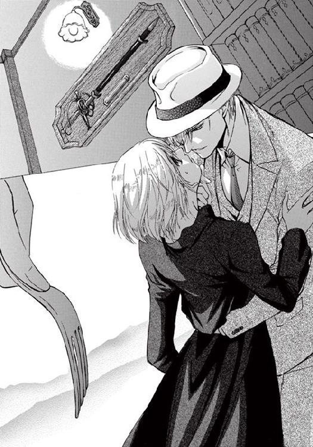
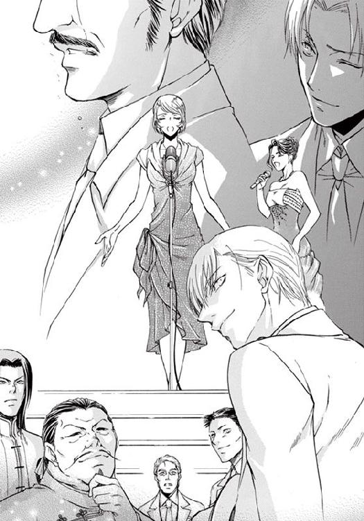

| マフィアに捧げるラブソング (ティアラ文庫) | |
| わかつき ひかる | |
| フランス書院 (2011) | |
【ティアラ文庫】
マフィアに捧げるラブソング【イラスト付】
わかつきひかる
イラスト／辰巳 仁
プロローグ 生きることは歌うこと
一九二〇年、秋。
アメリカ、イリノイ州シカゴ、ホーリーネーム大聖堂に、修道女たちの朗々とした詠唱が響き渡る。
パイプオルガンの伴奏にあわせて賛美歌をコーラスする聖歌隊を、ステンドグラスから差しこむ朝日が美しく照らす。
ヴィヴィアン・クロスロードは、聖歌隊のいちばん隅で賛美歌を歌っていた。髪を隠すスカーフの色が、彼女ひとり違うのは、見習いシスターであるしるし。
カトリック教会の修道院では、終生誓願をする前に、三年間の準備期間を設ける。彼女は今、初期修練の最中であった。
荘厳で美しい旋律に、日曜ミサに来たカトリック教徒は、みな敬虔な表情を浮かべている。
賛美歌が高音域にさしかかったとき、感心のざわめきが起こった。
小鳥のさえずりを思わせるホイッスルボイスが、大聖堂を渡っていく。
『これが人間の声か。信じられない......。心が洗われるようだ』
『綺麗な歌声だろ。ホーリーネーム大聖堂の名物シスターなんだよ。この高音はあの子しか出ないんだぜ』
『え？ どの子？』
『ほら、あの、グレイのスカーフの、見習いシスターだよ』
『かわいいシスターだ』
『ああ、十八歳だってさ』
キラキラする大きな青い瞳が印象的な彼女は、見習いシスターのお仕着せに包んだ身体を、揺らしながら歌っている。
ぱっと目を引く美人ではないが、楽しそうに賛美歌を歌うヴィヴィアンは、愛らしいという表現がぴったりくる。
咲き誇る薔薇ではなく、さわやかな香りを放つラベンダー。あるいはふんわりとほころびつつある百合のつぼみ。年頃になれば、どれほどに美しくなるだろうと思わせる。それがシスター・ヴィヴィアンという少女だった。
――ああ、私は歌が好きだわ。
歌うことは祈ること。
祈ることは生きること。
生きることは歌うこと。
そして、幸せで楽しいこと。
歌ってさえいれば、いろいろなしがらみや苦しさから自由になれる。
小鳥になって空を飛んでいる気分になれる。
父のことも、家のことも、父のせいで死んだ人のことさえ忘れられる。
彼女はシカゴ一、いや、アメリカ有数の資産家、クロスロード財閥のひとり娘だ。
本来なら、お屋敷の奥深く、執事やメイドにかしずかれ、お嬢様として暮らしているはずの彼女が修道院に入ったのにはわけがある。
ふとした偶然で、父の仕事を知ってしまったせいだった。
父のマイケル・クロスロードは、二年前に終結した欧州大戦（第一次世界大戦）で、武器商人として活躍し、巨万の富を築いた。
クロスロード商会は大戦終結後に、銃器製造販売会社として再スタートを切った。販売相手は軍人から一般市民へと変わったものの、死の商人であることにはかわりがない。
父が軍需産業に携わっていたことは、多感な少女には衝撃だった。
ヴィヴィアンは神に祈ることで死者を悼もうとした。
自分の着ているドレスも、髪を飾る宝石入りのヘアバンドも、紅茶も、本も、ボンボンキャンディも、父が売った機関銃や拳銃、銃弾の売り上げから出ていることに、耐えられなくなったのだ。
女学院を中退して修道院に入ったのは、死んでしまったたくさんの人への追悼のつもりだったのに、思いがけず歌に出逢い、聖歌隊に入ることができた。
修道院の生活は厳しかったが、やさしい人たちに囲まれて、充実した毎日を過ごしている。
歌は楽しいが、少しだけ心が痛い。
たくさんの人の死を背負った自分なのに、こんなに楽しくていいのだろうかと、罪悪感にかられてしまう。
歌が終わり、聖歌集をめくったとき、戸口に立った指導教官のシスター・アンジェラが、手招きしていることに気がついた。
人差し指を自分の鼻のアタマに当て、小首をかしげると、シスター・アンジェラが大きくうなずいた。
――いったい何が起こったの？
日曜ミサの最中に呼び出されるなんてはじめてだ。
ヴィヴィアンは、そっと聖歌隊を離れ、シスター・アンジェラのもとへと急ぐ。
厳しくてやさしい指導者である彼女は、いたましそうな表情を浮かべている。
「シスター・ヴィヴィアン、今すぐお屋敷に帰りなさい」
「え？」
父のマイケルは、ヴィヴィアンが修道院に入ることに反対していた。父の顧問弁護士に相続放棄の手続きをしてもらい、私は死んだものと思ってくださいと言って家を出た。
あれからそろそろ二年になる。
今頃になって呼び戻されるなんて、理由がまるでわからない。
「どうして、ですか？」
「ミスター・トンプソンから連絡がありました」
トンプソンは、父のマイケルの顧問弁護士だ。
弁護士が連絡をしてきた、ということは......。
「気を確かにお持ちなさいね」
指導教官の温かい手が肩に乗った。
シスター・アンジェラは、ヴィヴィアンが失神することを心配している。
黒々とした不安が、胸に渦巻く。
「何か、起こったのでしょうか？」
「あなたのお父様、ミスター・マイケル・クロスロードが、亡くなったそうです」
ヴィヴィアンは言葉を失って立ちすくんだ。
「キリエ・エレイソン、クリステ・エレイソン、キリエ・エレイソン（主よあわれみたまえ、キリストよあわれみたまえ、主よあわれみたまえ）」
修道女の歌う賛美歌が、深く荘厳に響いている。
第一章 薔薇と硝煙
「そんな......」
ヴィヴィアンは自分の家の前で絶句した。
富裕層の屋敷が建ち並ぶ、ハイタウンのディアボーン・アヴェニューにあるクロスロード邸は、門が閉ざされていた。
扉には真新しい鎖が巻かれ、『for sale（売り出し中）』の看板が下がっている。
自分の部屋の窓からのぞく人形も、水をたたえたプールも、薔薇の咲き乱れる英国式庭園も、父が乗っていたロールスロイス・シルバーゴーストも、ほんの二年前まで身近にあったものなのに、鎖が巻かれた門の奥で、ヴィヴィアンを拒むかのように沈黙している。
「ど、どうして......？」
いったい何があったのだろう。
アメリカ有数の富豪であるクロスロードが破産するなんてありえない。
あんなに元気だった父が、急死するなんて信じられない。
詐欺だろうか。仕事上のトラブルだろうか。父は憤死したのか。病死だろうか。事故死だろうか。
いや、それより、父はどこにいるのだろう。父はほんとうに死んだのか。
執事やメイドはどうしたのだろう。
力無くその場に膝をつくチャコール・グレイのドレス姿のヴィヴィアンを、道行く人がかかわりあいになりたくないとばかりに、目を逸らしながら通り過ぎていく。
修道女であるヴィヴィアンは髪を切ってショートヘアに整えている。令嬢風の上品なデザインのドレスに、現代的な短髪は違和感があり、よけいに事情ありげに見えて、誰も声を掛けようとはしない。
いつまでそうしていたのだろう。
人の気配を覚えて顔をあげると、堅苦しいスーツに身体を包んだ実直そうな中年男性が立っていた。
「ヴィヴィアンさんでしょうか」
――たしかこの人は父の弁護士の......。
「ミスター・トンプソン......」
「はい。弁護士のトンプソンです。お逢いできて幸運でした。お父様のご遺体を安置している教会にご案内致します」
「クロスロードは破産したのですか？ 執事やメイドはどうしました？」
「車の中でおいおい話すことにしましょう」
☆
Ｔタイプフォードのタクシーの車上で、トンプソン弁護士が話した内容は、ヴィヴィアンには衝撃的だった。
ヴィヴィアンが学業半ばにして、十六歳で修道院に入ったあと、気を落とした父は、慈善活動に傾倒したという。
銃と弾丸を商うクロスロード商会の経営を部下に譲り、軍需産業で儲けたお金を元手に、貧困層の集まるダウンタウンに孤児院を作り、困っている人を助けるために尽力した。
死因は、心臓発作による病死。
父の遺体は、ダウンタウンの教会に安置され、葬儀のときを待っている。
父は、株取引の失敗で破産した。
家屋敷は父の所有権を離れ、売りに出された。
家財道具は中古屋がきて処分する予定である。
メイドや執事など使用人は解雇された。
「そんな、ありえませんわ。父は株なんてしません。株のような実体のないものではなく、自分で汗を流して商品を作りあげ、危険を冒してものを売るのが、クロスロード商会のやり方だと言ってました」
「近年のクロスロードさんは、拳銃の開発や銃弾を売ることよりも、形のないもの......慈善活動に意義を見いだしていらっしゃいました。......人は変わっていくのです」
ヴィヴィアンは黙りこんだ。
車高が高く、屋根のない車なので視界が広く、流れていく景色が鮮やかに見える。
タクシーは、富裕層の集まるディアボーン・アヴェニューを抜け、ビジネス街が集まるミドルタウンを通り過ぎ、一路ダウンタウンを目指している。
車がシカゴ川を渡った瞬間、ビジネス街から庶民の町へと、周囲の景色がはっきりと変わった。
人々は皆、楽しそうな表情で、ダウンタウンを歩いていく。
ミサに参列する信者を見てなんとなく気付いていたが、ヴィヴィアンが修道院にいる間に、アメリカはいっそう豊かになったらしい。
自動車の交通量が増えて、商店は店舗からあふれるほどにものを並べ、人々は明るい表情で商品を買い求めていく。
活気のある様子を眺めていると、ふいに涙が出た。
「うっ」
――お父様、ごめんなさい！ 寂しい思いをさせてごめんなさい。看取ることができなくて、ひとりで旅立たせてしまってごめんなさいっ。私を許して。
ヴィヴィアンは両手で顔を覆い、嗚咽した。
シスターは泣いてはいけない。心を乱すことなく、いつも平常心でいなければ......。
ヴィヴィアンは指先で涙を払うと、まっすぐに顔をあげた。
トンプソン弁護士は、申し訳なさそうな表情で視線を外した。
車は商店街を抜けて角を曲がり、ダウンタウンの中心部へと入っていく。
町の景色がくすみ、ごみごみした様子になった。
「クロスロードさんには借金がいくらか残っておりますが、相続放棄の手続きをすでにされていますので、ヴィヴィアンさんに借金の取り立てが行くことはありません」
手続きを望んだのはヴィヴィアンだった。
あのときの父の悲しそうな顔を思い出すと、胸がえぐられるように痛くなった。
父はヴィヴィアンの、唯一の肉親だった。
「つまり私は、肉親を失い、無一文になったということですか？」
「その通りです。私の力不足を恥じております。お力になれず、申し訳ございません」
この弁護士は、どうしてヴィヴィアンを直視しないのだろう。
何かやましいことでもあるのだろうか。
やがてタクシーは、教会の前で止まった。
ヴィヴィアンが勤めるホーリーネーム大聖堂のような、大きな教会ではない。
地元の人々に愛される、こぢんまりとした教会だった。
「こちらですか？」
「はい。ミスター・クロスロードは、キリストの御前でお眠り遊ばされています。葬儀のミサについては修道女のみなさんから説明があると思います」
運転手に手を貸してもらってタクシーを降りる。
だが、弁護士は、そのまま座席に座り続けている。
「私はこれで失礼します」
「ご一緒してくださいませんの？ 父はトンプソンさんを信頼しておりました。どうか葬儀に出席して、父に別れを告げてください」
「申し訳ございません。用事がありますので。それに私はもう、クロスロード家の顧問弁護士ではございません......出してくれ」
タクシーは白いガスを吐き出しながら、走り去っていった。
クロスロード家は破産した。葬儀場所まで送ってくれたのは、トンプソン弁護士の厚意によるものだ。
これ以上は望めない。
花束を持った黒いスーツの青年が、教会の中に入っていく。白い薔薇が一輪、ぽろっと落ちた。
「落ちました」
「ありがとう」
青年は振り返った。強い光を宿した緑の瞳が、帽子の鍔ごしに、まっすぐにヴィヴィアンを見つめる。
――なんて綺麗な人なの......。
ヴィヴィアンは青年に見とれた。
年齢は二十代の後半だろうか。三つ揃いのゼニアのスーツが良く似合う。白いシャツに、細いネクタイを結んでいる。
背が高く、細いがしっかりと筋肉のついた身体をしている。左肩の内側がふくらんでいるのが見て取れた。
黒いスーツに、白い薔薇ばかりを集めた花束が、美しく映えていた。
こんなにも花が似合う男性をはじめて見た。
短く整えられたさらさらの金髪にしろ、貴族的な顔立ちにしろ、映画スターのように洗練されているのに、軟弱さはない。精悍で男らしい雰囲気だ。
若いが、高い地位についている人なのだろうか。人に命令しなれた者だけが持つ、威圧感がある。
「君は......？」
青年は目を細めてヴィヴィアンを見た。
「私はヴィヴィアン・クロスロードと申します。父がこちらの教会でお世話になっていると聞きました」
「ヴィヴィアンさんは、ミスターの娘さんなのか。ミスターは残念なことになってしまった。気をお落としのことだと思う。心よりお悔やみ申しあげる。その花は君が手向けてくれたまえ」
青年は帽子を取ると胸に当て、目を伏せて哀悼の意を表した。
ようやくわかった。
彼の黒いスーツは喪服。
左手に持った白い花束は、神のみもとに旅立つ父へのプレゼントだ。
ヴィヴィアンは青年にお礼を言った。
「ありがとうございます」
「見た目と違ってしっかりした娘さんだな」
「え？」
「若いのに、落ち着いている。取り乱していない」
泣いてないのは、信じられないせいだ。
突然すぎて、どこか他人事のような気分でいる。
これは夢ではないか、目覚めると修道院のお祈りの最中で、私は不敬にも居眠りをしていたのではないか、そんな気分がいなめない。
思考力が低下して、ただ脊髄反射で行動しているだけだ。
「さっ。入ろう。もうすぐ葬儀がはじまる」
青年はヴィヴィアンの背中を軽く叩いた。
卵に似たにおいがかすかにした。
父も同じ香りを纏って家に帰ってくることがあった。
そのにおいが、拳銃を撃つとき銃弾と一緒に放たれる硝煙のにおいだと知ったのはいつだったか。
この男性のスーツの左肩を、内側から盛りあげているもの。それは拳銃だ。
「父が生前、お世話になった方でしょうか」
「ミスターとは仕事上の取引があり、年齢を越えて親しくさせて頂いた」
野性的な雰囲気を漂わせているのも道理。
この男性は銃を日常的に使う職業についている。だが、軍人にしては上品だし、武器商人につきものの腰の低さがない。いったいどういう人なのだろう。
「お名前をお聞きしてもかまいませんか？」
「マーティーン・ウォルバーグ」
☆
日曜のミサは荘厳でありながらも明るくて、楽しい気分になれるが、葬儀のミサは寂しくて悲しく、そして神秘的だ。
――お父様は、こんなにもたくさんの人に、愛されていたのね。
ヴィヴィアンは棺の横で弔問客に頭を垂れながら、献花の多さに感動していた。
参列者がひきもきらずやってきて、棺に眠る父に一輪ずつ花を手向けていく。
「おじさん。僕たちを孤児院に入れてくれてありがとう」
「私は院長先生のおかげで、学校に行くことができました。院長先生ありがとう。このご恩は忘れません。必ず立派な人間になります」
孤児院の子供たちが、父に花を手向け、口々に感謝の言葉を捧げる。
「いい人だったねぇ。去年の冬、すごく寒かったとき、毛布を配ってくださっただろう。新品の、暖かい毛布でねぇ。灯油さえ買えなかったから、ありがたかったねぇ」
お年寄りが杖を手にしながら花を捧げる。
「クロスロードさん。ありがとう。お疲れさま。日曜のミサのあとでパンを配ってくださったこと、ご恩は忘れません」
――お父様の人生は、豊かだったのだわ。
質素だが、温かい葬儀だ。父は、父が愛したダウンタウンの住民たちに送られて旅立っていく。
「聖体拝領がないんですね」
本来、カトリックの葬儀のミサでは、聖体拝領といって、神の血である葡萄酒と、神の肉であるパンを捧げる。その儀式が略されていることに気付き、修道女に聞くと、彼女が小声で教えてくれた。
「禁酒法が施行されてから、葡萄酒を集会所で出すことができなくなったのです」
修道院にいるヴィヴィアンだが、禁酒法のウワサは小耳に挟んだことがあった。
禁酒法は、今年施行されたばかりの法律で、正式には国家禁酒法という。アメリカ全土でのアルコールの製造販売、輸送、提供を禁ずる法律である。この法律に違反した場合、二千万ドル以下の罰金、または禁固刑に処せられる。
だが、葬儀のための葡萄酒さえ禁止されているとは知らなかった。
「法律なら仕方がありませんね」
涙ひとつ流さず、喪主としてミサに参列するヴィヴィアンの耳に、ウワサする声が聞こえてきた。
「クロスロードさん、破産したんだって。お気の毒に」
「財産をだまし取られたんだよ。憤死だよなぁ」
「慈善家だったのに、ひどいことをするもんだ」
――え？
クロスロードの財産が、困っている人たちを助けるために使われたのなら、それはそれでかまわない。だが、だまし取られたというのは聞きずてならない。
いったい何があったのだろう。
ウワサの主を確かめようとしたとき、オルガンの音が荘厳に鳴り響き、賛美歌が木霊する。
「アレルヤ、アレルヤ、アレルヤ。主よみもとに近づかん」
ヴィヴィアンはあせった。
――お父様はほんとうに病死なの？ クロスロードが破産した理由は何？ 誰か教えて。私に教えて。
「出棺です」
ヴィヴィアンはあわてて、棺について移動した。
マーティーンと孤児院の年長者が棺を運び、裏手の墓地へと移動していく。
皮肉なほどの青空が、父の眠る棺と参列者を包んだ。
暗いところから明るいところに出たせいか、クラッと来た。息が苦しい。哀しみが痛みとなって胸を締めつける。
歌おう。青い空の向こう、神のみもとに旅立つ父を、聖歌で送ろう。
おまえは歌が上手だねと言った父に、私の歌を聴いてもらおう。
――ねぇ、聞いて、お父様。私、修道院で歌に出逢ったの。私は聖歌隊の一員なの。私は歌を歌って生きていくのよ。
――私は幸せに過ごしています。だから、安心して旅立って。
ヴィヴィアンは大きく深呼吸すると、賛美歌を歌いはじめた。
「アレルヤ、アレルヤ、アレルヤ。主よみもとに近づかん」
修道院の聖歌隊で鍛えたヴィヴィアンの歌声は、高音部がぴいんと響いて美しい。
硬質でありながらも聞く人をやさしい気持ちにさせるその声は、温かい氷のようにキラキラと輝きながら、哀しみを溶かしていく。
棺をかつぐマーティーンが、驚きの表情でヴィヴィアンを振り返ったのが見て取れた。
参列者とヴィヴィアンの歌が響くなか、父の棺が墓穴の中へと降りていく。
「肉体は土より出でたり、されど霊は土より入れられたるものなり」
神父が祈り、聖水と白薔薇がふりまかれ、棺に土が被さっていく。
「永遠の安息を。アーメン」
式が終わった。
安堵のあまり、こらえていたものがぷつんと切れた。
目の前がすっと暗くなり、何も見えなくなる。
ヴィヴィアンは倒れ伏した。
意識を失う寸前、たくましい腕に抱き留められたのを感じた。
☆
その見習い修道女は、聖歌隊のいちばん隅で、自信なさそうに聖歌集を手にして立っていた。
緊張しているのか、生まれたての小鳥のように、ぶるぶると震えている。
ミスターの自慢の娘だから、きっと綺麗な少女だろうと思っていたのに、綺麗というよりかわいらしい雰囲気で、十六歳という年齢よりも幼く見えた。
シスター服でさえ彼女には重いのではないかと思うほどの、線の細い少女だ。
化粧気のない顔にしろ、ほっそりした手足にしろ、めりはりのない身体付きにしろ、売春宿のコケティッシュな女性を見慣れた目には、はっきり言って貧相に見えた。
日曜ミサが賛美歌とともにはじまった。
彼女は、コロラトゥーラ・ソプラノで歌いはじめた。
ステンドグラスから差しこむ光が、グレイのスカーフの彼女を明るく照らす。
歌がはじまった刹那、彼女の雰囲気がはっきり変わった。
あんなに不安そうだった表情が輝いて、小鳥のさえずりを思わせるホイッスルボイスが弾んでいる。歌うことが楽しくてたまらないのだろう。
声量の豊かさに圧倒される。あんなに細い身体をしているのに、これだけの声がいったいどこから出るのだろう。
聖歌隊の修道女が何人いても、彼女の声はわかる。
「祈りなさい。主はあなたを許したもう。歌いなさい。主は罪を許したもう」
聞き慣れた歌詞のはずなのに、彼は雷に打たれたように立ちすくんだ。
彼は、昨夜の抗争で、敵対するギャングのひとりを射殺していた。引き金を引いたときの衝撃が、まだ手のひらに残っていた。
まるで自分のために歌っているように思えた。
罪を許すと歌うその見習いシスターは、彼の目には天使に見えた。
彼女の歌をもっと聴きたい。
心の奥にしんしんと染みいって、ささくれた気持ちをなだめるようなその歌を。
それから彼は、毎週のように、ホーリーネーム大聖堂に通った。
日曜ミサの、彼女の歌を聴くために。
彼女の聖歌は、聞くたびに上手になっていく。
一年半ほど通っただろうか。
彼女は、次第に大人になっていった。
あんなに子供子供していたのに、身体付きが丸みを帯び、シスター服の線がやわらかくなっていく。
ピンクに上気した頬も、桜色の唇も、長いまつげも、もう大人の顔立ちだ。
このまま修道女にさせるのはいかにも惜しい。
なんであの子が、あんなにも気になるのだろう。
女なんて、金さえ払えばいくらでも抱ける。
ダイヤモンドをプレゼントして、好きだと耳元でささやけば、女の心なんて思いのままだ。
ただ一方的に眺めるだけ、ただ歌を聴くだけなのに、彼女が気になって仕方がない。
これではまるで、映画スターに憧れる少年ではないかと思いながらも、ミサ通いがやめられない。
その少女とはじめて話したのはミスターの葬儀を行う教会の前。
スカーフをつけてない彼女を見たのははじめてだった。
深窓の令嬢にふさわしい上品なデザインのドレスを着て、青ざめた顔をした彼女は、胸が痛くなるほどに愛しかった。
☆
ヴィヴィアンは夢を見ていた。
修道院に入って半年ほどの日曜ミサ。
聖歌隊に選ばれたばかりで緊張していた。
――そうだわ。私、震えが止まらなかったんだわ。でも、歌い出すと、緊張がほどけて、震えが止まるのよね。
賛美歌が聞こえてくる。
違う。賛美歌ではない。女性歌手が歌う、低くかすれた陽気なジャズ。恋と酒の歌。
ようやく目が覚めた。
ヴィヴィアンは身体を起こした。
――ここはどこなの？
ヴィヴィアンは、暖炉の前のソファで眠っていた。富豪とは言えないまでも、そこそこ裕福なアッパーミドル階級のお屋敷だ。
マーティーンと名乗った青年。父の仕事仲間。失神する寸前、彼のたくましい腕に抱きしめられたのを覚えている。ここは彼の屋敷だろう。
「あのう、誰かいませんか？」
ヴィヴィアンは立ちあがり、遠慮がちに声を掛けた。
人の気配はするのに、答えてくれる人はいない。
「えーっと、そのう、お世話になりました。帰りたいんですが......」
ふと窓を見たヴィヴィアンは驚きのあまり目を見開いた。
窓の外は黒く濁り、今が真夜中であることを示している。
ヴィヴィアンは思いもよらないほど、長く眠っていたようだ。
――帰るって、どこに帰るの......。
もう、クロスロード邸には入れない。あの屋敷は人手に渡ってしまった。こんな夜中に出歩けない。朝になるまでこの屋敷にやっかいになり、タクシーで修道院に帰ろう。
――ほんとうにそれでいいの？
修道院に帰ってしまえば、父の死や破産の真相を知ることはできなくなる。今修道院に帰ることはできなかった。
だが、着の身着のままで、わずかなお金しか持たず、住む場所さえもない。
――どうしたらいいの？ お父様。私に教えて。
――マーティーンさんに助けてもらう？ でも、信用できるの？ 他に頼れる人は？ 親戚は？ 父の部下は？
父の葬儀に来た仕事関係者はマーティーンだけだ。
弁護士さえも葬儀に出席しなかった。
お金でつながる関係は、お金がなくなると破綻してしまうものらしい。
頼れるような親戚はいない。
マーティーンに頼るしかない。
彼はヴィヴィアンに同情的だった。きっと助けてくれるだろう。
ジャズがかすかに聞こえてくる。賛美歌の荘厳さとはぜんぜん違い、跳ねるような軽快なリズムだ。四ビートの三連符。クラッシックとは拍の取り方が逆になっている。
さあ、みんな、スウイングしよう 楽しもうぜ
神のみもとに 旅だっちまうと おしまいなんだ
だから ブラザー スウイングしよう 楽しもうぜ
一度きりの人生 もたもたしてると 暮れちまうぜ
――なんて皮肉な歌詞......。
なのに、聞いているだけで楽しくなって、自然と笑みがこぼれてしまう。酒でかすれた低い声なのに、この女性歌手は、歌いっぷりがすごくいい。歌が楽しくてならないのだろう。刹那的なほどの元気さだ。
――なんて明るくて楽しい歌声なの。
――私もこの歌、歌ってみたい。
ヴィヴィアンはソファから立ちあがり、音のするところを探した。
レコードにありがちな籠もった音ではない。楽団が奏で、マイクの前でジャズシンガーが歌う生の音声だ。
だいいち、レコードでジャズはありえない。オペラや賛美歌、軍歌に国歌。それがレコードの定番だ。
ジャズは、暖炉のほうから聞こえてくる。
よく見ると、暖炉がわずかに斜めになっていて、床にこすれたあとがある。
秋だから当然とはいえ、暖炉には火が入っていないばかりか、使ったあともない。あまりにも新しすぎる。
それに、暖炉の前の絨毯に、たくさんの人が行き交ったあとのようなへこみがあった。
ヴィヴィアンは火の入っていない暖炉を押した。
「きゃっ」
軽く押しただけなのに、目の前で暖炉がぐるっと回転し、地下に降りる階段が現れた。
――手品みたい！
ジャズは、地下から響いてくる。
ヴィヴィアンは音楽に引かれるようにして階段を下りた。
階段の下にあるドアの向こうから、陽気な気配が漂ってくる。たくさんの人の熱気と料理の匂い。それに葉巻とアルコールの香り。パーティをしているのだろうか。
――え？ お酒って、法律違反のはずじゃ......。
「クロスロードさん、死んだんですかい？」
「ああ、気の毒に。慈善家だったのに。財産は全て人手に渡ったそうだ。助けることができなかった」
ドア越しに声が聞こえてきた。
マーティーンの声だ。
「私がクロスロードさんを殺したようなものだ」
――彼が父を殺した？
いや、まだそうとは限らない。
だが、マーティーンは、クロスロード家の破産のいきさつと、父の死の理由を知っている。
知りたい。父がなぜ死んだのか。なぜ破産したのか。
父が武器商人であった苦しさから、ヴィヴィアンは修道院へ逃げこんだ。
いつもいつも逃げていた。
ヴィヴィアンがもしも家にとどまっていたら、父は死なずに済んだのだろうか。
――今度は逃げない。
「クロスロードさんの娘さんを連れてきた。かわいそうに無一文になってしまった。私が世話をしてもいいと思っている」
ぞっとした。
お嬢様で見習いシスター、世間知らずのヴィヴィアンだが、『世話をする』という言葉の意味はわかっている。愛人にするという意味だ。
――なんで私みたいな地味な女を？ 冗談よね。聞き間違いだわ。
「おいっ。そこの女！」
厳しい誰何の声がして、いきなり腕をつかまれた。年若いギャングだった。ホルスターから下げた拳銃を、上着で隠そうともせず、これみよがしに誇っている。
「誰に断ってここに入ってきた!?」
若いギャングの拳銃には、引き金の横にＸの飾り文字が入っていた。クロスロード商会の商標だ。
どきんとしたが、自分自身に言い聞かせる。
――怖がっちゃいけない。だってお父様の拳銃だもの。私はこの拳銃で、お父様に育てて頂いたのよ。
すうと息を吸いこむと、動揺して荒れていた気持ちがすっと凪いだ。
ヴィヴィアンは落ち着いた口調で言った。
「私は、ミスター・マーティーンの客人です」
「ボスの？」
ギャングはじろじろとヴィヴィアンを見た。
「ボスの好みの女じゃないように思えるが......」
マーティーンの正体がわかった。
ギャングのボス。
マフィアのトップ。
ゼニアのスーツにプラダの革靴を履き、パナマ帽を被り、硝煙のにおいを全身に纏った危険な男。
戦慄がぞくぞくっと、背中を伝いあがっていく。
――ヴィヴィアン、今すぐ修道院に戻りなさい！
――いやよ。戻らないわ。父がなんで死んだのか知りたいの。
――ギャングスターのミストレスになりたいの？
――そんなもの、誰がなるものですか！
冷静な自分と、情熱の自分が言い争いをはじめた。
――何か方法があるはずよ！
情熱が冷静を言い負かす。
そのとき、ジャズシンガーの歌声がひどくかすれた。
聖歌隊にも、同じ症状が出たシスターがいた。喉の声を出すところにできものができて、声が出なくなってしまう病気だ。
腕のいい医者にできものを取ってもらわないと、声が出せなくなってしまう。
「どいて」
ヴィヴィアンはギャングを押しのけると、ドアを開けて地下の部屋に入った。
「いらっしゃい」
カウンターの内側のドレスの女性がヴィヴィアンを値踏みするように見ている。
葉巻と酒と香水のにおい。けだるい気配。しどけない仕草。
「入場料、二ドルよ」
彼女にコインを二つ渡す。
胸の谷間がくっきり見える、肌もあらわなドレス姿の女性に、スーツの男性。
スピーク・イージィ。
ギャングの経営するナイトクラブ。
禁酒法の施行下で、違法にお酒を提供する地下酒場。
ステージの歌姫は、なおも歌おうとしていたが、しわがれた声しか出なくなった。泣きそうな顔をすると、喉を押さえ、舞台の袖に走りこむ。
ジャズピアノとドラム、ギターのジャズバンドが、困ったように顔を見合わせ、演奏だけを続けている。
歌がなく伴奏だけが響く楽団なんて、聖歌隊の一員であるヴィヴィアンには、悪夢そのものだ。
聖歌隊では、誰かひとり欠けたとき、他の誰かがそのパートを担当する。
――代わりに歌える人はいないの!?
ヴィヴィアンは周囲を見渡した。
マイクの前に楽譜がある。
歌手のための楽譜なら、歌詞が書かれていることだろう。
――楽譜があるなら、私は歌える！
ヴィヴィアンは無言で舞台にあがると、マイクの前に立った。
ソファにしどけなく座っていたマーティーンが、火のついたままの葉巻を灰皿に置くと、帽子を指先で押しあげてヴィヴィアンを見た。
仕草のひとつひとつが絵になっている。まるで映画スターのような男性だ。パナマ帽の影で、ギャングスターの緑の瞳がきらっと光った。
アーアーアーと、軽く声を出してから、ジャズギターの三連符にあわせて歌い出す。
まったくはじめてのリズムだが、賛美歌と逆に拍を取れば歌えるはずだ。
愛する人のテーブルに 案内してよ ウェイター
氷のグラス お酒を注いで 恋をチェイサーに
それから バンドマン 欲しいのは ジャズ
お酒という名のリズムをちょうだい スウイング
ヴィヴィアンのコロラトゥーラ・ソプラノが、もぐり酒場に小鳥のように響き渡る。
修道院の聖歌隊でレッスンを重ねたヴィヴィアンの歌は、酒場の歌姫とレベルがはっきり違っていた。
高音部がはじけ、リズムが跳ねる。三連符が躍り出す。
――なんて楽しい歌！
はじめてのジャズは、混乱と動揺と哀しみにからまっている気持ちをほどき、ヴィヴィアンを楽しくさせる。
生来の音感が、賛美歌と逆の拍を瞬時に取り、明るく楽しいシャッフルを作りだす。
『初見でここまで歌えるのかよ』
『すげぇな。この女、何者なんだ？』
『素直な歌声だな。声質がいい。高音域がとくに見事だ』
バンドマンの感心の声が背中にかかる。
ギタリストとピアニスト、ドラマーにトランペッターが顔を見合わせ、大きくうなずいたのが気配でわかった。
どこかけだるげに響いていた音が、その瞬間、はっきり変わった。
ギターとピアノ、ドラムにトランペット、それにヴィヴィアンの歌声が、重なりあい響きあう。
ヴィヴィアンの歌を中心にして、バンドマンが音をあわせてきた。
ジャズバンドの全員が、彼女を歌姫と認めたのだ。
突然舞台に立った、チャコール・グレイのお嬢様風ドレスの少女。
髪だけは流行の断髪だが、肌を隠す生真面目なデザインも、化粧気のない頬も、上流階級の令嬢という外見だ。
どこから見ても素人女性である彼女が、お行儀の良いクラッシックではなく、ヤンチャなジャズを歌う意外さと、高い歌唱力に驚いて、客はみなぽかんと口を開けて舞台を見ている。
みなはアイリッシュ・ウイスキーを飲むことさえ忘れて、ヴィヴィアンの歌に聞き惚れた。お酒を飲むためにやってきたというのに。
手拍子さえも起こらないのは、ヴィヴィアンの歌唱力に圧倒されているせいだ。
曲が終わった。
ヴィヴィアンは、舞踏会でダンスを申しこまれたときのように、腰を屈めるおじぎをした。
一瞬遅れて万雷の拍手が響く。
「ミスター・マーティーン」
歌の高揚が残る口調で、ヴィヴィアンはマイクに向かって話しかけた。
――私はミストレスなんてならない。でも、修道院にも帰らない。お父様の死因と、破産の理由を調べるの。
――私の選んだ方法はこれよ！
「ジャズシンガー・ヴィヴィアンはいかがですか？ 今なら雇うことができますよ」
――身体は売らない。歌を売る！ ミストレスになんてなるものですか!!
スピーク・イージィがドッと沸いた。
『なんだ、歌手の売りこみだったのかよ』
『令嬢みたいないでたちは、作戦だったのね』
『ダウンタウンを二分するギャング、アイリッシュ・マフィアのボスに営業するんだから、かわったことをしないと目立たないよな』
『素人にしては歌が上手すぎると思ってた。プロの歌だよ』
マーティーンが片手をあげると、ざわめきがスッと静かになった。
「雇おう。ヴィヴィアンは私が世話をする。マーティーン・ウォルバーグが後ろ盾だ。いいな？」
宣言だった。
マーティーンが指でぴんとコインを弾いた。
回転しながら飛んできたそれを、ヴィヴィアンは手のひらで受け止めた。
ぱしっと軽い音がした。
十ドル金貨だった。
財閥の令嬢としてはなんでもない額だが、修道女なら一カ月分の生活費に相当する。
「チップだ。取っておけ」
「ありがとうございます」
ギャングのボスというパトロンを得た、歌姫ヴィヴィアンは、マーティーンに向かってもう一度おじぎをした。
「ヴィヴィアン、こっちへこい。契約を交わそう」
マーティーンが手招きした。
――危険だわ。
――わかってるわ。そんなこと。
――貞操と真実とどちらが大事？
――どちらも大事よ！
ヴィヴィアンはしぶしぶ舞台を降りた。
無人のテーブルに置いてあったフォークをそっとつかみ、テーブルの陰でスカートのポケットに入れる。ポケットからはみでた柄は肘で押さえてごまかした。
「私は休む。何かあったら起こしてくれ」
マーティーンがヴィヴィアンの腰に手を回し、出口へと誘った。
「令嬢歌姫と、朝までしっぽりと契約ですかい？」
「あらあら、ボスは底なしなのよ。こんなかわいらしいレディが相手なんてムリよ。腰が抜けて立てなくなるかもよ」
「おいおい、俺はおまえとは一度も寝てないだろ」
「あらいやだ。冗談よ。女に恥を掻かせるものではなくてよ」
どっと笑い声が響いた。
その笑い声に、淫靡な響きがあることに気付き、ヴィヴィアンは顔をしかめる。
身体を寄せられ、服越しに彼の身体が密着する。葉巻のにおいにむせかえりそうだ。
――なんてたくましい身体なの。まるで筋肉の鎧のよう。
上半身をよじって逃れようとしたが、肩をきつく抱かれていて、逃れることができない。
仕方なく、彼と寄り添いながら階段をあがっていく。
階段をあがって屋敷へと出て、出口を回転させて暖炉に戻した瞬間、酒と葉巻のけだるい気配がなくなり、ごく普通の屋敷になった。
非日常が日常へと変わる鮮やかさに驚いてしまう。
「ヴィヴィアン、暖炉は開けたままにせず、元に戻してくれ。保安官に摘発されてしまう」
「違法酒場、ですよね？」
「合法だ。彼らは私が招待した、パーティの参加者だ」
「パーティですか？」
「人の集まるところで不特定多数の人と酒を飲んではいけない、というのが禁酒法だ。だから、民家で、友人たちと飲むぶんには、合法だ」
――詭弁だわ。マフィアの言いそうなことね。
「悪法も法です」
「イエス・キリストは、酒を飲んではいけない、と言っているか？」
「いいえ、主は、飲酒は悪だとは言っていません。葡萄酒はキリストの血で、パンはキリストの肉です」
「だろう？ 法律の抜け穴をうまく使い商売させてもらっている。出している酒は、アイリッシュ・ウイスキーの最上級品だ。名誉にかけて卑怯なことはやっていない」
マフィアが名誉を口にする違和感に黙ってしまう。
暖炉のある部屋を抜けて階段をあがり、廊下の向こうのドアを開けて部屋に入る。
書斎兼寝室だった。
重厚なライティングデスクが置いてあり、本棚いっぱいに本が並んでいる。
古めかしい剣が壁に掛けてあるが、あれは飾りだろうか。
恥ずかしくてベッドを見たくなかったため、本棚の本をじっと見る。
マルサスの『人口論』、アダム・スミス『国富論』、ヘーゲル『精神現象学』フォイエルバッハ『唯心論と唯物論』。カール・マルクス『資本論』。難しい本ばかりだ。
「ここはミスターのお屋敷？」
「そうだ。私の屋敷だ。ヴィヴィアン、私のことはマーティーンと呼んでくれ。ミスターはつけなくていい」
「マーティーン」
不思議な響きだ。
生粋のアメリカ人にはない名前だ。
「あなたはアイリッシュ？」
「そうだ。私はアイルランド系アメリカ人だ。移民の子だよ」
抱き寄せられた。ギャングスターの手がヴィヴィアンの顎にかかり、上向かせる。
綺麗な顔が近づいてくる。
――唇を奪う気だわ！
予期していた彼女は、ポケットからフォークを取り出し、マーティーンの脇腹に突き刺した。だが、筋肉が硬くて岩を突いているみたいだ。
ヴィヴィアンはあせった。フォークを逆手に持ち、力任せに突き刺しているのに、動揺している気配はみじんもない。
抱きしめられて、キスをされた。
「んっ......ぁっ......」
唇の先だけをあわせる挨拶のキスとは違う。葉巻とお酒のにおいのキスだ。唇を割って入ってきた熱い舌がヴィヴィアンの口の中でうごめく。
脳裏がかっと熱くなる。
噛んでやろうと思うのに、身体に力が入らない。荒々しいキスは、まるで強いお酒のようで、身体の芯がとろんとなる。

激しい接吻に、フォークをつかむ手から力が抜けた。フォークは間の抜けた音を立てて床に落ちた。
「う......ん......っ。は......」
キスは熱く、いやなはずなのに心地が良い。逃げたい気持ちがしぼんでいく。
――何をしているの？ ヴィヴィアン！ 見習いとはいえ修道女でしょっ？ 逃げなさいっ。
――逃げられないの。気持ちがいい。もう少しこうしていたいわ。
永遠にも思えるほどの長いキスが終わり、唇が離れる。
ヴィヴィアンは唇を押さえると、よろめきながらあとずさった。
口が痺れて声が出ない。
マーティーンの緑の瞳が、床に落ちたフォークを認めた。
あわてて飛び出してフォークをつかもうとしたが、マーティーンが一瞬早くしゃがみこみ、フォークを持った。
「フォークじゃ、身を護ることはできないな」
マーティーンは、フォークを投げた。
ひゅっと空気を切り裂く音を立てて飛んだフォークは、ダーツのように壁に突き刺さり、自重で斜めに垂れさがった。
あんなに力をこめて突き刺したのに、スーツに穴が開いているだけで、脇腹にはケガひとつない。
「身を護りたいなら、拳銃を使え」
マーティーンは上着をパッと撥ねあげた。
めくれあがったスーツから、ホルスターに収めた銀色の拳銃がのぞく。次の瞬間には、彼の手に銀色に光る拳銃が握られていた。
「これはスミス＆ウェッソンのリボルバーだが、弾倉が回転式になっていて、銃弾が六つ入る。こんな風に」
彼は、拳銃の胴体部分を指で動かして弾倉を見せた。六つの弾丸がこめられた弾倉は、銀色の花のようで機能美が感じられる。
「撃つときは、撃鉄を起こして、弾倉の弾を発射位置に移動させる」
親指でハンマーを押すと、カチッという金属音がした。
マーティーンの緑の瞳に、おもしろがっているかのような色が浮かぶ。子供じみた表情だ。
「そして狙いを定めて、引き金を引く。照準をあわせるやり方だが、銃口のでっぱりにあるこの印と、この部分のへこみが重なりあうようにする」
「きゃっ」
銃口を向けられたヴィヴィアンは、両手で頭を押さえ、その場にへたっと膝をついた。
耳が痛くなるほどの衝撃音がして、ヴィヴィアンの背後で何かが破裂した。フォークのあったところに穴が開いていた。半分に千切れたフォークが、一瞬遅れて床に落ち、金属音を立てる。
もうもうとほこりが舞う。
拳銃の銃口からかすかに煙があがっている。
「スミス＆ウェッソンはいい銃だが、女には重いし、反動が大きくて手首を痛める可能性がある。護身用に、口径の小さい、軽い拳銃を用意してやるから、バッグに入れて持ち歩くようにしろ。俺は片手撃ちをしているが、はじめて銃を撃つなら、右手に左手を添えて、照準がぶれないようにしたほうがいい」
「銃は、持ちたくありません」
「ここはダウンタウンの真ん中で、おまえはマフィアのボスのミストレスだ。修道院でもなければディアボーン・アヴェニューの屋敷でもない。自分の身は自分で守れ」
硝煙のにおいを纏いながら、マーティーンが言う。
目の前で発砲された衝撃に、身体がガクガクと震え出す。
マーティーンが手首をつかんで引っ張った。
「痛いっ。手を離してっ！」
「契約だと言ったろう？」
手を離された代わりに、背中から抱きしめられ、硝煙のにおいが強くなった。
背中から回された手が胸のふくらみをきゅっとつかみ、もう片方の手が顎にかかる。人差し指が唇をなぞっている。
首を絞められそうな恐怖を覚え、背筋に戦慄が走った。
「酒場の歌姫が後ろ盾なしにやっていけると思っているのか？ それとも君は、パトロンの契約の意味さえ知らないほどのねんねなのか？」
「く......っ」
意味はわかる。
だが、見習い修道女であったヴィヴィアンにとって、それは、結婚してはじめて子供をつくるために行う神聖な行為であったし、好きでもない男に肌を許すなどできるわけがなかった。
ましてマーティーンは、父を殺したかもしれない男なのだ。
「いや......っ。や、やめ、て......」
大きな手が服の上から胸乳をつかみ、きゅっと揉む。検査するような無造作な手つきなのに、四肢の先端に向けて戦慄が走った。身体が小刻みに震え出す。
――どうすればいいの？ どうしたら？
相手は遊びのように拳銃の引き金を引けるギャングスター。
言うことを聞かなければ、殺される。
「私は歌姫。歌は売るけど、身体は売らない！」
ヴィヴィアンはきっぱりと言った。
とっさに言ったひとことに、自分自身が驚いている。
歌を歌って、生きていきたいと思っていた。
身体を売る代わりに歌を売り、ダウンタウンにとどまって、父の死の真相を調べたかった。
――そうよ。私は、歌手になりたいんだわ。
聖歌隊の一員として神に捧げる歌を歌うのではなく、歌手としてステージに立ち、人に向かって歌いたかった。
歌が楽しい自分にずっと罪悪感を覚えていたのに、さっきステージに立ったとき、ただひたすら楽しかった。
生きることの喜びを歌いあげるのがジャズだから、罪悪感など覚えない。
――ジャズのシンガーに、私はなりたい！
とんと突き飛ばされ、きゃっと悲鳴をあげる。
ヴィヴィアンはうつ伏せに床に倒れ伏した。
あわてて身体をねじって後ろ手をつき、上半身を起こす。恐怖で冷や汗が噴き出た。
自分を見下ろしてくるギャングスターをおどおどと見上げる。
「歌を売りたかったら、もっと上手になるんだな」
「え？」
「おまえの歌は、まだ荒削りだ。歌のレッスンを受けて訓練すれば、もっと上手になる」
マーティーンは笑った。
子供のように無邪気な笑顔だ。
ギャングのボスとしての危険な雰囲気が払拭されて、甘い印象に変わる。
ヴィヴィアンはその落差に混乱した。
「君はどこで歌を覚えた？」
「修道院で......。私は見習いシスターなんです。初期修練の最中で、ホーリーネーム大聖堂の、聖歌隊の一員でした」
「聖歌隊......」
マーティーンは、何か考えていることがあるかのように、目を細めた。
「俺は、音楽に関しては素人だが、才能に頼るばかりだと、喉を痛めそうな気がする。いい先生を探してやる。ボイス・トレーニングを専門に教える先生がいいだろうな。あとは舞台用のドレス、メイク、靴......。普段着もいるだろう。服屋と美容師を手配しよう」
ヴィヴィアンは立ちあがり、マーティーンと向かいあった。
拳銃を構えていたとき、冷たい色をたたえていた緑の瞳が、温かい色に染まっていた。もう、身の危険は感じない。
「ありがとうございます。......そのう、仕事は？」
「ステージは安息日（日曜）以外の毎晩だ。夜の十時と十二時、二時のショーで、ステージに立って歌ってくれ。ちゃんと給料は払う。ウチの酒場にはジャズシンガーが必要だ。給料は週払いだ」
「契約......は......？」
「もう一度キスを、と言いたいところだが、見習いシスターにはムリだな」
マーティーンは膝をつき、ヴィヴィアンの右手を取ると手の甲にキスをした。
「俺の歌姫......」
――え？
ヴィヴィアンは混乱した。
まるで、騎士がお姫様にするような仕草だった。
ヴィヴィアンはアメリカ有数の富豪の令嬢だったが、成りあがりの武器商人の娘にすぎない。まして今は、親も財産もない修道女見習いだ。
その自分が、ギャングのボスに、王女のように遇される異状さに混乱する。
からかわれているのかと思ったが、マーティーンには真摯なものが感じられ、バカにしているふうはない。
――この人、何者？ いったいどういう人なの!?
長いような短いような時間が経過して、マーティーンが手を離した。
唇が当てられた手の甲が熱い。
マーティーンは踵を返した。ドアに向かって歩き出す。
「今日はここで休むといい。明日、隣の部屋にベッドを入れて、おまえの私室にしてやる」
「どこへ？」
「そうだな。おまえにはふられたから、売春宿にでも繰り出して、 娼 婦を抱いて眠ることにしよう」
マーティーンは、右手の人差し指と中指を揃えて立てると、肩の上で左右に振った。
ドアが閉まり、ひょうひょうとした足取りで歩くマーティーンの後ろ姿を隠す。
ヴィヴィアンはぽかんとして、ギャングスターの後ろ姿を見送った。
第二章 はじめての夜
ボイス・トレーニングのレッスンは厳しいが楽しい。
「お腹から声を出して」
「喉で歌ってはだめ。身体で歌を支えるの」
「あなたは高音域が綺麗で、コロラトゥーラ・ソプラノのいい歌手だけど、もっと息に気をつけなさい」
「立ち方が悪い。もっと姿勢良く。あなたは歌うとき前屈みになるクセがある。それでは横隔膜が開かず声が出ない」
「あなたは腹筋と背筋が弱いわ。家でもトレーニングをしなさい。体幹を鍛えてバランスを取り、身体を楽器にするのよ」
立ち方から息づかい、発声からはじめる本格的なレッスンだ。
先生はイタリア系アメリカ人のオペラ歌手。
ふっくらした身体付きの、笑顔のやさしい先生で、教え方は、聖歌隊のレッスンよりずっとていねいで親切だ。
オペレッタを歌うオペラ歌手のために磨きあげられたイタリア式ベルカント歌唱法は、聖歌隊で賛美歌という名のクラッシックを歌ってきたヴィヴィアンにはなじみやすい。
二時間の個人レッスンが終わる頃には、くたくたになる。
身体は気持ち良く疲れているのに、喉の調子はさらに良くなり、ついつい歌が出てしまう。
ヴィヴィアンは歌いながら先生のアパートを出た。
シカゴの強い風が、ドレスの裾を揺らす。
「もう、うっとうしいわね......」
ヴィヴィアンは風にさらわれそうなシャネルの帽子を片手で押さえ、片手でアクアスキュータムのコートの前をかき寄せた。トレンチ・コートは雨よけではなく風よけだ。
服は、ギャルソンヌ・ルックと呼ばれる、アールデコ調のローウエスト・ドレス。ジャン・パトゥの既製服で、身体を締めつけないため着心地が良く、デイドレスとして愛用している。
バッグはエルメスのバーキン。靴はフェラガモ。髪は、金髪をコテで巻いて撫でつけたアール・ヌーヴォスタイルに整えて、鍔の短いシャネルの帽子を被っている。
ゴシックパールのネックレスを三重に掛け、ドレスの内側には青い宝石をペンダントトップにしたネックレスを掛けている。
一歩間違えると軽薄になりそうないでたちだが、財閥の娘だったヴィヴィアンは、クチュールや宝石に慣れていて、ブランドずくめの服装を、清楚に着こなしていた。
アパートを出ると同時に、クライスラーが滑るようにやってきて、ヴィヴィアンの前で止まった。白い車体が、夕陽に照らされてオレンジに光っている。
運転席からスーツの青年が降り、助手席のドアを開ける。
「どうぞ。ヴィヴィアンさん」
「ありがとう。トム。ぴったりね」
トムは、マーティーンの部下のひとりで、ヴィヴィアンが地下酒場に行ったとき、腕をつかんだ青年だ。
「ヴィヴィアンさんが出て来るときは、歌が聞こえるからわかります。裏手の駐車場までピーピーって響くから」
「やだ。私、ピーピーって歌ってる？」
「はい。小鳥みたいに」
トムの手を借りて車高のあるクライスラーに乗りこむ。
車がゆっくりと出発した。
タクシーと違って、風が顔に当たらず乗り心地がよい。シカゴは風の強い町だから、屋根のない車は少しつらい。
やがてクライスラーは、シカゴ川を渡り、ダウンタウンへと入った。
車窓の向こうに、商店街の活気ある様子が見える。
人はみな夕陽に照らされて、長い影を従えながら、忙しそうに歩いていく。
キィアボーン・アヴェニューの静かなたたずまいと違い、町の空気が楽しそうに弾んでいる。
ギャンディを売る店、楽器店、本屋、パン屋、アクセサリーショップ、商店の建ち並ぶ通りはにぎやかだ。
「これぐらいの距離、わざわざ車で送ってもらわなくても歩けるのに。給料も出たことだし、買い物を楽しみたいわ」
ダウンタウンのマーティーンの家からミドルタウンのボイス・トレーニングの先生の家まで、それほど遠くない。歩いても時間はそんなにかからないだろう。
「ダメですよ。ボスに叱られます。ミドルタウンは比較的安全ですが、ひとりで買い物なんてお勧めできません。必要なものがあれば、俺が買ってきますよ」
「そんなの楽しくないじゃない」
「ひとり歩きはぜったいダメです。ダウンタウンは何があるかわからないんです」
「マフィアもいるしね」
皮肉を言うと、トムは苦笑しながら受け流した。
「そうですよー。チャイニーズ・マフィアは怖いですよー。マフィア同士で抗争してますからねー。捕獲されると中華料理のスープや肉饅頭の具にされるそうですよー」
「冗談でしょ？」
「スープや肉饅頭っていうのは冗談だけど、ギャング同士のショバ争いはほんとうです。二十一区と二十三区は特に危険です。真ん中の二十二区はチャイニーズ・マフィアのシマですからね」
「あの商店街は何区なの？」
「二十区です」
「じゃあ大丈夫でしょ？」
「だめですって。ヴィヴィアンさんはボスのミストレスです。気をつけたほうがいいですよー」
「私はミストレスじゃないわ。マーティーンはモテるもの」
あれから二週間ほど経つが、彼はヴィヴィアンに手を出してこない。
ステージで、客席にいるマーティーンを見かけることはあるものの、葉巻をくゆらしながら綺麗な女性を侍らせて談笑していたり、商談の最中であったりして、ヴィヴィアンには無関心だ。
昼は仕事で出かけているし、夜は娼館に出かけるらしく留守がちで、隣の部屋に住んでいるというのに、屋敷の中で顔をあわせることはめったにない。
「そうかな？ ボスは、ヴィヴィアンさんが好きだと思いますよ。他の女性とは、扱いがはっきり違います」
「確かにそうね」
ステージドレスはバレンシアガのオートクチュール。
デイドレスはシャネルにジャン・パトゥのプレタポルテ。
レッスン代に、化粧品、髪飾りに靴、バッグ、拳銃、ストッキング、ハンカチ、ヘアスプレー、美容師代金。ゴシックパールのネックレス。
全てパトロンであるマーティーンが払ってくれる。
食事は朝だけは自分でキッチンに立ち、シリアルとミルク、あるいはパンとボイルドエッグで食べるが、昼も晩もナイトクラブの料理人が作ってくれて、ヴィヴィアンの部屋に運んでくれる。
プロの料理人が作る料理は、修道院の質素な食事に慣れた舌には贅沢で豊かな味わいだ。
洗濯と掃除は、メイドが完璧にこなしていて、ヴィヴィアンは何もしなくていい。
それでいて歌手の週給はきちんと支払われた。
違法酒場の客たちはノリが良く、いいステージを務めたら、手拍子と拍手、ブラボーの声、それにチップをくれる。
客の反応がダイレクトにわかるステージは、やりがいがあって楽しい。神はどれほどいい歌を歌っても、反応を返してくれない。
賛美歌よりジャズのほうがヴィヴィアンに向いていた。
ジャズバンドの皆とも気があって、ヴィヴィアンの歌をいっそう引き立てる演奏をしてくれる。
歌を歌って生きていきたいと望むヴィヴィアンには、最高の環境といえた。
「でも......」
――これでいいの？ ヴィヴィアン。
――修道院に帰らなくてもほんとうにいいの？ あと一年ちょっとで修道女になれたのよ？
――今すぐにでも、修道院に帰ったほうがいいのではなくて？
父の死と破産のショック、それに真実を知りたいと思うあまり、違法酒場の歌手の道を選んでしまったが、衝撃が薄れるにつれて、後悔の気持ちがふつふつと沸き起こる。
ステージでジャズを歌いながら、客席を眺め、マーティーンを捜してしまう。
今ならまだ大丈夫だ。父の死で、混乱していたのだと言えば、教会は温かく受け入れてくれるだろう。
だが、まちがいを起こしてしまうと、もう二度と修道院には戻れない。
――まちがいなんて考えちゃいけないわ。
「でも？ 何です？」
「ううん。なんでもないの」
「あっ。ボスがマフィアだからイヤだとか、そういうのですか？ ヴィヴィアンさんはお金持ちのお嬢様だったんですよね？」
「成金の娘よ。お嬢様ではないわ」
「ボスはその逆です。アイルランドの貴族の末裔なんだそうですよ。ボスのおじいさんとおばあさんは、今から七十年ぐらい前のジャガイモ飢饉のときに、移民してきたそうです。アイルランドってイギリスに占領されて、没落貴族は移民するしかなかったって言っていました」
アメリカは人種のサラダボウルだ。いろんな国からたくさんの移民がやってきて、母国の風習をかたくなに守りながら、同じアメリカ人として生きている。
貴族の血を引く移民がいても不思議はないし、自分を偉く見せようとするあまり貴族の血を引くと吹聴する移民がいてもおかしくない。
貴族の末裔である移民の子なんて、ここアメリカにはありふれた話だった。
「ふうん」
「信じてませんねー」
「信じてるわよ」
ヴィヴィアンは、マーティーンの仕草や顔立ちに、貴族的なものを感じていた。
契約の夜の騎士の礼。
彼の部屋の古めかしいレイピア。
貴族の末裔だとしたら納得できる。
少なくとも彼は、貴族の血を引く人間として、プライドを抱いて生きてきたのだ。
『名誉にかけて卑怯なことはやっていない』
かつて、マーティーンはそう言った。
あのときヴィヴィアンは、マフィアが名誉を口にする違和感に言葉を失ってしまったのだが、アイルランド貴族の名誉にかけて、という意味なのだろう。
トムの運転するクライスラーが速度を落とし、ダウンタウンのマーティーン邸に入っていく。
エルメスのバーキンを両手で持ち、トムの手を借りて、クライスラーから降りる。
バッグがやたら重いのは、拳銃が入っているせいだ。
マーティーンが渡してくれた二十二口径の拳銃は、引き金の横にＸの飾り文字が入っていた。
父の会社の拳銃なんて、ほんとうは嫌なのだが、マーティーンに言われて、仕方なく持ち歩いている。バッグが重くてうんざりする。
「ありがとう」
コインをチップとして渡したとき、男性の怒声が響いた。
「離せっ」
「そうはいかねぇ。裏切り者」
揉みあう気配がした。
何かトラブルが起こったらしい。
トムがエントランスに向けて走り出した。
マーティーンの部下が、地味なドレスの女と、東洋系の男性を引き連れてくる。
「ドロシィに触るなっ」
東洋人は中国訛の英語で叫び、ドレスの女をかばっている。
「当然のことをしただけよっ」
女の喉から出ているのは、老人のようにしわがれた声だ。
「裏切りか当然かは、ボスが判断してくださるぜ」
玄関のドアの前にマーティーンが立っていた。
ゼニアのスーツは白の三つ揃い、帽子を目深に被り、人差し指で鍔を押しあげて、目の前に跪かされた女を見下ろしている。
マーティーンがやけに大きく見えるのは、その存在感によるものだろう。彼の全身から、酷薄な気配が漂う。
――マーティーン、怒っているわ。何があったの？
トムが、女を押さえつけているギャングに走り寄る。
「ブラザー、どうしたんですか？」
「二十一区と二十三区のナイトクラブが、フー・ファミリーに襲われたんだよ」
「占拠されたんですか？」
「いや、若いヤツが追い払った。だが、備品が壊れたし、お客さんが怖がっている。客足が戻るまで、一カ月はかかるだろうよ」
「フーって、チャイニーズ・マフィアの？」
「そうだ。この女がスピーク・イージィの場所を、フー・ファミリーにたれこんだんだ。ナイトクラブの場所はトップシークレットだからな。落とし前をつけなければ」
「この女がやったという証拠はあるんですかい？」
「襲われたのは、この女がステージに立ったことのある店ばかりで、こいつの恋人は中国系アメリカ人だ。しかも、ジャズシンガーを首になったばかりと来ている。こいつ以外にそんなことをするヤツはいねぇよ」
「保安官ではなく、チャイニーズ・マフィアにたれこむなんて、なんでそんなことをするんでしょうね？」
「保安官に言ってもカネにはならないだろ。情報をもってきたことで、恋人のマフィアでの地位もあがるしな」
――あっ。この人、私が交代した、喉を壊した歌手だわっ！
舞台の上の彼女は、美しくメイクをして髪をラインストーンで飾り、オペラピンクのドレスを纏い、羽根飾りを肩に掛け、楽しそうに歌っていた。
まるっきり別人だ。
老婆のようなしわがれた声と、化粧気のない顔、乱れた髪、地味なドレス。
なによりヴィヴィアンを驚かせたのは、陽気な歌姫だった彼女の、すさんだ瞳だった。
「マーティーン」
思わず声を掛けてしまったところ、振り返った彼と目があった。緑の瞳がちらっとヴィヴィアンを見て、すぐに視線を戻す。
「ドロシィ、どうしてそんなことをした？」
ドロシィは、ふてくされた態度で答えた。
「退職金をもらっただけよ。いきなり首になったんだもの」
「給料はちゃんと支払った。歌えなくなった歌手を誰が雇う？ 喉を治してきたら雇ってやると言っただろう？」
「こんな声になってしまったのよ。もう手遅れよ。治らない」
「フー・ファミリーを手引きしたのはおまえか？」
「手引きはしてない。私は豪に、違法酒場の場所を言っただけ」
ドロシィの恋人は、ハオという名前らしい。
「そうか。おまえが秘密を漏らしたんだな」
マーティーンのスーツが揺れた。次の瞬間には、彼の手に銀色に光る拳銃が握られている。
銃口は、ドロシィの眉間を狙っている。
ギャングのボスの身体から、殺気が濃厚に立ち上る。
「ひッ」
ドロシィはすくんで動けなくなっているが、ハオが恋人をかばおうとして上半身を浮かせ、ギャングに押さえつけられて中国語で怒声をあげていた。
「ドロシィ、おまえは、やってはいけないことをした。罪はおまえの命で償わなくてはならない。それがマーティーン・ファミリーの掟だ」
マーティーンは静かな声で宣言すると、リボルバーの撃鉄を起こした。
カチ、と金属音がした。
「殺せばいいわ。私には歌が全て......。歌えない私には、何の価値もない......。死んだほうがマシよ」
ドロシィのしわがれた悲痛な声が、ヴィヴィアンの胸をえぐった。
――歌が全てなのは、私も同じだわ。
歌えない絶望から、自暴自棄な行動に出たドロシィの絶望は、ヴィヴィアンにも理解できる。
「やめてぇっ！」
ヴィヴィアンはマーティーンに走り寄り、拳銃を両手で握り、上空へとあげた。
空中で衝撃音がして、反動に手がビリビリ来た。
硝煙のにおいが漂った。
「何をするんだ、ヴィヴィアン！ 巻き添えを食うところだったんだぞっ」
「マーティーン！ ドロシィさんを許してあげてっ」
「どけ」
「いいえ。どきませんっ。殺すなら私を殺してっ！」
マーティーンが、しぶしぶ拳銃を下ろした。
スーツを開き、腋に吊っているホルスターにスミス＆ウェッソンを納める。
マーティーンの部下たちも、ドロシィも、彼女の恋人の中国系アメリカ人も、あっけにとられてヴィヴィアンを見ている。
ヴィヴィアンはドロシィの前に膝をついた。
「ドロシィさん。喉は治るわ」
「......喉が、治る？ ほんとうに？」
ドロシィは両手で喉を押さえて困惑している。
ほんとうに治るのかといぶかしんでいる表情だ。
「ええ。私の仲間は、喉のできものを手術で取ってもらったの。声量も落ちず、元通りの声が出たわ。ドロシィさんの症状は彼女と同じよ。だから絶望しないで」
ドロシィの表情が見る間に明るくなっていく。
「どれほどの損害が出たと思っているんだ？ 二軒の店が、営業できなくなったんだぞ。ナイトクラブの経営権は、ギャングにとってナワバリそのものなんだ」
マーティーンが、ふぅ、と息をつく。
ヴィヴィアンは、取りあわなかった。
バーキンのバッグを探り、給料袋を取り出す。
もらったばかりのステージ歌手の週給だ。
封を切ったばかりのそれを、ドロシィの手に握らせる。
「これを持って医者に行って」
「医者に行けば、元通りの声が出るようになるの？」
「私は医者じゃないからわからないけど、死んでしまったら歌えなくなるわ。声が治ったら、もう一度ステージに立って。歌で、マーティーンに損害を返してね」
「何年もかかるぞ」
「ドロシィさんは返すわ！ お金より、歌のほうが大事だもの」
「そうね。歌えるなら、何年かかっても返します」
「わかった。金利をつけるが、それでもいいな？」
「けち。金利ぐらい、おまけしなさいよ」
「う、わかった」
「マーティーンがわかったって言ったわよ！ 金利はなしよっ。よかったわねっ」
ヴィヴィアンはドロシィの手を持って前後に振った。
「あのう、ヴィヴィアンさん。あなたはボスのミストレスよね？ どうして恋人にたてついてまで、私を助けてくれたの？」
「私も歌手なの。あなたの歌、陽気で、リズムが跳ねていて、素敵だったわ。あなたの歌を聴いて、私もジャズを歌いたいと思ったの。だから、医者に行って、喉を治して欲しいのよ。あなたの歌を待っている人がたくさんいるわ。私もそのひとりよ」
ドロシィから、すさんだ色が拭ったように消え去って、晴れやかな表情に変わっていく。
「ヴィヴィアンさん。ありがとう。お預かりしたこのお金は、必ず返します」
「いいの。それはあなたに差しあげたものよ。喉を治すために使って欲しいわ」
「女には借用書を書かせて、男のほうは三発ほど殴ってから放免だな」
「はっ」
歌姫を押さえつけていた部下が大きくうなずく。
ドロシィは立ちあがった。
ヴィヴィアンに向かってステージの上にいるようなおじぎをする。
「連れて行け」
ボスの合図で、ドロシィとハオは、部下に引き連れられて歩いていった。
ヴィヴィアンはマーティーンに向かいあうと、謝罪した。
「マーティーン、ごめんなさい」
「おまえは拳銃が怖くないのか？」
「怖いわ。だけど、身体が動いてしまったの。出過ぎたマネをしてごめんなさい」
「いや、ファミリーが損をしないなら別にいいが......。しかし、おまえにはかなわない。ヒステリックになった女というものは、いちばんやっかいな存在なんだが......」
「やっぱりあなたはモテるわね......」
ふぅとため息をつくと、マーティーンは、困った表情で横を向き、ゴホッと空咳をした。
部下たちが噴き出した。
「ボス、ヴィヴィアンさんに手玉に取られてら」
「ファミリーでいちばん強いのは、ヴィヴィアンさんかもしれないぞ」
「ヴィヴィアンさんってすげぇな。ボスが気にいるわけだ。女好きのボスが、他の女にゃ目もくれなくなったものな」
――え？ 娼館に通っているのではなかったの？ 他の女には目もくれない？ ほんとに？
ヴィヴィアンはとまどった。
――そういえば......。
歌姫ドロシィには恋人がいて、マーティーンとは何もなかった。
マーティーンは、歌姫は後ろ盾が必要だ、パトロン契約だ、愛人になれとヴィヴィアンに迫ったが、あれは言い訳だったのだろうか。
――たんに私が欲しかっただけ、とか......。
胸の奥がムズムズする。
甘酸っぱいような、こそばゆいような、この感情はいったい何だろう。
――そんなはずはないわ。だって、出逢ったばかりだったのよ。マーティーンは、綺麗な女性を見慣れているのよ。私みたいな痩せた見習い修道女が魅力的に見えるわけがないもの。
「ふん」
マーティーンはぷいと背を向けると、屋敷の中に入っていった。
「見たか？ 顔が赤くなってたぜ」
「ああ、ボス、照れてるよな？」
冷やかす声が遠慮がちに響く。
――よかった。マーティーンは部下に慕われているんだわ。
自分のことのようにうれしくて、ヴィヴィアンはひそやかに笑った。
☆
――これは夢よ。目覚めなくては......。
横殴りに降る銃撃の雨に、銃身の長い機関銃を持った兵士たちが倒れていく。
悲鳴があがり、血が噴き出し、指が吹き飛んで宙を舞う。
兵士たちがかまえてる銃には、引き金の横にＸの飾り文字が入っている。クロスロード商会の商標だ。
夢というのは不思議なものだ。一度も見たことのない、戦争の様子を再現する。
「いや......う......うぅ......」
既視感があるのは、父のマイケルが死の商人であったことを知った十五歳のとき、何度も見た夢だからだ。
硝煙と血のにおいが、濃厚に立ちこめる。
修道院に入ってからは見なくなっていたのに、数年ぶりにこの夢を見たのは、昼間、あんなことがあったせい。
――マーティーンは、ドロシィさんを、殺すつもりだった。
壁に刺さったフォークをふざけて撃ち抜いてみせたときにはなかった殺気が、昼間のマーティーンにあった。
それが、ヴィヴィアンに怖い夢を見させている。
彼が引き金を引いたときの衝撃が、ヴィヴィアンの手に残っていた。
ふと自分の手を見ると、血にまみれて真っ赤に染まった指で、引き金に指を掛けていた。
マーティーンが愛用しているスミス＆ウェッソンのリボルバーではない。Ｘの商標の入ったクロスロード商会の機関銃だ。
銃撃の雨を降らして、兵士たちを殺しているのは、ヴィヴィアン本人だったのだ。
ヴィヴィアンのドレスも、髪も、靴も、真っ赤な血に染まっていた。
「きゃあぁっ！」
悲鳴をあげて飛び起きると、マーティーンと目があった。
真夜中のはずなのに、三つ揃いのスーツ姿。パナマ帽を目深に被っている。
彼の指がまるで脈を取るようにして、首に当てられていた。
「ど、どうして？」
「こっちが聞きたい。苦しそうにしていた。体調が悪いのか？ 医者を呼んだほうがいいか？ 脈も乱れている」
ヴィヴィアンがうなされていたので、心配してのぞきに来てくれたらしい。
ナイトウェアの前がはだけ、胸の谷間がのぞいていることに気がつき、あわてて前を掻きあわせる。寝汗がすごく、汗のにおいが恥ずかしい。
「だ、大丈夫、です」
声がかすれた。
「大丈夫そうに見えない」
「いやな夢を見ただけ。父の夢を......」
――マーティーンは、お父様を殺したかもしれない人よ。いいえ、殺したというのは言葉のあやかもしれないけれど、少なくとも、お父様がなくなった理由と、クロスロード商会の破産の真相を知っている......。
――だめ。ヴィヴィアン、考えちゃだめ。
考えると胸が痛む。
――ヴィヴィアン、あなたはここにいてはいけない。いますぐ修道院に戻りなさい。聖歌隊で賛美歌を歌うのよ。
冷静な自分が叫び出す。
――いやよ。私はここにいたい。マーティーンと一緒にいたいのよ。ジャズシンガーとしてステージに立ちたいの。
情熱の自分が言い返す。
冷静と情熱の狭間で引き裂かれそうになってしまう。
ヴィヴィアンは、苦しい夢を口にする不快感で、情熱と冷静を抑えようとした。
「父の売った機関銃で、死んでいく人の夢を、見たんです」
マーティーンがベッドに乗った。
身の危険を覚えてあわてて立ちあがろうとしたところ、ベッドに膝立ちになったマーティーンに抱きしめられた。
「気にするな」
「......きゃっ」
硝煙の香りの抱擁は、不思議にもやさしかった。
「拳銃は道具にすぎない。道具は武器にもなり盾にもなる。ヴィヴィアンの父上の拳銃で、命を落とした人もいるかもしれないが、命が助かった人も同じだけいたはずだ」
思いがけないことを言われ、驚きのあまり目を見開く。
「拳銃が、人を生かす？」
銃は人殺しの道具ではないのか。
父は殺人道具を作って売る、死の商人ではないのか。
「おまえに渡した拳銃、持っているか？」
「はい。バッグに入れています」
「あれはクロスロード商会の拳銃だ。二十二口径の女性用の拳銃を出しているのは、クロスロード商会だけなんだ。殺傷能力のない軽い拳銃は、護身用としてしか使えない」
「殺傷能力がない？」
「相手の眉間に銃口を当てて引き金を引けば殺せるかもしれないが、普通に撃つだけなら、ケガをさせる程度だろうな。ミスター・クロスロードは、娘の君に、自分で自分を護って欲しくて、護身用拳銃を開発したんだと思う。でなければ女性用の拳銃なんてカネにならないもの、わざわざ発売するわけがない」
――お父様は、私を護るために、護身用拳銃を開発した？
身体がぐらぐら揺れるほどの衝撃だった。
「でも、拳銃が護身なんて......」
「武器は力だ。力がなければ、身を護ることもできない。武器があれば、弱い女でも強くなれる。主は右の頬を打たれたら左の頬を差し出せというが、現実には左の頬を差し出したら殺されてしまう。そういう世界だ」
「......」
「主は、ナイフを売ることを罪だとおっしゃったか？」
「いいえ」
「だろう？ 拳銃という道具を売ること、それ自体に罪はない。罰を受けるべきは、拳銃を人殺しのために使う人間だ」
マーティーンの静かな声が、ヴィヴィアンの身体に染みてくる。
ずっと覚えていた重苦しい罪悪感がふわりと溶けた。暗い洞窟を抜けて、花の咲き乱れる草原に走り出た気分だ。
涙があふれてとまらない。
悲しくて流す涙ではなく、開放感が生み出すさわやかな涙だ。
「そんなこと、誰も言ってくれなかったわ......。マーティーンだけよ。ありがとう......」
言葉をつくしてヴィヴィアンを慰さめてくれるマーティーンが愛しくて、彼の頬に頬をつけ、すりすりしてなついてしまう。
ひげ剃りあとのざらざらが心地よい。
背中をしっかりと抱きしめられ、押し倒された。
「俺の歌姫......」
キスの雨が降ってくる。
やさしいキスだ。葉巻のにおいと酒の味のキス。
頬に、鼻のアタマに、まぶたの上に、おでこに、そしてうなじに。
「う......あぁ......マーティーン......」
耳にフッと息を吹きかけられて、ゾクッとした戦慄が背筋に走る。
「愛している」
――ほんとうかしら。綺麗な女の人がいっぱいいるのに、私のどこがいいのかしら。
「おまえが欲しい」
――断りなさい。逃げるのよ！
冷静な自分が叱りつける。
だが、マーティーンが呟くように言った瞬間、冷静のヴィヴィアンは息をひそめた。
「俺は地獄に堕ちるだろうな......」
それは拳銃を人殺しに使う自分に対して言っているのかもしれないし、見習い修道女を抱く罪に対して言っていたのかもしれない。
マーティーンは、いいかげんな気持ちでヴィヴィアンを抱こうとしているのではない。彼は敬虔なカトリック教徒。罪は、ちゃんとわかっている。
それでもなお求められ、抵抗できるわけがない。
ヴィヴィアンはそっと目をつぶった。どうにでもしてくださいというふうに。
彼がスーツの上着を脱ぎ、ベッドサイドにホルスターごと拳銃を置く。
人を殺し、人を生かす道具が、コトンと重い音を立てた。
上着とベストを脱いで、シャツとズボンだけになった彼が、再びベッドに乗ってきた。そっと押し倒される。
ギシッとベッドが鳴った。
鋼の筋肉を持った、たくましい身体に抱きしめられる。硝煙のにおいの抱擁だ。
唇が重なった。彼の舌が歯を割って入ってきて、口腔で荒れ狂う。
息が止まりそうな熱いキス。
乱暴なキスなのに、舌はやわらかくて温かく、なぜだかとても心地が良い。
「あっ、はぁ......ぁっ......い、いや、息が......できな......」
くなくなと首を振ると、マーティーンが唇を離した。
「すまない。つい。おまえがかわいくて......」
キスの位置がさがってきて、顎から首、鎖骨から胸の谷間へと移動する。
「は、恥ずかしい......いや......」
いやな夢にうなされて寝汗を掻いてしまい、肌が濡れているのが恥ずかしい。汗くさいのではないかと思うと、いたたまれない思いになる。
どうせなら、シャワーを浴びたばかりの綺麗な身体を見てもらいたかった。
「いい匂いだ」
「ほ、ほんと、に？」
「ああ、ラベンダーみたいに、さっぱりした香りだ」
「よかった」
マーティーンの緑の瞳に、緊張と不安に震える自分の顔が映っている。
拳銃を構えているときは酷薄に見える彼の瞳は、今は温かい色に染まっていて、なにもかも任せていいのだと思えてくる。
ナイトウェアの前が開かされ、胸のふくらみがあらわにされた。
大きな手が乳房をキュッと揉んでくる。
「あっ......ん......はっ......い、いやっ」
弾む息が恥ずかしい。
身体はどんどん熱くなり、汗が噴き出して肌を濡らす。
人差し指と中指のつけ根が乳首を挟んだ瞬間、ゾクリと来た。
背筋が浮いて胸が弓なりに持ちあがった。もっとさわって、というふうに。
「あぁ......、は、恥ずかしい......っ」
「かわいいよ」
「光栄です」
「ぷっ、はははっ」
「なんで笑うの？」
「いや、悪かった。おまえがあまりにもかわいかったものだから」
マーティーンの指先が、鼻のアタマをちょんとつついた。
笑っている顔は、冷酷なマフィアのボスにはとても見えない。
「愛してる。俺の小鳥......。俺の歌姫......。俺の天使......」
マーティーンが胸の谷間に顔を埋めてきた。ひげ剃りあとのざらざらがくすぐったく、背筋がゾクゾクしてしまう。
「やっ......はぁ......っ」
緊張と恐怖と心地よさに屹立した小さな乳首を、熱い舌が捕らえた。前後左右にはねあげるようにして舐めてくる。
――ああ、どうしよう。気持ちがいい......。
「んっ......」
彼の手の動きは、まるで宝石を扱うみたいだった。
うれしくて恥ずかしくて気持ち良くて、何が何だかわからない。密着しているところから伝わる体温が、緊張と恐怖を溶かしていく。
「はぁ......あぁ......、......んっ」
マーティーンが乳首をそっと吸ったとき、静電気のような戦慄が皮膚の下の神経組織を走り抜けていった。
自分の喉から嬌声が漏れる。
「......ぁんっ」
「いい声だ」
「いやっ。恥ずかしいっ」
ヴィヴィアンは横に転がってうつ伏せになった。
ナイトウェアはとうにめくれあがって、袖を通しているだけになっていた。
背筋の中央のへこみをつつっと撫であげられ、まったくはじめての気持ち良さにあわててしまう。
「ん......ぁ......」
背中を撫でられているだけなのに、どうして身体が震えるのだろう。どうしてこんなに心地よいのだろう。
「せ、背中......だめ......ぇっ」
マーティーンは余裕たっぷりに肩胛骨のへこみにちゅっとキスをしてから、キスをゆっくりとずらしていった。
ひげ剃りあとのざらざらと舌の熱くてやわらかい感触が、ヴィヴィアンを同時に襲う。
「あっ、......く、くすぐったい......っ」
違う。くすぐったいのではない。ゾクゾクする気持ち良さだ。
「取るぞ」
彼の手が腰の脇にかかった。ショーツを取ると言っているのだ。
――いよいよ、なんだわ......。
――主よ。お許しください。
ヴィヴィアンは仰向けになった。
うつ伏せになって視界が利かず、何をされるのかわからないのは怖い。彼のすることを見ていたほうが、怖くないのではないかと思ったからだ。
デイドレスやステージドレスを着るときと違って、ストッキングをガーターベルトで吊っていないから、すらりと伸びた下肢を飾るのは白のシンプルなショーツだけ。
マーティーンの手が下穿きを降ろしていく。
恥ずかしくて太腿をすりあわせるが、紐のようによじれたショーツは太腿、膝小僧、ふくらはぎと通り、足首から引き抜かれた。
「い、いや、恥ずかしい。恥ずかしい......」
ヴィヴィアンは両手で顔を覆い、太腿をすりあわせて股間を隠して恥じらった。
うつ伏せになるのも仰向けになるのも恥ずかしく、身体を横向きにさせてイヤイヤをしていると、ギシッとベッドが鳴り、マーティーンが背中から抱きしめてきた。
「......あぁ......」
抱擁されることは気持ちいい。たくましい彼の腕に抱かれていると、安堵感が広がっていく。
彼の手が股間へ伸びた。
「い、いや......いや......あぁっ」
ごつごつした彼の指が、秘芽を捕らえる。
人差し指と親指が挟みこみ、丸めるように動き出す。
「んっ......んっ......」
ヒリヒリした心地よさに、腰がだるくなっていく。微弱な静電気が走り抜けるような戦慄だ。
指から逃れようとして腰を揺らすと、硬くなった肉茎にお尻が触れた。
恥ずかしくなって腰を前へと突きだすと、指がさらに陰核をいじる。
しかもマーティーンは、耳にふっと息を吹きかけると、耳たぶを舐めはじめた。
「ひゃうっ」
嬌声が漏れた。
背筋に彼の身体が密着しているだけでもドキドキするのに、お腹を抱いていた手が乳房を揉みはじめた。大きな手が胸のふくらみを揉み、親指が乳首をはじく。
炎天下に置かれたアイスキャンディのように、身体がとろとろにとろけていく。秘唇が熱く濡れているのは、内から熱い液体が染み出してくるせいだ。
「あぁ......っ」
すりあわせていた下肢が緩んだ瞬間、太腿を引きはだけられ、仰向けにされてしまった。
――きっと痛いわ。
ヴィヴィアンは、マーティーンが思うほどねんねではない。
クロスロード邸のメイドたちのあけすけな恋話を、聞くともなしに聞いていたから、セックスがどういうことかわかっている。初体験が痛いというのも、メイドの雑談から聞いて知った。
『汝姦淫するなかれ』
主はきっと罰として、ヴィヴィアンに苦痛を与えることだろう。
ペッティングの心地よさにふんわりしていた身体が、はじめての恐怖にすくんでいく。
ヴィヴィアンは、覚悟を決め、目を閉じて「そのとき」を待った。
秘部にフッと息がかかった。
「え？」
苦痛の予感に身体を硬くしていたのに、与えられたものは甘いキス。
「あっ、だめ......っ、そんな、恥ずかしいっ......」
熱くてやわらかい舌が、秘部を舐め、女芯を舌先ではじく。
あまりの恥ずかしさに、脳裏がかっと白くなった。舌先が、みっしりとあわさった秘口をつつく。
見られるだけでも消え入りそうになるのに、そんなところを舐められて、死にたいぐらいにせつなくなる。
舌先のつぶつぶさえも感じてしまう。
「だめ。......も、もうしわけ、ないもの......」
「いやなのか？」
「気持ち良くて、もうしわけないの......」
「もっと気持ち良くさせてやる」
陰核をちゅっと吸われた。身体の芯から何かがあふれてしまいそうだった。腰がくなくな揺れてしまう。ふんわりと気持ち良くて、まるで熱い海にたぷたぷと浮いている気分だ。
「あっ、あぁ......ん、......ぅっ」
何も考えられなくなり、ぼうっとしていたら、マーティーンの指が花びらにかかり、左右に開かされた。
内側に溜まっていた熱い液体がとろりとこぼれる。
熱くてすべすべしたものがスリットに押しつけられた。
「い、いや、いや......」
本能的な恐怖を覚えてずりあがったところ、背中を抱かれ、腰の位置を戻された。
熱くて硬い彼のものが、みっしりとあわさった狭い襞を押し広げ、身体の奥深くに押し入ってくる。
「え？ え？」
――あれ？ そんなに、痛くない？
硬くて大きなものにいっぱいにされている充足感があるものの、心配していたような痛みはない。
ヴィヴィアンは驚いてまぶたを開いた。
マーティーンが、苦しそうな顔をしていることにびっくりする。
「マーティーン」
「痛い、か？ おまえを、う......、壊してしまいそうで、怖くて......」
彼がヴィヴィアンを大事にしてくれていることが伝わってきて、胸の奥が熱くなった。
「平気よ。マーティーンが、やさしいから、痛くない」
押したり引いたりしながら、小刻みに動いていた先端の肉の実が、最奥を突きあげた。
深いところでつながりあえた驚きに、胸の奥が熱くなる。
奥まで入ったことでバージンブレイクが終わったのか、挿入時の苦痛がなくなり、フッと身体がらくになった。
純潔のあかしがひとすじ流れてシーツを汚したが、ヴィヴィアンは気付かない。
結合部は痺れたようになっていて、苦痛も快感も感じない。
気持ちいいとまでは思えないが、彼とくっつきあっていること、それ自体は心地よくて、もっとこうしていたくなる。
「うっ」
マーティーンが、顔をしかめる。
「どうしたの？」
「おまえのが、よすぎて......」
「え？ ほ、ほんとに？ 娼館の女の人のほうが、ずっといいはず......」
はじめてでテクニックもなく、色気のない自分より、セクシーな女の人のほうがいいはずだ。
そう思って聞いたのに、マーティーンの回答は、意外すぎるものだった。
「前はよく行っていたが、今は、一度も」
「え？ 売春宿に行っていたのよね？」
「言い訳だ。ファミリーの事務所に行って、会計書をチェックしていた」
「帳簿のチェックも、ボスの仕事？」
「当然だ。私はビジネスマンだ」
「ふふっ」
ギャングのボスが計算尺を動かしながら、しかめっ面で帳簿をめくる様子を想像すると、こんなときだというのに笑みがこぼれた。
「うっ、わ、笑うと、し、締まる、んだっ、うぅ......動いて、いいか？」
意味がわからないままにうなずくと、ヴィヴィアンの身体を貫いていたそれが後退した。
――よかった。これで終わりなんだわ。
緊張をほどいて安堵のため息をついたとき、ぎりぎりまで引かれたそれが、再び最奥を突きあげた。
「あ......」
ヴィヴィアンは混乱した。
ペニスが奥まで入り、バージンが破けたら、ロストバージンは終わりだと思っていた。
まだ痛みが残っている襞を、たくましい男根が前後し、擦過する。
身体がゆさゆさと揺すりあげられ、頭が前後に振り回される。
「......ん......んっ」
「うっ、ぐにゅぐにゅって、なんていい、身体、なんだ......っ！」
こうすることに快感はないが、マーティーンが気持ち良くなってくれていることがうれしい。身体の奥深くでつながりあっている満足感も、かけがえのないものだ。このまま溶けあって、ひとつになってしまいたい。
彼の顎から汗が伝って落ち、ヴィヴィアンの鼻先ではじけた。
マーティーンは冷酷なギャングのボス。
だが、その彼が、ヴィヴィアンを宝石のように扱ってくれる。
自分のために汗を掻いてくれる。
――私って、幸せだわ。
身体の奥から、甘い感情がふんわりと広がっていく。
「うっ、......くっ」
マーティーンがうなり声をあげた。
彼の様子がはっきり変わった。動きがどんどん速くなる。
――な、なにが、起こるの？
本能的な恐怖を感じ、逃げたくなってしまった。
身体をねじった瞬間、マーティーンが奥を突きあげて動きを止めた。
「うぅっ」
身体の奥深くをぐっと押されたと思う間もなく、熱い液体がほとばしった。
腰の奥が熱くなる。
「きゃっ」
硬くてたくましい男根が、ヴィヴィアンのなかで、跳ねるように動いている。
ヴィヴィアンはだらんとさげていた腕をあげると、彼の背中をキュッと抱いた。
マーティーンはそのままでじっとしていた。
「愛してる」
「私も好きです」
「地獄に墜ちるだろうな。俺は......」
「地獄には、私も墜ちます」
「おまえの人生を歪めたこと、俺に償わせてくれ」
「はい」
二人はそのままで、しっかりと抱きあっていた。
☆
目覚めると、もうマーティーンはいなかった。
一緒に眠ったはずなのに、起きて仕事に出かけたらしい。
朝日がきらきらと射しこんでいる。
時計は九時を示していた。
ベッドから身体を起こすと、腰だの足だのが痛んだ。はじめての体験によほど緊張していたらしい。
若い身体は、五時間ほど眠っただけにもかかわらず、昨日の疲れを解消している。
シャワールームに行き、汗を流す。
肌にはじける熱い湯が心地よい。
――料理、したいな......。
修道院で聖歌隊の活動をするようになってからは作る機会がなかったが、お屋敷暮らしだったとき、料理を作って父にふるまうのが楽しみだった。
ヴィヴィアンの料理は、クロスロード邸のお抱え料理人にはとても及ばない素朴なものだが、父のマイケルはおいしがって食べてくれた。
葉巻と酒ばかりのマーティーンに、野菜たっぷりのシチューを食べさせてあげたい。
マーティーンは父のように、喜んで食べてくれるだろうか。
十六歳で別れた父の印象と、マーティーンが重なっていく。
『おまえの人生を歪めたこと、俺に償わせてくれ』
――もしかして......？
償う、というのは、見習い修道女だったヴィヴィアンと肌をあわせたことではなく、父を死に追いやったことではないのか？
――マーティーンが、お父様を殺した？ いいえ、見殺しにした？
マーティーンと一緒にいたくて、ジャズを歌いたくて、考えようとしなかったことが、黒々とした不安となってヴィヴィアンの胸で渦巻く。
父の破産と父の死の原因を知りたくて、ここにとどまることを選んだのではなかったか。
シャワーの湯が金髪を濡らし、白い肌ではじけるたびに、セックスの余韻にぼんやりしていたヴィヴィアンを冷静にさせていく。
――そうよ。帳簿よ。会計簿を見ればいいんだわ。
――破産から二週間以上経つわ。帳簿なんて残っているかしら。中古屋が家財道具を処分するって言ってなかった？
――二週間しか経ってないのよ。邸の中に帳簿が残っているかも。だって、帳簿なんて中古屋にはどうでもいいはずよ。置き去られているかもしれないわ。
門は閉ざされていたが、木を伝って塀を飛び越えて庭に入り、ガラス窓を割って入ればいい。父の形見を手に入れることができるかもしれない。財産はいらないが、形見は欲しい。
――クロスロード商会にも行ってみましょう。商会の経営権は部下に渡したというのだから、お父様のこと、聞けるかもしれないわ。少なくとも、弁護士のトンプソンさんの連絡先はわかるはずよね。
不信にかられてマーティーンを疑うよりは、自分の目で真実を確かめるほうがいい。
トムに頼んでクライスラーを出してもらおう。
いや、トムには言わないほうがいい。トムは、ヴィヴィアンを止めるだろう。
停車場まで行けば、フォードタクシーを捕まえられる。もらったばかりの週給はドロシィにあげてしまったが、歌手のチップが溜まっている。
今日はレッスンのない日だから、夜のステージまでに帰ってくればいい。護身のための拳銃を身につけよう。
服は、ここに来るときに着ていたチャコール・グレイのドレスにしよう。
シャネルのデイドレスよりは地味なので、目立たないはずだ。
――不思議ね。私って、何もできないお嬢様で、聞き分けのいい見習い修道女だったのよ。こんな行動力、私にはなかったはずなのに......。
マーティーンに、影響されたとしか思えない。
ヴィヴィアンはシャワーの湯を止めると、キュッと唇を噛んでシャワールームを出た。
その選択が、ヴィヴィアンとマーティーンを危機に落とすことになるのだが、神ならぬ身には知るよしもないことだった。
第三章 罠
――マーティーン、ごめんなさい！ 私がバカだったわ。
ヴィヴィアンは後ろ手に縛られ、猿ぐつわを填められ、目隠しをされた不自由な身体を、フォードタクシーの振動に預けていた。
Ｔタイプフォードは屋根のない車だが、縛られて後部座席に押しこめられてしまうと、道を行く人から見えず、女を拉致している最中なんてわからない。
「なぁ、ほんとうにこの女が、アイリッシュ・マフィアのボスの情婦なのか？」
「かわいいし上品だが、色気がないし、若すぎるな。だいたい、なんでこんな地味なドレスを着てるんだ？ 深窓の令嬢みたいだ」
「でも、マーティーン・ファミリーのボスは、この貧相な女に夢中なんだとよ」
中国語なまりの英語が、ヴィヴィアンを批評している。
――フー・ファミリー......。
マーティーンと敵対するチャイニーズ・マフィア。
――朝だし大丈夫だと思っていたのに......。こんなことになるのなら、トムに車を出してもらうんだったわ。
ヴィヴィアンは猿ぐつわを噛みしめた。
☆
それは、つい先ほどのこと。
ダウンタウンの停車場でタクシーを待っていたら、中国系の男たちに話しかけられた。
道を聞かれただけだが、危険を感じたヴィヴィアンはすぐさま逃げた。
フェラガモの踵を鳴らしながら走ったが、待ちかまえていたカンフー服の小柄な男に行く手を塞がれた。
目つきの鋭い、ナイフのような迫力を持つ男だ。
殺気を感じ、バーキンのバッグを振り回して抵抗したが、いきなり拳が飛んできて、腹を殴られた。彼なりに手加減をしていたのだろう。腹部が熱くなっただけで失神するほどではなかったが、前屈みになったところを、後頭部を手刀で打たれ、昏倒した。
エルメスのバッグが石造りの道に落ちて跳ね返る様子が、目の裏に残っている。
気付くと車の振動がヴィヴィアンを揺らしていた。エルメスのバーキンは手元にない。
――だけど......。
ドレスを着るときに身につけた「あれ」は、肌身離れず残っている。
ヴィヴィアンのお嬢様風の外見に油断して、身体検査をしなかったらしい。チャコール・グレイのドレスを着て正解だった。
――大丈夫よ。なんとかなるわ。私が勇気を出せばいいだけ。
――お父様が私を護ってくださるわ。
それに。
――マーティーンが助けてくれる！ 絶対に！
☆
後部座席に押しこめられているヴィヴィアンには見えなかったが、車が角を曲がった瞬間、町並みがはっきり変わった。
赤く塗られた壁に金の屋根、壁を伝う青龍の模様、軒に下げられた赤と金の提灯。ペキンダックを売る店に、肉饅頭と油条（揚げパン）の屋台。
油の匂いが漂い、チャイナドレスの美女が道を行き、中国服の少年が、龍をデザインした凧を持ってはしゃいでいる。
シカゴの北西部、ダウンタウンの端に位置するここ二十二区は、チャイナ・タウン。カオルーン地区と俗名で呼ばれている。フー・ファミリーが統べる町だ。
車は朱の欄干を巡らせた中国式建築の前で止まった。博物館のような大きな屋敷だ。
ヴィヴィアンは男たちの手によって引っ張りあげられて身体を起こし、彼らに手を貸してもらいながら、フォードタクシーを降りた。
目隠し、猿ぐつわ、後ろ手縛りのヴィヴィアンは、よろめきながら館に入った。銃口がヴィヴィアンの背中を押す。
☆
ヴィヴィアンは周囲の様子を探ろうとして聞き耳を立てていた。
ここは屋敷の中。それもかなり立派なお屋敷。たくさんの人の気配がする。コリアンダーの匂い。衣がこすれる音。
人の気配が近づいて、ヴィヴィアンの前で足を止める。
「その女が、アイリッシュ・マフィアのボスのミストレスかね？」
中国訛の強い英語が、ヴィヴィアンの腕をつかんでいる男に問いかける。
声の感じからすると五十代というところ。
命令することに慣れた、地位の高い人間だ。目隠しされているせいか、威圧感をいっそう強く感じてしまう。
「はい。マーティーン・ウォルバーグが世話している女です。ナイトクラブの歌手です」
「清楚な女だな。アイリッシュ・マフィアのボスが愛したジャズシンガーというから、コケティッシュな女だろうと思っていたのに、しとやかで弱々しい感じだ。上流階級の令嬢風だな。猿ぐつわを外してやれ」
猿ぐつわを外され、ヴィヴィアンは深呼吸をした。
目隠しはそのままなので、向かいあう人物に聞く。
「who is it（誰かしら）？」
「富大人」
ヴィヴィアンの背後の若い男が答えた。
やはりそうだ。フー・ファミリーのボス。ヴィヴィアンは緊張した。
「ミスター・フーダーレン、ご招待ありがとうございます」
「大人というのは名前ではないよ。大きな人という意味で、人格者のことを言う。フーは姓だ。富を意味する中国語だ」
ボスは威厳ある声で教えてくれた。
「では、なんとお呼びすればよろしいのでしょうか？」
「フーダーレンでよろしい。しかし、君は、怖くないのか？ 敵対するギャングに捕縛されているんだぞ。どうしてそんなに落ち着いていられる？」
落ち着いているのは、身につけている「あるもの」のおかげ。昔は嫌っていた「あるもの」のしっかりとした硬さが、ヴィヴィアンから身体の震えを奪っている。
そしてもうひとつ、愛する人への信頼だ。
――私、変わった......。マーティーンが私を変えたのよ。
――マーティーン。あなたの名誉にかけて、私は勇気を出します。
――お父様、私を護って。
「怖くて、すくんでいるだけです。......それに、マーティーンが私を助けに来てくれます」
「ああ。そうだな。ミスター・マーティーンにはこの屋敷まで来て頂くつもりだ」
「何のために？」
「君とナイトクラブを交換だな。招待状を送ることにしよう。君の恋人が来て商談がまとまるまで、この屋敷でゆっくり過ごしてくれたまえ。君の命は保障する」
「命は保障する、ということは、命以外は保障しない、ということ？」
富大人は穏やかな笑みを返した。肯定の笑みだった。
「私は客人？」
「人質だ」
貞操までは保障しない、という意味らしい。
男たちがしのび笑いを漏らした。
いやらしい笑い方だ。
『あの女、しとやかそうに見えて、意外と淫乱なのかもしれないぞ』
『そりゃ、ギャングのボスの愛人だからな。名器なのかも』
『ほんとに名器かよ？ 金髪のアメリカ女って、アソコがゆるいっていうぜ』
ウワサする声が聞こえてきた。
彼らはヴィヴィアンを侮っている。
力のない弱い女だと思っている。
なんとかなるかもしれない。
ヴィヴィアンは怖そうに身体を震わせる演技をすると、泣きそうな顔を繕った。
――泣きなさいっ。泣くのよ。私っ！
自身を叱咤し、意志の力で涙を流す。
目隠しが吸い取ってしまったが、それでも頬を伝う程度の涙を流すことができた。
細い声で頼みこむ。
「怖いわ。......客人として扱ってください。お願いします」
「おまえは人質だ」
フーダーレンは繰り返した。
――そう。客人ではないのなら、私は私の身を、自分で護らなくてはならないわけね。
マーティーンが来るまで待っていたら、辱めが待っているだろう。
「外してやれ」
目隠しが取り払われた。
――たしかに大きな人だわ。
フーダーレンは、でっぷり太った中年男性だった。マオカラーで、胸に斜めの切り替えがある中国の民族衣装を着ている。
彼は、いやらしい目でヴィヴィアンを見ている。服を透かして裸を見るような目だ。
後ろ手縛りの縄がほどかれる。
ヴィヴィアンはドレスのスカートをパッとめくりあげた。
ストッキングのガーターベルトに差しこんでいた拳銃を抜き、フーダーレンの眉間に当てる。
マーティーンに教えてもらった通り、右手に左手を添えて撃鉄に指を掛けた。
――これは私を護ってくれる武器。弱い女に力を与えてくれる道具。お父様が私のために作ってくださった身を護る盾。
――震えちゃいけない。落ち着きなさい。私はクロスロードの娘。マーティーンのミストレス。堂々とするのよ。
「私を解放してください」
豪華な内装で彩られた中国館の広いホールに、驚きの気配がざわっとゆらめいた。
「フーダーレン、そのままゆっくり、出口に向かって歩いてください」
「この女......」
「あははっ。はははっ。なんとおもしろいことをする女だ。撃ってみろ。私も死ぬが、おまえも蜂の巣になるぞ」
カチ、という音があちこちで響く、撃鉄を起こす音だ。
機関銃に弾倉をセットしている男もいる。
フーダーレンの部下が、ヴィヴィアンの背中に向けて、いっせいに銃口を向けた。
「私は商談の道具。私を殺すと、ナイトクラブと交換できません」
情熱のヴィヴィアンが静かな声で言う台詞を、冷静のヴィヴィアンがあっけに取られている。この中でいちばん驚いているのは、実はヴィヴィアン本人かもしれなかった。
――どうして私、こんなことができるの？ 銃口を向けられているのよ？ 怖くないの？
――怖いわ。でも、私は怖がっちゃいけないの。だってこの拳銃は、お父様が私のために作ってくださった武器。マーティーンが私にくれた銃だもの。
「ハッ」
気合いの声が響き、ヴィヴィアンが構えていた拳銃が空中を舞う。
足音もなく近づいてきたカンフー服の男が、拳銃を蹴りあげたのだ。
停車場でヴィヴィアンを待ち伏せし、手刀打ちで昏倒させたナイフのような迫力の男。
「龍、よくやったっ！」
ロンに手首をつかまれた、と思う間もなく、視界がぐるっと回り、一瞬でうつ伏せにさせられた。背中を膝で押さえられ、腕をねじりあげられる。
ロンは武術を極めているのだろう。ありえない角度に曲げられた手は、どうしたって動かない。腕が抜けるほどの痛みに襲われる。ヴィヴィアンは脂汗を流して苦痛に耐えた。
「く......」
「折れ。二度とフーダーレンに拳銃を向けられないようにな」
ヴィヴィアンの背後にいた、幹部らしいギャングが言う。
ヴィヴィアンは、唇を噛んだ。
「待ってくれ」
静かな声が響いた。
開いたドアの前に、帽子の男性が立っている。
シャツにズボン、ベストという軽装だ。ホルスターは吊っていない。
抵抗の意志がないことを示すためにホールドアップしている。
彼の両脇と背後を、いくつもの機関銃が狙っていた。
逆光になっていて顔は見えないが、内側から光り輝いているように見えた。
「マーティーン・ウォルバーグ」
ヴィヴィアンに向けられていた銃口のほとんどがマーティーンに向かう。
「妻がご招待頂いたらしいので迎えに来た。パーティはもうお開きかな？」
――妻......？ なんで急に？ 私は妻なの？ ミストレスじゃなかったの？
こんなときだというのに、とまどいとうれしさに頭の中がぐるぐるする。
――私を助けるための冗談よ。きっと。
だが、それでも、マーティーンは、危険を顧みずに来てくれた。
ヴィヴィアンを助けるために。丸腰で。
うれしい反面、怖くなる。
「パーティはまだはじまっていない。ずいぶん早いお着きだ。まだ招待状も差しあげていないのに。もてなしの準備ができないではないか」
フーダーレンが返した。
「それはすまなかった。朝っぱらからウチのシマで拉致なんて派手なことをやってくれたものだから、見ていた人が教えてくれた。部下がフォードをつけたんだよ。おかげでミスター・フーダーレンにお逢いすることができた」
「ミスターはつけなくていい」
「フーダーレン、お逢いできて光栄だ。妻を返して欲しい。ヴィヴィアンは俺の女だ」
「商談をしようと思っていた。君の恋人とナイトクラブを交換しようと。だが、すっかり、おもしろくなってしまった。この女はおとなしそうななりをして、私に銃を突きつけるし、あんたは単身で乗りこんでくるしな」
「ヴィヴィアンの粗相をお詫びする。気を悪くしないで欲しい」
「粗相ではない。上流階級の令嬢風だから、つい油断してしまった。清楚だし、泣きながら震えていたしな。これがはすっぱな女なら、身体検査をして拳銃をとりあげていたのだが。演技派だな」
フーダーレンが顎をしゃくって合図をした。
ロンが手を緩める。
ヴィヴィアンは顔をしかめながら立ちあがった。腕を回し、動くことを確認する。あと五秒遅かったら骨折しているところだった。愛しい人に向かって走り出す。
「マーティーン！ 逢いたかったっ」
彼に抱きつき、キスをする。
「俺の天使。無事でよかった。ケガはないか？」
「ええ。大丈夫。私は無傷よ」
「俺の後ろにいろ。護ってやる」
だが周囲は敵ばかり。マーティーンもヴィヴィアンも丸腰だ。
拳銃の得意なマーティーンにとって、武器がないことはキバを抜かれたに等しい。
機関銃と拳銃が二人を狙っている。五十以上もの銃口の砲列を前にして、逃げることができるのだろうか。
フーダーレンが踵を返した。
広いホールの奥、階段の前に置いてあった豪華な椅子に腰掛ける。
「ロンと素手で戦ってみろ」
「アイヤーッ！」
カンフー服のロンが、気合いを放ちながら、空中に拳を繰り出しながら回し蹴りを放つ。
くるくると回るその動きは、舞踊のようにも見えるが、武術として鍛えあげられた無駄のない動きだ。
ロンは、大きく飛びあがって空中を蹴って着地すると、片足を伸ばし、もう片方の足を曲げ、弓を引くようなポーズを取った。
そして、両腕を身体の前で揃えるおじぎをする。
中国武術だ。
「ロンと戦って勝ったらこの女を解放しよう。あんたが負けたら、この女は私がもらう」
「ナイトクラブはいらないのか？ ヴィヴィアンと交換なら、ナイトクラブの一軒や二軒、差しあげてもいいと思っていたのだが」
「ナイトクラブも欲しいが、私はこの女が欲しい。養女にして若いやつとめあわせよう」
「ルールは？」
「どちらかが動けなくなるまでだ」
マーティーンはネクタイをゆるめると、ベストとシャツを二つ一緒に脱ぎ捨てた。
騎士がマントを翻すような、芝居めいた仕草だ。
シャツがふわっと空を飛び、椅子の上に着地した。
たくましい上半身があらわになった。
筋肉の鎧のような身体に、銃弾がかすめたあとがいくつも残っている。それは彼の、抗争の歴史だった。
昨日、肌をあわせたとき、マーティーンはシャツを着たままだった。
ヴィヴィアンを怖がらせまいとして、あえて服を脱がなかったのだろう。
マーティーン・ファミリーのボスの地位は、彼が血を流してつかみ取ったものなのだ。
マーティーンは帽子を取り、ヴィヴィアンに渡した。ヴィヴィアンは、愛しい人の帽子を胸の前でそっと抱く。
そして彼はヴィヴィアンを後ろ手に押して、壁際で控えるように合図する。
ヴィヴィアンは素直に従い、壁際のソファに腰を掛けた。
「さぁ、パーティをはじめよう」
マーティーンがダンスステップを踏むような足取りでホールの中央へと進み出る。
ギャングたちが銃口を下げ、いっせいに後退する。
龍とマーティーンが向かいあった。
二人は睨みあいながら、円を描くようにして歩きはじめた。
『どっちに賭ける？』
『そりゃロンだろ』
『アイリッシュ・マフィアのボスは銃の名手だそうだが、丸腰でロンにかなうわけない。ロンは少林拳の達人なんだぞ』
『俺もロンに賭ける』
『ちょっと待て。それじゃ賭けにならねぇ』
ひそめた声が聞こえてくる。
「私はマーティーンに賭けるわ」
ヴィヴィアンは口を挟んだ。
「姐さん。賭けどころじゃねぇはずです。あんたの恋人が、死んでしまうかもしれないんですぜ。そんときゃ姐さんはフーダーレンのものになる」
男たちの口調がていねいなのは、マーティーンが戦って死に、ヴィヴィアンがフーダーレンの養女になる未来を想定しているからだ。
「マーティーンは死なない」
「賭け金はあるんですかい？」
「これを賭けるわ」
ヴィヴィアンはドレスの中に隠していたネックレスを外して男に渡した。
マーティーンがプレゼントしてくれたもので、プラチナの鎖に、ブルー・トパーズのペンダントトップがついている。深い青が美しい宝石だ。
瞳と同じ色の宝石はお守りになるから、出かけるときはつけるようにと言われた。
「おいっ、これ、ブルーダイヤモンドだぞっ。千ドルはするぞ！」
「そうなの？」
「こんな高価なものほんとうにいいんですかい？」
「いいわよ」
ヴィヴィアンは、ものに対する執着はそれほどなかった。財閥のお嬢様が見習い修道女になり、富豪が一夜にして無一文になる体験をして、物質的な豊かさに耽溺する気持ちを無くしてしまったのである。
「形見になるかもしれねぇんですよ」
「マーティーンは勝つわよ」
もしも彼が死ぬことがあれば、ヴィヴィアンも生きてはいられない。
だから形見はいらない。
「賭けは成立かしら？」
「あははっ。姐さん。成立っす」
チャイニーズ・マフィアたちは陽気に笑った。
――マーティーン、死なないでっ！
――お父様、マーティーンを護って！
心臓が大きな鼓動を立てる。ヴィヴィアンは、マーティーンから預かった帽子を抱きしめた。
――主よ。どうかお護りください。
ホールの中央で睨みあっている二人は、円を描くようにして歩いているだけ。これといった動きを見せない。周囲はシンと静まりかえり、格闘のはじまりを待っている。
どこかワクワクした気配が満ちているのは、敵対するファミリーのボスが、仲間にこっぴどく叩きのめされるのを期待しているからだろう。
ロンが緊張した表情で向かいあっているのに対し、マーティーンは気負うことなく、ひょうひょうとした足取りで歩いている。
先に仕掛けたのはロンだった。
「ハッ」
バレリーナのようにくるっと回ると、気合いを放ちながら回し蹴りを繰り出した。
「きゃあっ」
側頭部にヒットするのではないかと思った瞬間、マーティーンは右腕で頭をガードしながら上半身を斜め前方へとスウェイして蹴りを避け、一瞬でロンの懐に入った。
そして、ススッと前方へと回りこむ。
ロンとマーティーンの位置が逆転した。
「えっ？」
何が起こったのかわからなかった。
彼らは再び対峙した。
ロンの顔は真っ青になって汗まみれになっていた。
マーティーンは、相変わらず涼しげな顔をしている。
『見たか？ あのアイリッシュ、すれ違いざまにロンの顎をアッパーで殴りやがった』
『ああ、見た。モロに入った。あのボス、何か、武術をやってるのか？ 動きが違う』
ひそひそとささやく声が聞こえてくる。
マーティーンが武術を修めているなんて聞いたことがない。
だが、彼と知りあってたったの二週間。ヴィヴィアンが知っているのはマーティーンのごく一部にすぎない。ヴィヴィアンの知らないマーティーンがそこにいた。
「カラリーパヤット？」
龍が聞いた。
「そうだ」
マーティーンがうなずく。
『カラリーパヤットって何だ？』
『インドの格闘技だよ』
『いったいどうやって修行したんだ？ たしかカラリーパヤットって、イギリスが禁止したんじゃなかったのかよ？』
ギャングたちの噂話を聞くともなしに聞きながら、ヴィヴィアンは納得していた。
マーティーンはアイルランド系アメリカ人だ。インドもアイルランドも、イギリスに占領された国。
イギリスに滅ぼされたアイルランド貴族の末裔である彼が、カラリーパヤットを習得していたとしても不思議ではない。
ゼニアのスーツを好んで着る彼は、すらっとした外見とは違い、鋼の筋肉を纏っている。やはり日常的にトレーニングを重ねていたのだ。
今度はマーティーンが仕掛けた。
裂帛の気迫とともに、手刀打ちを放つ。
ロンは真横に飛びすさって逃げ、突きを放った。まるで自分から身体をぶつけるようにして距離を縮めたマーティーンが、その手を捕まえ、逆手にねじって彼を投げた。
ロンの細い身体が宙を舞う。
だが、床にたたきつけられる瞬間、ロンがくるんと身体を回転させて起きあがる。アクロバットみたいだ。
拍手が響いた。
「がんばれーっ。ロン！」
「あのアイリッシュもなかなかじゃないか」
二人は再び睨みあった。
お互いに回りこみながら、仕掛けるタイミングを計っている。
ロンが仕掛けた。
「ハッ」
気合いとともに、目にも留まらぬ速さで突き蹴りが繰り返される。マーティーンはステップしてかわす。上半身が左右前方に動き、突きを避ける。ブロックせずに流すだけだ。彼を捕まえる隙を狙っている。
マーティーンの手がロンの襟首をつかみ、足を払って背中から倒した。
ドシンと重い音がした。
マーティーンが起きあがり、これで終わりだ、とでもいうように、両手を広げた。
上半身が汗に光ってつやつやしている。
ロンはぐったりして身動きをしない。
ホールはシンと静まり返った。
戦いは見応えがあり、正々堂々としたものであったが、ファミリーの誇る少林拳の達人が負けてしまったことに、とまどっている。
ヴィヴィアンもはらはらしながらフーダーレンを見た。
パンパンと拍手が響いた。
フーダーレンが立ちあがり、拍手している。
「すばらしい！ 勝者は君だ。ロンもよくやった！ いい試合だったぞ」
フーダーレンは、包容力のある笑顔を浮かべている。
ヴィヴィアンは信じられない思いでチャイニーズ・マフィアのボスを見た。
これはいわば代理戦争だから、フーダーレンは怒り出すのではないかと思っていた。
負けたロンを責め、勝ったマーティーンを射殺しても不思議ではない。
だが、勝負は勝負と割り切って、二人を褒め称えるなんて、なかなかできることではない。
フーダーレンは、敬称の通りの大人らしい。
「うーっ」
昏倒していたロンが、首を振った。意識を取り戻したのだ。
マーティーンは、カンフー使いに手を貸して起きあがらせた。二人はお互いに抱擁して背中をたたきあった。
ロンが勝利をたたえる。
「おまえ、強いな。アイリッシュ」
「ありがとう。君も強い。私が勝ったのは運だ」
「カラリーパヤット、俺、初めて、戦った。強い。驚いた」
ロンは握手をしたあと、あっさりした様子でその場を立ち去った。
「ロン、よくやった！ すごかったぞ」
「アイリッシュ、おめでとう」
ギャングたちは、口笛を吹き鳴らし、足をドンドンさせて興奮している。
「姐さん。賭けはあんたの勝ちだ。これは返す」
「ありがとう」
ヴィヴィアンは、ブルーダイヤモンドのネックレスを首に掛けた。
「支払うぞ」
「俺も」
陽気なギャングたちが、マーティーンの帽子に、コインや紙幣を投げ入れる。
「ヴィヴィアン、来いっ」
「はい」
帽子の鍔を両手で持ったまま、マーティーンのもとに駆け寄った。
マーティーンは帽子いっぱいに入っているドルを見て、目を丸くした。
「これは何だ？」
「賭けをしたの」
マーティーンは、苦笑いを漏らしながら、ヴィヴィアンの頭をくしゃくしゃと撫でた。
「俺を賭けの対象にしたのか？」
「そうよ。私が勝ったわ」
フーダーレンが噴き出した。
「あははっ。なんと度胸のある小姐だ」
マーティーンがシャツとベストを着た。着痩せするのか、服を着たほうがほっそりして見える。
「フーダーレン、俺の女を返してもらいます」
「ああ、約束は約束だからな。小姐を養女にして、ウチの若いのと結婚させて、後目を継がそうかと思っていたが」
「私はマーティーンを愛しています。マーティーン以外の男には肌を許しません」
「もしも触れたら？」
「その男を殺します」
「それは怖い。本音を言うと、ナイトクラブも小姐も惜しいのだが、小姐に殺されるのは困るからあきらめることにしよう」
チャイニーズ・マフィアのボスは、丸い笑顔を浮かべると、鷹揚にうなずいた。
潔い態度にホッとする。
「ヴィヴィアンは俺の半身ですから、差しあげることはできませんが、ナイトクラブならお売りできますよ。ヴィヴィアンを無事に返して頂いたお礼です」
「それはいいな。二十一区と二十三区のナイトクラブが欲しい。適正な価格で購入させて頂こう」
ヴィヴィアンははらはらしながらマーティーンを見上げた。
ナイトクラブの委譲。それはすなわちナワバリを明け渡すことだ。だから拉致だの襲撃だのが起こる。こんなに簡単に売り渡してしまって大丈夫なのか。
「それはいいですね。二十一区と二十三区がフーダーレンのものになれば、パワーバランスが拮抗する。抗争する必要はなくなりますね」
「うむ。その通りだ」
「それはよかった。これは手討ちだと思ってよろしいでしょうか？」
マーティーンの緑の瞳が、きらっと輝いた。
「ああ」
フーダーレンが右手を差し出した。
マーティーンがその手を握り、握手する。
中国屋敷の広いホールを埋めるチャイニーズ・マフィアは、息を呑んでそれを見ていた。
対立しているマフィア同士が手討ちしたのだ。
世紀の瞬間だった。
驚きと困惑の気配が漂っている。
憎みあってきた者同士、いきなり手討ちだと言われても困るのだろう。
「我的孩子（私の子供たちよ）、知道了（わかったな）」
フーダーレンが皆に向かいあうと、両手を広げ、中国語で何か言った。ボスの大きな瞳がぎらりと光り、全身から威厳が漂う。
不承不承という感じで、皆がうなずき返す。
「フーダーレン、パーティのご招待、ありがとうございました。俺も妻も、楽しい時間を過ごすことができました。お返しと言っては何ですが、俺の経営するナイトクラブに、フーダーレンとファミリーの皆さんを招待したいのですが、来てくださいますか？」
マーティーンが明るい口調で言った。
『招待だとよ』
『俺達もタダ酒が飲めるのか？』
ギャングたちの間に、期待の空気が漂う。
「喜んで」
「二十一区と二十三区のナイトクラブを、今晩だけオールナイトで解放します。フー・ファミリーの皆さんは手ぶらで来て、アイリッシュ・ウイスキーとジャズの演奏を楽しんでください」
手ぶらでと言われて、ほんとうに銃を持たずに来るギャングはもちろんいない。それはここにいる全員がわかっている。
支払いはいらない。そのかわり、銃を抜くな、もめごとはごめんだ、と言っているのだ。
アイリッシュのボスの気前のいい態度に、わぁっと歓声があがった。
「やったぁっ。タダ酒が飲めるぞーっ」
「マーティーン・ウォルバーグ、小姐の歌が聴きたい」
フーダーレンに言われ、マーティーンはヴィヴィアンをちらっと見た。
ヴィヴィアンはうなずいた。
歌えるならどこででも歌う。
「今晩の、二十三区のナイトクラブの十時のステージ、二十一区の十二時のステージに立たせます」
「楽しみにしている」
「また逢いましょう。フーダーレン」
「ああ、今晩、ナイトクラブで逢おう。マーティーン」
「酒を酌み交わしながら商談をしましょう」
「ほんとうに願ってもない申し出だ。ありがたい。そなたの心遣い、いたみいる」
ヴィヴィアンたちは使わない時代めいた英語が、フーダーレンのイメージにぴったりあっていて、まさに大人の風格を漂わせていた。
「これでダウンタウンは安全になります。フーダーレン、ありがとうございます」
フー・ファミリーはナワバリを拡張し、マーティーン・ファミリーはナワバリに見合った金を手に入れる。そして二者の勢力は拮抗し、争いはなくなり、ダウンタウンが安全になる。
お互いが少しだけ損をして、それ以上の利益を得る取引に、ギャングたちが拍手した。
入るときは人質だった。
猿ぐつわに目隠し、後ろ手縛りで、銃口に追われてよろめきながら入った中国屋敷を、拍手に送られて出ていく。
屋敷を出る寸前、ギャングがヴィヴィアンの拳銃を差し出した。
「姐さんの拳銃です。弾は抜いてあります」
「俺が受け取っておこう」
ドアを開けて外に出ると、昼のまぶしい日差しが二人を包んだ。
暗いところから明るいところに出たために視界が利かず、何が何だかわからない。たくさんの人の気配と排気ガスのにおいに不安になり、身体を震わせると、マーティーンが安心しろというふうに、片腕を伸ばして脇腹を抱いてきた。
「ボス、ヴィヴィアンさんっ」
トムの声だ。
「心配してたんですよっ。よくぞご無事で！」
「問題はない。チャイニーズ・マフィアのボスとは手討ちした」
「手討ち!?」
「ほんとかよ」
「すげぇな。ボス。あんなに抗争が続いてたのに、あっさり手討ちしちまうなんて」
ようやく目が慣れてきて、周囲が見えるようになった。
クライスラーやフォードが十台ほども止まり、マーティーン・ファミリーのみんながいた。
心配して来てくれたらしい。
全面戦争の瀬戸際だったのだ。
「二十一区と二十三区のナイトクラブにフー・ファミリーを招待した。支払いは俺のツケだ。フーダーレンもやってくる。丁重にもてなしてくれ。ヴィヴィアンがステージを務める。二十一区と二十三区の店は、フーダーレンに、適正な価格で売るつもりだ」
「わかりました。ボス」
「ああ、それはいいアイデアですね。チャイニーズ・マフィアは、二十一区と二十三区の店を欲しがっていた。抗争のあと客足が減っているし、売ってしまうのはいい案です」
「ファミリーのシマは減るが、ナワバリがちょうど半分ずつになって、勢力が同じになりますぜ」
「そうだ。だから、もう二度と争うなよ。手討ちしたんだからな。つまらないことをしたら、俺とフーダーレンの二人を敵に回すと考えろ」
「そんな怖いこと、誰もしませんよ」
「ああ、そうだ。これ、ヴィヴィアンさんのバッグです。ドロシィが拾ってくれたんですよ」
「ドロシィさんが......」
「ハオがフーダーレンの屋敷を教えてくれました。ヴィヴィアンさんに、恋人を助けてもらった恩返しをしたいんだって」
胸に喜びが広がっていく。歌い出してしまいそうになったが自重する。
「ありがとう。これはチップよ。皆さんで分けてね」
うれしさのあまり、ドル紙幣とコインがあふれそうなほどに入った帽子を、トムに渡した。
「うわぁ。こんなにたくさん。いいんですか？」
「いいぜ。帽子は返せよ。ヴィヴィアンのやつ、戦ってる俺をネタにチャイニーズ・マフィアの若いのと賭けをしたんだ」
「賭けっすかっ」
「ヴィヴィアンさん、すげぇや」
「ああ、ヴィヴィアンはキモが据わっている。フーダーレンが養女に欲しいと言ったぐらいだ」
「私は何も。愛するマーティーンの名誉を守ろうとして、勇気を出しただけです。全部マーティーンのおかげです」
「ごちそうさまっす。マダム！」
――マダム......。
うれしいような、困ったような、照れくさいような、複雑な気持ちだった。
教会で愛を誓ったわけでもないのに、マダムなんてほんとうにいいのだろうか。
だが、ミストレスではなく、妻として遇されるのは、素直にうれしい。
――ほんとうにマーティーンの妻になれたらいいのに。
「さあ、行こう。ヴィヴィアン。俺達の家へ」
クライスラーの運転席に座ったマーティーンが、上半身を乗り出して手を出してきた。
「はいっ」
ヴィヴィアンは、愛しい人の手を取った。
☆
運転席のマーティーンが、クライスラーを運転しながら聞く。
「ヴィヴィアン、どうして勝手に出かけた？」
「父の死の真相と、破産の原因を知りたかったの。クロスロード商会とディアボーン・アヴェニューの屋敷に行くつもりでした。父が株で失敗したなんて、信じられないんです」
ヴィヴィアンははっきり言った。
「ミスター・クロスロードは、財産をだまし取られたらしいんだ」
「どうしてそんな？」
「本人から聞いた。銀行口座が凍結されて手形が落ちないと。銀行幹部に知りあいがいたら紹介してくれと頼まれた。俺はツテがなかったので断った。ツテのツテのツテを頼れば、なんとかなったかもしれなかったが、ミスターはアメリカ有数の富豪だし、そこまでしなくてもいいだろうと思っていた」
マーティーンの口から説明を受け、疑惑が解消されていく。
暗雲が晴れた気分だ。
「父の顧問弁護士は、株の失敗だったと言いました」
「株......？ それはウソだな。自分で汗を流して商売をするのがクロスロードのやり方だと言っていた。ミスターは株などやらないだろう」
「はい。私もそう思うの」
「その弁護士も調べたほうが良さそうだ」
「父は慈善活動に、ずいぶんお金を使ったようです」
「そうらしいな。慈善活動は、やり始めると限度がないんだ。穴の開いたバケツに水を入れるようなものだ。ミスターは生前、胸が痛いと言っていた。死亡の原因は心臓の病だろう」
「口座の凍結の理由と、父の死の真相を知りたいわ」
「わかった。調べよう。死因は病院、口座凍結の理由は、ツテのツテのツテをたどればわかるな。あと、弁護士についても調べよう」
「ありがとうございます」
「ところで、賭け金はどうやって支払った？ バッグを持っていないのに」
「ネックレスを賭けたの。悪かった？」
「悪くはないが、お守りとして使って欲しかった」
「ごめんなさい」
「......ヴィヴィアン、ギャングの存在意義は何か、知っているか？」
考えたこともなかった。考えこむヴィヴィアンに、アイリッシュ・マフィアの若きボスは、説いて聞かせるように説明する。
「ビジネスだよ。カネを儲けることが、ギャングの活動の目的なんだ。だから、ギャング同士のトラブルは、カネでカタがつく。おまえにブルーダイヤモンドをお守りとして渡したのは、こういうトラブルが起こったとき、ダイヤを使って欲しかったからだ」
「フーダーレンに、身代金を自分で払うから解放してくださいと、頼めばよかったのね？」
「その通りだ。フーダーレンに拳銃を突きつけるなんて、まさかそんな思い切ったことをやるとは思わなかった。殺されても仕方のない行動だ」
「私が愚かでした。すみません」
マーティーンがヴィヴィアンを大事に思ってくれていることがわかり、胸が熱くなってくる。
瞳がうるみ、泣きそうになった。
「責めているわけではないが、聞かせてくれ。なぜそんなことをした？」
「貞操の危険を覚えたからです」
マーティーンは、首をひねって考えこんだ。
「チャイニーズは仁義を重んじる。フーダーレンの堂々とした態度は、おまえも見ていただろう？」
「はい」
「人質として扱われる限り、そういう不安はないはずだが......。いや待て、おまえ、震えながら泣いたんだよな？」
「はい。その通りです。一生懸命に演技しました」
「からかわれたんだよ。おまえの見た目は、上流階級のお嬢様風だしな。まあ、ほんとうにお嬢様だし、仕方ないんだが......」
「そうだったの......」
「おまえは、突拍子もないことをする。衝動的というか、キモが据わってるというか、行動力がありすぎる。拳銃を渡したときに、こうなることを考えなかった俺のミスだな」
「そんなことは......」
行動力があると言われてとまどう。
ヴィヴィアンは、お行儀の良いお嬢様で、聞き分けのいい見習い修道女だった。人に指示されて動くことに慣れていて、行動力などないはずだ。
――でも、確かにその通りかもしれないわ......。
学業半ばにして相続放棄の手続きをして、父の反対を押し切って修道院に入った。
喉を壊したジャズシンガーの代わりにステージに立ち、初見で楽譜を読み、生まれてはじめてジャズを歌った。
アイリッシュ・マフィアのボスに、ステージの上から雇いませんかと交渉し、パトロンになってもらった。
裏切り者を処刑しようとしていたボスの拳銃にとりついて処刑を止めた。
たしかにそうだ。行動力がありすぎる。
自分でも知らなかった意外な自分に気付かされ、驚いてしまう。
「でも、あなたが助けてくれた」
「運が良かっただけだ。ロンは強い」
「カラリーパヤットはいつ練習しているの？」
「昼間だ。導師について修行している。アメリカは移民の国だ。その気になれば、どんな先生につくことだってできる」
「そうね。その通りね」
イタリア系アメリカ人のオペラ歌手に、オペレッタの歌唱法を教えてもらっているヴィヴィアンにはよくわかる話だった。
「カラリーパヤットは、もう十年ほど修行しているが、まだまだ未熟で、導師のようにはいかない。だが、銃を持つと自分を過信してしまうので、素手で戦うのは、自分の弱さにむきあえるいい機会だ」
銃を持つと自分の力を過信してしまう。ほんとうにその通りだ。
ヴィヴィアンも、だからこそフーダーレンに拳銃を突きつけるなんていう無茶な真似ができたのだ。
「ドロシィとハオに感謝するんだな。ドロシィの借用書は破くことにしよう」
「よかった」
「射撃の練習をしたほうがいいな。素人が銃を振り回すのはよくない。インストラクターのいる射撃場を探してやろう」
「はい」
「もう二度と、ネックレスを賭けになんか使わないでくれよ。自分の命を守るために使ってくれ」
「すみません。これが高価なものだとは思わなかったの」
「富豪の娘なのにか!?」
「私、宝石に興味がないんです。ブルー・トパーズだと思っていました。でも、綺麗だからこのネックレスはとても好き。大事にしています」
マーティーンは、よほど驚いたのか、呆然とした表情で運転している。
「だから、おまえに惹かれたのかな......宝石に興味がない女がもしもいるなら、それは天使だと思っていたから......やっぱりおまえは天使だったんだな......」
「え？」
「ミスター・クロスロードが、娘が聖歌隊で活躍している、最高の声だと言うので、興味を引かれてホーリーネーム大聖堂の日曜ミサに行ったんだ。小鳥のように歌う見習い修道女がいた。かわいくて、天使みたいだった」
「聖歌隊の頃の私を知っていたの!?」
父がミサに来ていたなんて知らなかった。ましてマーティーンがミサに来て、ヴィヴィアンの聖歌を聞いていたなんて、想像さえもしなかった。
「ああ。......おまえは痩せて、小さくて、震えていた。子供みたいだった。なのに、歌いはじめると、震えが止まって見事な歌声で歌うんだ。聞き惚れた。これが人間の喉から出るのかと思った。俺は、おまえにひとめ惚れしたのかもしれない」
「それって、私が聖歌隊に入ったばかりのときよね？」
「そうだ。ずっと、おまえを見ていた。日曜ごとにミサに行って、おまえが大人の女に変わっていくのを、ずっと見ていた」
――私、ずっと見られていたのね。マーティーンに......。
女にとって、ずっと見ていた、ずっと気にしていたと言われるのは、最高の殺し文句だ。どんなプレゼントにもましてうれしい。
ハンドルを握るマーティーンの横顔がキラキラと輝いて見える。
――私、私、マーティーンに、愛されていたんだわ！
いまひとつ自信がなかった。どうしてマーティーンが親切にしてくれるのかわからなかった。
愛されていることの実感が、甘く深い戦慄となって身体の内側を巡っていく。
――ああどうしよう。私、マーティーンが好き！
「はじめから気付いていたの？」
「ああ。だから、おまえが雇いませんかと言ったとき、夢ではないかと思った」
ヴィヴィアンはあっけにとられてマーティーンを見た。
「ふんっ。そんな目で見るな！」
頬を赤らめてそっぽを向くマーティーンは、子供みたいでかわいい。
ヴィヴィアンは顔をほころばせた。
「だから、危険なマネをするな。ずっと歌を歌ってくれ。おまえの歌のためになら、俺はなんだってしてやる」
マーティーンは、ためらいもなく拳銃の引き金を引けるギャングスター。
非合法な行為で金儲けをする悪い男。
ジャズシンガーとしての自分を応援してくれるパトロン。
そして大好きな人。
「ふふっ」
シカゴの強い風が、助手席に座るヴィヴィアンの髪をそよがせる。
――いい風......。
昔はうっとうしく思った風が心地よいのは、ヴィヴィアンの意識が変わったせいかもしれない。
マーティーンの右手が伸びて、太腿の上に乗った。
太腿の表面を撫でさすられてザワリとする。
なぜ自動車は左ハンドルなのだろう。右手でいくらでも太腿を触れるではないか。
まさかそのために左ハンドルにしているわけではないだろうが、太腿を撫でられると、解放の興奮が性的な欲求へと変わっていく。
「おまえが欲しい」
――ええ。私も欲しいわ。マーティーンが欲しい。
このたくましい胸に顔を埋めて抱きあいたい。
――ステージがあるわ。歌に響いてしまうかも......。
ヴィヴィアンは、恋人の手をぴしゃりと払った。そして、冷静な声で言う。
「運転に集中してください。ボス」
「う、そ、そうだな」
マーティーンは、さも痛そうに手を振った。
その仕草がどことなくおかしくて、ヴィヴィアンは笑い出した。
「おまえの笑い声って、コロラトゥーラ・ソプラノだな」
「え？ そうかしら？ あ、ほんとね」
「あははっ」
なごやかな空気を乗せて、車は一路、ダウンタウンのウォルバーグ邸を目指している。
☆
マーティーンは、ヴィヴィアンの部屋に入るなり、抱き寄せてキスをした。
「生きて帰ってこられないんじゃないかと思っていた」
「私もよ。ほんとによかった。ありがとう」
「愛してる。おまえが無事でよかった」
どこかはしゃいだ様子で、キスの雨を降らせるマーティーンの唇に、人差し指を当て、きっぱりした口調でいう。
「ステージがあるから、セックスはしたくありません」
「修道女みたいなことを言うんだな」
「じゃなくて、喉に負担を掛けることは、ステージの前にはしたくないの」
「............そうか......」
残念そうな口調だ。
「ステージのあとならいいか？」
「はい」
「わかった。その代わり、今夜は寝かさない」
「光栄です。楽しみにしているわ」
「あはは。光栄です、か。......わかった。何もしないから、もう少しこのままでいてくれ」
ベッドに押し倒された。
スプリングが弾んで、ヴィヴィアンの背をやわらかく受け止める。
マーティーンはベッドに乗ってくると、ヴィヴィアンに抱きついたまま添い寝をした。
「ちょっ、マーティーン、よして。重いわ。何もしないって言ったくせに」
まるでぬいぐるみみたいに抱きしめられ、片腕と片足を乗せられた。
「何もしていない。おまえは温いし、やわらかいし、いい匂いがする......。抱きしめるだけでいい気分になれる。だから抱いていたいんだ。悪いか？」
「わ、悪くない、けど......」
「疲れた。眠い」
「眠るなら、自分の部屋で寝てよ」
「俺の部屋は、壁に開いた穴から、風が吹きこんで寒いし、うるさい。おまえの部屋のほうがいい。昼飯になったら起こしてくれ」
「自業自得でしょ？ その穴は自分で開けたのよ。ほんとうにもう、子供みたいなんだから」
鎖骨の上に乗っている重い腕を外そうとしてもたもたしていたら、マーティーンがすうすうと規則正しい寝息をしていることに気がついた。
「え？ 寝ちゃったの？ ほんとに？」
ヴィヴィアンは、マーティーンの腕の下からもぞもぞと這い出した。
スーツを着ているとほっそりして見えるのに、彼の太腿は、ヴィヴィアンのウエストほどもありそうだ。
よほど疲れていたのだろう。
アイリッシュ・マフィアのボスは、熟睡していた。
マーティーンは、自分のことをビジネスマンだと言った。夜はナイトクラブで商談をして、クラブがハネたあとは帳簿のチェック、カラリーパヤットの練習もしている。ギャングのボスは忙しい。
ウォール街の証券マンも青ざめるほどの働きぶりだ。
「疲れて当然よね......」
ヴィヴィアンは、彼の横に肘をつき、マーティーンの顔をつくづくと見た。
――なんて綺麗なのかしら。映画スター並みよね。ううん。映画スター以上だわ。
三つ揃いのゼニアのスーツ、プラダの革靴、パナマ帽、コイーバの葉巻、スミス＆ウェッソンの拳銃、イタリアシルクの細いネクタイ。
昼間の彼は、全身から発する精悍な雰囲気と身につけるものの豪華さに騙されてしまい、顔立ちの端整さが目立たない。
無防備に眠る彼は、研がれた剣のような鋭さがなくなって、アイルランド貴族の末裔らしいノーブルで人なつこい雰囲気を漂わせる。
――かわいい......。少年みたい。
「大好きよ」
ヴィヴィアンは彼の唇にちゅっとキスをすると、眠っているマーティーンに毛布を掛けた。
そして、椅子の上に両足を乗せて背中を床につけ、腹筋をはじめた。
うつ伏せになって背中を起こすトレーニング。それに腕立て伏せ。腕立て伏せは、腕を鍛えるためではなく、胸筋と背筋を鍛えるため。
ふぅふぅとお腹から息を吐き、息に気をつけながらゆっくりと繰り返す。
ボイス・トレーニングの先生が教えてくれた、体幹を鍛えるレッスンだ。
腹筋、背筋、腕立て伏せを十回ずつやり、目を閉じたまま片足のつま先で立って十数える。それを一日四セット繰り返す。
ノックの音が響いた。
「ヴィヴィアンさん。昼飯を持ってきました」
地下のナイトクラブのお抱え料理人だ。
朝の遅い仕事なので、朝の十時に自分でキッチンに立ち、シリアルか、パンとスクランブルエッグ、牛乳とコーヒーにフルーツの朝食を取る。
二時に昼食、九時に夕食のあと、シャワーを浴びて楽屋に入る。
「ありがとう」
汗まみれの顔でドアを開け、昼食を受け取る。
Ｔボーンステーキにスープ、パンににんじんとほうれん草のソテー、それにマッシュポテトのアメリカ料理だ。
料理人が照れくさそうな顔をした。
「ボスが一緒だったんですかい？ 料理をもうひとつ持ってきたほうがいいですね」
「そうね。お願い」
「わかりました。いますぐもってきます」
料理人が階段を駆け下りていく。
ヴィヴィアンは汗まみれ、マーティーンはベッドの中。
――ぜったい誤解されてるわね。
ヴィヴィアンはコロラトゥーラ・ソプラノで笑った。
第四章 最高の快感
青のステージ・ドレスを着て、マイクに向かって歌い踊るヴィヴィアンを、スポットライトが明るく照らす。
スペシャルディ 月をじっと見つめるの
ノープロブレム 星空が明るく輝く
なんてすてき 身体は熱く火照っている
抱いて お願い 私を 早く 熱く 抱いて
あなたのためなら 私は命を投げ出すわ
青のドレスはクリスチャン・ディオールのオートクチュールで、ドレープを重ねた現代的なデザインだ。ステージ衣装にしては裾丈は長めで、斜めに切り替えがある裾から、すらっと細いふくらはぎが見える。
ドレスには、ビーズとラインストーンがふんだんに縫いつけられているため、ライトの明かりにキラキラ光る。
薄く化粧をして、跳ねるような軽快なリズムで歌い踊るヴィヴィアンは、表情豊かでかわいらしい。
セクシーな歌詞を情感たっぷりに歌うとき、初恋に夢中になっている少女のような、初々しい色気を醸し出す。
「いい声だ」
中国服の男がうなった。
フーダーレンだ。
アイリッシュ・ウイスキーをロックで舐めながら、白いスーツのマーティーンが答える。
「でしょう？ 俺は、あいつの歌声に惚れたんです」
「うーむ。ステージだと別人だな。地味な女だと思ったのに。華やかで美しいではないか。こんなにも変わるものなのか。女は怖いな」
「あいつは怖いですよ。俺もあいつには頭があがりません。あいつにかかると、俺は子供扱いですね」
「なるほど。しかし、アイリッシュも女が強いのか？」
「チャイニーズもですか」
二人は共犯者のように笑いあった。
「ところでこの店は気に入ってもらえましたか？」
「ああ、気に入った。歌姫つきで買いたいところだが、君に殺されそうなので、店だけを買うことにしよう」
「では、商談をはじめてよろしいですか？」
「もちろん。そのつもりでやってきたのだよ」
マーティーンはビジネスマンの顔で、フーダーレンに向かいあった。
☆
シカゴのダウンタウンを二分するギャングのボスが、なごやかに商談をする座席の後ろ側で、ソフト・スーツに身を包んだ中年男性が、ヴィヴィアンをじっと見ていた。
彼は酒にも料理にも手をつけず、歌に聞き入っている。
酒と料理とおしゃべりに夢中になっているチャイニーズ・マフィアたちの中にあり、歌に集中している彼は異様に見えた。
彼は、聞き惚れているという感じではなかった。デザイナーがドレスを見るような、ビジネスライクな表情だ。
彼は、万年筆を動かしながらＡ４のビジネスレターになにごとか書き留めていたが、やがて封筒にそれをしまうと、ウェイターを呼び止めて酒を注文した。
「ジンを」
「わかりました」
「すまない。ちょっと聞きたいんだが、あのジャズシンガーはなんという名だね。年齢や所属を知りたいんだが」
チップを握らせながら言う。
「ヴィヴィアンさんは、ボスのミストレスですよ。年齢は十八歳だったかな」
中年男は、これにはショックを受けたようで、おろおろと言った。
「何かの間違いではないのか。彼女は上品でかわいい感じだ。富豪の令嬢の内緒のアルバイトではないのか。あのドレスだってステージ衣装にするには惜しいほど高価なものだ。ギャングのミストレスにはとても見えない」
「ミストレスですよ。ほら、ボスがそこにいます。ボス、ヴィヴィアンさんにゾッコンですよ」
「......そ、そうか......。彼女の所属は、アイリッシュ・マフィアか......」
中年男は力無く座りこんだ。封筒がバサリと床に落ちる。
ウェイターは封筒を拾いあげてテーブルに置くと、たくさんのチップにほくほく顔で行ってしまった。
彼は、呆然として繰り返した。
「ギャングスターの、ミストレス......」
テーブルの上の封筒には、『Theatrical agency（芸能代理人）』の文字がごく小さく入っていた。
☆
夜闇を切り裂くクライスラーのヘッドライトは、未来への道を示すように、力強く輝いている。
「トム、送ってくれてありがとう」
「お休みなさい。ヴィヴィアンさん。いい夜を」
「もう明け方だけどね」
明ける前がいちばん暗い。もうあと数時間もすれば、東の空が白みはじめる。
運転をしてくれたトムにチップを渡す。
ドアに手を掛けたとき、強い風が吹き抜け、ヴィヴィアンはきゃっと悲鳴をあげて後ろ手に帽子を押さえた。
シカゴは、夜も、強い風が吹く。
ナイトクラブはもう営業を終え、地下の違法酒場に案内するメイドもとうに眠りに就いている時間だが、ヴィヴィアンの部屋から明かりが漏れている。
「マーティーンッ！」
階段を駆けあがって自分の部屋に戻ると、シャツとベスト姿のマーティーンがベッドの上に書類を広げて、万年筆を片手に考えこんでいる最中だった。
彼は、書類を放り出して駆け寄ると、ヴィヴィアンを抱きあげて振り回した。
「ヴィヴィアン、いいステージだった。フーダーレンも感心していた。おかげで商談がうまくいった」
「よかった。ダウンタウンは安全になるのね」
「ああ、買い物ぐらいなら、ひとり歩きできるだろう」
「うれしい。野菜と肉を買いたいわ」
「そんなもの、料理人に頼めばいくらでも手に入るのに」
「マーティーンにシチューを作ってあげたいの」
「富豪の令嬢が料理をするのか！」
「ええ。お父様によく食べて頂いたわ」
「だったら、リクエストしていいか？」
「いいわよ」
「アイリッシュ・シチューとソーダー・ブレッドを食べたい。できるか？」
両方とも、アイルランドの郷土料理だ。
「アイリッシュ・シチューっていうのは、ラム肉を使って作るアイルランドのシチューよね？ できると思うわ。ソーダー・ブレッドは作ったことないけど、チャレンジしてみるね」
「うれしい。楽しみにしている」
唇が重なった。
深いキスを続けていくと、身体がどんどん熱くなる。
「んっ......、ぁ......、んんっ」
舌を絡める熱いキスは、単純に気持ちが良く、もっともっとと思ってしまう。
キスはこれが三回目、はじめてのときも二回目もされるがままだったのに、三回目の今は、キスに応えるようになっていた。
彼の手は背中に回されて、トレンチ・コートとドレスの上からお尻の山をつまんでいる。
「は、......ぁ......っ」
ようやく唇が離れたときは、まるでキスに酔ったようにとろんとして、ふらついてしまった。
恥じらいながらトレンチコートを脱ぐと、クリスチャン・ディオールのイブニング・ドレスが現れた。
「ステージ・ドレスのままなのか？」
「はい。あなたに早く逢いたかったの」
「いいぜ。そそるな。愛してる。俺の天使。俺の小鳥......」
「私も愛しているわ」
「おまえが欲しかったんだ。今夜は寝かさない」
「光栄です」
マーティーンが、ヴィヴィアンの背中を抱くと、身体を振り回してベッドに乗せた。
「きゃっ」
仰向けになったヴィヴィアンに、マーティーンがのしかかってくる。
ギャングのボスのたくましい腕に抱きしめられ、ヴィヴィアンはうっとりと目を細めた。
「聞き忘れていたんだが、拳銃はポケットに入れていたのか？」
そうだった。チャイニーズ・マフィアに拉致されたのは、半日ちょっと前のことなのだ。ずいぶん昔に思えてしまう。なんとたくさんのことがあった一日だろう。
「いえ、ポケットに入れると、拳銃の重みでドレスに不自然な皺ができるんです。ガーターベルトに挟んで太腿につけていました」
マーティーンがスカートをめくってきた。
「い、いや。恥ずかしい......っ」
「なるほど、二十二口径の拳銃を入れるにはぴったりだな」
太腿のあたりを撫でられ、ヴィヴィアンは恥じらって下肢をすりあわせた。
マーティーンは、太腿の表面をストッキングの上から撫でさすってきた。
手のひらでただ撫でるだけ、というのがたまらなかった。くすぐったいような刺激に、身体は期待に高まって、膝小僧が緩んでしまう。
――だめ。はしたないわ。ヴィヴィアン......。
太腿をすりあわせると、彼の手を内腿で挟んでしまった。
あわてて太腿をゆるめると、まるでマーティーンを誘っているようで、恥ずかしさに消え入りそうな気分になる。
「お願い、シャワーを浴びさせて。ナイトウェアに着替えたいわ」
「だめだ。ステージ・ドレスのままのおまえを抱きたい」
「もう、わがままね」
「だめか？」
マーティーンは、ほんの一瞬、叱られた子供のような顔をした。
こんな顔をされると、だめとは言えなくなってしまう。
「いいわ」
太腿の内側を撫でさすられて、声が漏れた。
「......ぁ......」
「温いな。おまえは......」
――身体が熱くなっているのは、あなたが好きだからよ。
とは言わなかった。というより、言えなかった。
マーティーンが、下穿きに包まれた秘唇を、指先でちょんとつついたからである。
「......んんっ......」
女芯を布の上から指で押されて、身体が震えた。
布越しのソフトな刺激はもどかしいほどで、ついつい太腿が緩んでしまう。
身体の内側から熱い液体がひとすじ流れ、下穿きの内側を濡らした。
「取るぞ、いいな？」
――そんな、いきなり？
昨日の初体験では、宝石を扱うように、やさしく抱いてくれたから、今日もそんな風にして抱かれるのだと思っていた。
ベッドに乗ってわずか数分。服さえも脱いでいない。こんなに早くショーツを取られるなんて思わなかった。
マーティーンは、ヴィヴィアンの腰からはぎ取るようにして下穿きをめくり下ろしていく。
昨日のやさしく紳士的な態度は、実は自制のたまもので、今日の強引なマーティーンが、ほんとうの彼なのかもしれない。
「いや、そんな、恥ずかしい......」
下肢をばたつかせて抗ってはみたものの、よけいに脱がせやすくしただけだった。
ショーツは紐のようによじれながら、足先から引き抜かれていく。
ガーターベルトでストッキングを吊り、ステージ・ドレスを着た状態で、下穿きだけを取られている。
「恥ずかしい、......い、いやぁ......」
マーティーンの指が、秘裂に触れた。
花びらの内側は熱い蜜でとろけている。
秘芽を指先でつままれると、ひくっと喉が鳴った。
フードに包まれた敏感な陰核は、いつもは存在さえ忘れていられるのに、彼が指先でいじり出すと、ひりひりする刺激をヴィヴィアンに与えてくる。
「......んっ......」
自分の手で口を押さえる。
嬌声をあげてしまいそうになったからだ。
「......くっ......ぁっ」
マーティーンの指が、検査するようにして、襞をめくり返していく。
彼の指が花びらをつんと引っ張ったとき、女芯を覆うフードがつるんとめくれた。
剥けた秘芽を、人差し指と親指で挟まれて、くるくるとまるめるようにいじられると、痺れるような快感が皮膚の下の神経組織を走り抜け、爪の先までも感じてしまう。
「はっ、......あぁ......」
フードがめくれているために、快感はダイレクトにヴィヴィアンに迫ってくる。静電気のような快感だ。腰がだるくなってくる。
ひくひくっと下肢が震え、身体の奥深くから熱い蜜液があふれ出した。
マーティーンの指がくぼみに入り、奥をくちゅくちゅいじりだす。
指は細くてたよりなく、もっと太くてたくましいもので空虚なところを満たして欲しくて、腰がくなくな揺れてしまう。
「く、......ぁっ」
「いい反応だ。気持ちいいだろう？ おまえは俺の女だ」
自信たっぷりに言われ、ムッとなった。
フーダーレンの前で俺の女だと言われたときは、誇らしい気持ちになったのに、二人きりのときにそれを言われると不愉快になるのはどうしてだろう。
「し、知らない。......マーティーンなんか嫌いっ。好きだから抱きたいんだって言いなさいよ」
ヴィヴィアンはマーティーンを押しのけると、うつ伏せになった。
「好きだから抱きたい、これでどうだ？」
「もう、だだっこみたいなんだからっ」
背中のへこみをドレスの上から指先でなであげられて、きゃあっと悲鳴をあげてしまう。
「おまえは背中が弱いな」
マーティーンはうれしそうだ。
自分に自信を持ち、女はみんな自分の強さにひれふすと思っている。
昨日の紳士的なマーティーンより、強引な今日の彼が、ほんとうの姿だろう。
それにしても、今日のボスは、興奮しているように見える。
「マーティーン、はしゃいでる？」
「当たり前だ。フーダーレンと手討ちができて、ナイトクラブ二軒が売れた。ダウンタウンが平和になる。おまえが無事だ。喜んで当然だろう？」
視界に入るのは白いシーツだけで、マーティーンの表情は見えなかったが、声が楽しそうに弾んでいた。
――子供みたいね。かわいい。
こんな姿、部下たちは知らない。娼館の女たちも知らない。それを、ヴィヴィアンだけが知っている。
マーティーンが喜んでいるので、ヴィヴィアンまでうれしくなってくる。
――別にいいわ。強引でも。マーティーンらしいもの。
ドレスの裾がさらにめくりあげられ、お尻が丸出しにされてしまった。しかも、マーティーンが、腰を抱いて引っ張りあげた。
「きゃ。......やだっ。恥ずかしいっ」
ステージ・ドレスの裾をめくりあげ、腰を突きだした恥ずかしい姿勢にさせられてしまった。
「い、いや......」
恥じらって後ろ手にスカートをかき寄せ、女陰を隠そうとしたら、お尻の山をぴしゃりと叩かれた。
「きゃっ」
「そのままだ」
痛くはなかったが、身体が動かなくなった。
「み、見ないで......」
この姿勢で後ろに立たれると、お尻の穴まで見えてしまう。恥ずかしくてたまらないのに、視線がちくちくと秘部を刺してこそばゆい。
もっと見て欲しいような気分になり、腰がくなくな揺れ出した。
――はしたないわ。私......。
背後でごそごそと気配がした。服を脱いでいるのだろうか。
この姿勢だと、顔を伏せているため、マーティーンが何をしようとしているのかわからない。
――何をされるの？
不安に身体を震わせていたら、熱くて硬くつるっとしたものが、秘部に押しつけられた。
「えっ？」
ヴィヴィアンは、マーティーンの言うようにねんねだったのかもしれない。
セックスは、ベッドの中で静かに抱きあい、寄り添ってするものだという思いこみがあったのだ。
「い、いやっ。こんなっ......」
後ろからなんて、信じられない。恥ずかしい。
そう思うのに、ヴィヴィアンの女の部分に熱くて硬い先端が入ってきた瞬間、背筋がブルッと震えた。
昨日ロストバージンしたばかり。未熟なヴィヴィアンの膣は、びっくりするぐらいなめらかに彼の陰茎を受け入れる。
「あっ......ぅ......っ、く......」
襞を掻き分けながら入ってきた男根は、ヴィヴィアンの身体をいっぱいに埋め、奥を突きあげてから、ようやく侵入が止まった。
仰向けになって抱きあう正常位と違って、後背位は押さえつけられている感じが強く、無理矢理感が激しい。
身体の奥から何かがあふれてしまいそうだった。
どこか違和感があって苦しかった初体験と違い、空虚だったところをいっぱいにしてもらえた満足感に、大好きな気持ちがふくらんでいく。
身体の深いところが甘く痺れ、ひくっと喉が鳴った。
「おまえの中は、温いな」
「い、いや......恥ずかしい......」
ヴィヴィアンは伏せていた顔をあげ、四つん這いになった。前へと手を泳がせて、逃げようとしたのだが、犬の姿勢になったことに改めて気付き、肘から力が抜けてしまった。顔を再びシーツに埋める。
「動くぞ。いいな？」
マーティーンの大きな手が、ヴィヴィアンのお尻の脇を持ち、前後に律動していく。
「あぁっ......ぁっ......んっ」
お腹の内側がかき混ぜられ、奥が先端で押される。
男根が後退していくときは、何かが身体の奥から引っ張り出されそうだし、突きこまれるときはいっぱいにされる満足感で、熱いものがあふれ出してしまいそうだ。
――ああ、どうしよう。気持ちがいい......。
はじめてのときは、なにもかもが強烈すぎて、快も不快もなかったが、二度目の今は単純に気持ちがいい。
甘く痺れるような戦慄は、秘芽のビリビリする刺激とは違う種類の気持ち良さだ。
「気持ちいいだろう？」
その通りだったのだが、同意するのはなんとなく悔しくて、唇を噛んで黙りこむと、彼の先端の肉の実が、膣奥をぐいっとえぐってきた。
「ぅ......くっ！ ......ぁ......あぁっ......」
息が止まりそうなほど深く濃い快感に襲われる。
奥に感じるところがあり、そこを先端でえぐられると、背筋が震えるほどの戦慄が走る。
強引でもいい。彼ならいい。
大好きな人とつながりあっている幸福感に、身体の奥がじんわり熱い。
――私、マーティーンが好き。
ヴィヴィアンはシーツをキュッと握り、彼をもっと奥で感じようとして、下腹に力を入れた。
「う、し、締まる......っ。......くっ」
マーティーンの様子が変わった。
ゆっくりゆっくり確かめるようにして律動していたのに、動きを止めてうなり声をあげている。
彼にいいようにされるばかりだった自分が、彼を翻弄したことに驚いて、もう一度下腹に力を入れる。
「う、おまえのは、......よ、良すぎて......で、出そう、だ......っ」
下腹に力を入れると、襞が締まって彼を気持ち良くさせるらしい。
――こうすればいいの？
お臍の下、下腹のあたりに力を入れてへこませる。
彼のペニスがいっそう大きく感じられたのは、きっとまた襞が締まったから。
「ぅ......っ」
マーティーンがうなり声をあげた。
「悪い子だっ」
お尻をぺちっと叩かれて悲鳴をあげる。
「きゃっ。わ、私、悪いこと、した？」
「良すぎ、る、んだよ。ぅっ......おまえの、身体......っ。く......っ」
マーティーンはうわずった声で言うと、ヴィヴィアンの腰の脇をしっかりと持ち直した。
ヴィヴィアンの腰をさらに高くあげさせて、本格的に律動しはじめた。
さっきまでは確かめるような、ゆっくりした動きだったのに、どんどん速くなっていく。
「あ、......あ......あぁ、う......ぁ......っ、くっ」
奥の深いところを突かれるたびに、目の裏から抜けるような、深くて濃い快感が背筋を伝いあがっていく。
結合部からひそやかな蜜音が立ち、彼の腰がぶつかる音がぱんっと響く。ベッドのスプリングがギシギシ鳴るのが恥ずかしい。
「うっ、......ぁ......マーティーン......」
身体全体を揺すりあげられ、頭を前後にシェイクされて、どうにかなってしまいそうだ。
秘芽をいじられたときの快感は、皮膚の浅いところを通り抜けて爪の先から発散し、腰がだるくなるだけ。あっさりした刺激だ。
なのに、彼の先端が奥をえぐったときに生まれる快感は、ズウンと身体に響き、脳天から抜けていく感じだ。深くて濃く、重い刺激だ。
「ぁっ......、あぁっ」
ヴィヴィアンは、シーツをつかんで悶えた。
――こんなのはじめて。私、どうなってしまうの？
甘すぎるケーキが、苦く感じてしまうのにも似て、気持ちいいのに怖くなる。
脳味噌が前後にゆさゆさと揺さぶられ、甘苦しくて、何も考えられない。
身体の内側で何かが熱く沸騰して、毛穴から噴き出してしまいそうだ。
「あ......ぁっ......」
ベッドがギシギシとリズミカルな音を立てている。ベッドが揺れている感じがするのは、彼が激しくつきあげてくるから。
ヴィヴィアンは、シーツをつかんで、疾走感をやりすごそうとした。
そのとき、奥を深くえぐったマーティーンが、急に動きを止めた。
さっきまで激しく動いていたから、疾走の感覚が納まらない。
「うっ」
陰茎が急にふくらんだ感じがして、熱い液体が奥でしぶく。
腰の奥が、かぁっと熱くなった。
「あぁぁっ!!」
脳裏でぱちっと何かが光り、ふわっと身体が浮いた。
錯覚だとわかっていても、あまりの気持ち良さに息が止まりそうになる。
意識があいまいになっていく。
彼が男根を抜いた瞬間、ヴィヴィアンはベッドにへたっとうつ伏せになった。
マーティーンもすぐ横に寝転がった。
「おまえの身体、良すぎるから、すぐに出てしまった。どうしてくれる？」
髪をいじりながら、ふてくされるような口調でささやかれ、ヴィヴィアンは苦笑した。
「ほんとに？ もっとグラマーな人、いっぱいいるでしょ？」
「まぁ、そうだな。でも、俺は、おまえが最高なんだ。おまえ以外、俺には目に入らない」
ヴィヴィアンは甘く笑った。
年頃なのにスレンダーで、胸のふくらみや腰の厚みの乏しい身体を、ひそかに気にしていた。
綺麗な女性を知っているはずのマーティーンに、おまえが最高と言われてうれしくなる。
だが、マーティーンは、よけいなひとことをつけ加えた。
「......も、最高だしな」
「何が？」
「ヴァギナだよ。ぐにゅぐにゅ動いて、よく締まって、とろとろまとわりついてくるんだ。おまえのココは、一回ヤルごとに良くなるな」
恥ずかしい批評をされ、顔から火が出そうになった。
「知らないっ。もうっ。デリカシーがないんだからっ！」
シーツに顔を埋めて恥じらっていると、マーティーンの指が背中のファスナーを下げていった。
「おっぱいってのは、大きさよりも感度だよな」
背中から手を入れられ、乳房をじかにつかまれる。
「あ......ぅっ、くっ」
さっき、快感を極めたばかりだから、胸乳は感じやすくなっていた。
硝煙のにおいのする大きな手で胸乳をじかに揉まれると、皮膚がざわりと鳥肌立つ。ヴィヴィアンは眉根を寄せて快感に悶えた。
「ほら、もう乳首が立った」
マーティーンの手の動きは、乱雑に触っているように見えて、快感のポイントを的確に責めてくる。
パンを捏ねるようにして、きゅっと力をこめて揉まれると、身体がふわりと熱くなり、蜜液がとろとろと流れ出す。
これではまるで、火のついた蝋燭だ。
彼の愛情に火をつけられた身体が溶ける。
「い、いや。......恥ずかしい......。ナイトウェアに、着替えさせて......」
「だめだ。服なんか着せない。おまえの綺麗な身体を俺に見せろ」
あれよあれよといううちにドレスが脱がされていく。
腕からドレスの袖を抜かれ、床に落とされる。ストッキングをガーターベルトで吊っただけの全裸にされてしまった。
マーティーンがシャツを脱いで再びベッドに乗ってきた。
上半身にはあちこちにケガが癒えたあとがある。ヴィヴィアンは、彼の胸に頬を当てると、脇腹の円い痣を指でなぞった。
「痛くなかったの？」
「痛かったさ。でも、銃弾が貫通したからラッキーだった。すぐに癒えたしな。......そんな顔をするな。抗争はもう起こらない。ダウンタウンは安全な町になる。マフィアが目を光らせているんだ。悪いことをするやつはひとりもいないさ」
「ギャングの存在意義、もうひとつ見つけました。治安維持です」
「......そうか！ そうだな。ほんとうに、治安維持になればいいな。おまえがきっかけを作ってくれた。ヴィヴィアンは、俺の女神だ」
「そんな......私、そんな偉い存在じゃ......きゃっ」
仰向けにさせられ、胸の谷間にキスをされた。
ひげ剃りあとのざらざらがくすぐったく、彼の後頭部を腕で抱きながら、コロラトゥーラ・ソプラノで笑ってしまう。
「だめっ。くすぐったい。ふふっ」
「おまえの笑い声、もっと聞きたい」
マーティーンは、わざとのように顔を左右に振って、ヴィヴィアンをくすぐってさんざん笑わせてから、右の乳首にキスをした。
「......ん......あぅっ！ あぁ、だ、だめぇ」
片方の乳房を揉まれ、もう片方の乳首を舌先で前後左右に転がされると、溶けそうな気持ち良さに、背筋が浮かびあがってしまう。
「あっ、......ぁっ」
乳首を吸われるときの気持ち良さに、ひげ剃りあとのチクチク感が、感触のアクセントをつけてきて、胸の奥が甘く疼いた。
マーティーンが、乳房を絞りあげるように揉みながら、乳首を強く吸うから、身体の奥から何かが出てしまいそうだった。
あまりの気持ち良さに、首をくなくな左右に振る。
「......やっ、やぁぁ......っ」
下腹の奥から、熱い液体が流れ出た。
彼にされるがままで、ただじっとしていただけの初体験とは違い、身体がはっきり変わっていて、秘部の奥の空虚なところがキュッと収縮し、とろとろと蜜をこぼす。
「は......」
早く入れてと言いそうになり、ヴィヴィアンは、あわてて口を閉じた。
そして、背中を使ってずりあがり、快感から逃れようとした。
マーティーンが、ヴィヴィアンの背中を抱いて引き戻す。
「やっ、いやっ」
「いやがってないくせに」
耳にふっと息を吹きかけられ、ぞくっと背筋が浮いてしまう。
まるで、もっと舐めてとばかりのポーズを取っていることにやっと気付き、顔をかぁっと赤らめる。
「これはその......っ」
「好きなら好きと言え」
「好きです」
「欲しいんだろ？」
にやっと笑った顔が、ヤンチャな少年みたいで、ちょっとかわいい。
「知りませんっ」
ぷいっと顔を背けると、目の前にキズあとがあった。厚い胸板に、ちゅっと唇をつけると、彼がうっとうめいた。
「そんなことするな。キズのあとなんて、怖いだろう？」
「怖くない。キズも、全部、あなたの一部。キズを怖がるのは、あなたを怖がるのと同じことよ」
「かわいいことを言うから、もうこんなになったじゃないか」
強引に手首を引っ張られ、熱くて硬いものを握らされた。
はじめてさわったそれは、どくどくと脈動していた。
――知らなかったわ。こんなにも大きいものが、私の中に入ったのね。
肉の棒をキュッとつかむと、うぅっとうなり声があがった。男根がビクビクッと跳ねる。
「きゃっ。動いたっ」
「入れるぞ。いいな」
「はい......」
足首を持たれ、膝小僧が胸のふくらみにつくほど深く倒される。
そのまま左右にぐいと開かされた。
彼と抱きあうことは気持ちがいいのに、秘部をしげしげと見られると、死にそうなほど恥ずかしい。
「もう、精液は流れてるな」
「い、いや......見ないで......」
見られるだけで高まって、下腹の奥がキュッと疼いた。
「はゃ......ぃ......」
早く入れて、と言いそうになって、あわてて口を閉じる。
マーティーンは、ヴィヴィアンにのしかかると、つるんとした先端で、秘裂をくちゅくちゅとこすってきた。
――よかった。やっと入れてもらえる。
ほっとして力を抜くが、彼は先端でスリットをなぞるばかり。ヴィヴィアンを焦らして楽しんでいる。
「やっ、......やぁっ......!!」
彼のペニスを追いかけるようにして、ヴィヴィアンの腰がせつなく揺れる。
「入れて欲しいんだろ？」
「し、知りませんっ」
「欲しいと言え」
乳房をキュッとつかまれて、ひゅっと喉から悲鳴があがった。
身体と意識が、内側から変えさせられていく。
焦らされるのは苦痛だった。
下腹がきゅっと縮み、蜜がむなしくあふれて落ちる。
腰が揺れているのは、吸いこめるものなら吸いこみたいと思っているから。
「あ、うぅ......ほ......」
いじられるより、抱きあいたい。
焦らされるより、彼を早く感じたい。
深いところでつながりあって、溶けあってしまいたい。
「......欲しい、です......」
小さな声でねだる。
かぁぁっと顔が熱くなった。
マーティーンは、勝ち誇ったように、にやっと笑った。
男くさいのにどこか子供っぽい笑顔だ。造作の整った、映画スターのような顔立ちなのに、こういうときは妙にかわいい。
見とれていると、先端の肉の実が、女陰のへこみを押してきた。
「あっ、あっ」
さっき入れられたばかり、短時間で二度目なんてきついと思っていたのに、焦らされたせいか、身体がぶるるっと震えるほどの快感に襲われる。
男根は、ゆっくりゆっくり身体の中に沈んでいき、やがて最奥を押しあげて止まった。
さっき、後背位でつながったときも深いと思ったが、正常位での深さは、さっきの比ではなかった。
お臍のあたりまで埋められて、息苦しいのにもかかわらず、うれしさと安堵感で、涙が出た。
ヴィヴィアンは、マーティーンのたくましい背中に両腕を回し、頬に頬を当ててささやいた。
「大好き」
「うぁっ。すげぇな。おまえのなか、つぶつぶでうねうねしている」
デリカシーのカケラもないことを言われているのに、笑みがこぼれて止まらない。
結合部から、彼のうれしそうな気配が伝わってきて、ほんとうに愛されているのだとわかってしまう。
「何を笑っているんだ？」
「だって、あなたが、かわいいから」
マーティーンが、困ったように笑った。
「悪い子だ」
「え？」
「ギャングのボスをからかうなんて、悪い子だ」
「からかってませ......ひぁっ！」
先端で、奥をぐりっとえぐられて、ひっと悲鳴をあげた。
奥に感じるところがあり、そこをえぐられると、身体がぶるっと震えてしまう。
「あっ、ぁっ、......ひぁっ」
「奥がいいのか？」
「し、知りませ、......ぅっ！」
ずりあがって逃れようと試みるのだが、腰を抱き寄せられて引き戻されてしまう。
さっき、気持ち良くなってからそれほど時間が経っていないから、高まり方がいっそう早い。
「だめだ。逃がさない」
それでも逃げようとして抗うと、乳房をきゅうっと握られて、ぐっぐっと奥をえぐられる。
下腹の奥が強く押され、目から火花が出そうだった。
苦しいほどの快感に、せつない声が漏れ出てしまう。
「ぁっ、あっ」
胸乳を揉まれると、背筋が浮いて、腰の位置があがってくる。
まるでもっとしてとおねがいしているみたいだ。
「気持ちいいんだろう？」
その通りだった。
強引なのに、いやじゃない。
デリカシーがないのに、仕方ないわねと笑みがこぼれる。
無邪気に笑っている彼がかわいい。
ヴィヴィアンの身体がマーティーンに馴らされていく。彼の手によって、身体が作り替えられていく。
「気持ちいいんだろう？」
もう一度聞かれ、ヴィヴィアンはうなずいた。
「はい。とても気持ちいい。ありがとう。あなた」
彼の目を見ながら言うと、彼がかぁっと顔を赤くしてそっぽを向いた。耳まで赤くなっている。
「だから、からかうな、って、言ってるだろっ」
マーティーンは、ヴィヴィアンの下肢を肩の上に乗せると、上から押しこむようにして律動しはじめた。
「やっ、やっ......、......あっ......」
つながりがいっそう深くなり、奥の感じるところがきつく押される。
「う、おまえのココ、どんどん味が、......くっ、良くなってるんじゃ、ねぇのか？」
「光栄です」
「ははっ。かわいいなぁ。おまえは。......気持ちがなごむ......」
動きがどんどん速くなっていく。
先端で奥をえぐられるとき、フードが剥けたままの秘芽が彼の下腹部で押され、静電気が走り抜けるようなヒリッと来る軽い快感と、奥を突かれるときの身体の芯に響くような重い刺激が、いっしょくたにヴィヴィアンを襲う。
「あ......ぁっ」
気持ち良すぎて、下腹がきゅうっとなる。
それでいて結合が浅くなると、頼りなくなってしまい、奥まで埋めて欲しいと思ってしまう。
ぱちんと音が鳴っているのは、これは腰がぶつかる音なのだろうか。
あまりにも彼が激しく動いてくるものだから、身体全体がゆさゆさと揺すりあげられ、頭が前後にゆすられる。
シェイクされた脳裏が、幻聴を伴いながら、火花の幻を見せている。
「うっ」
マーティーンがうめいた。
――そろそろかしら。
ちぎりを交わすのはこれが三度目、昨日初体験したばかり。
なのに、こうして身体を重ねていると、彼の状態がはっきりわかる。くっつきあっている部分から、マーティーンの気持ちがどうしようもなくわかってしまう。
「マーティーン、私、私......っ」
――もう、だめ......。限界みたい......。
目の裏で火花がはじけるたび、ふっと意識がとぎれ、世界中に彼と自分しか存在しない気分になる。
「あっ、あぁっ......」
これ以上続くと苦しくなる。
もう限界だと思い始めたとき、彼が急に動きを止めた。
「うっ」
熱い液体が、身体の奥深くを、弾丸のように撃ち抜いた。お臍の内側が、火のように熱くなった。
ぱちっと脳裏で音が響き、ふわぁっと意識が空に浮く。
怖くなり、ヴィヴィアンは彼の背中にしがみついた。
「好き......あっ、大好き......」
マーティーンの熱い液体が身体に染みる。
――子供ができるかも。
――いいわ。できても。私、マーティーンの子供が欲しい。
いつまでそうしていたのだろう。
びっくりするほど長く時間を掛けて出た液体の噴出が、ようやく止まった。
短時間で二度も受け入れてしまったというのに、離れたくなくて抱きついていると、マーティーンが悲鳴をあげた。
「爪を、立てるな......。痛いだろっ！」
「え？ 私、引っ掻いてた？」
「ああ。夢中になると、ガリガリって。俺はボスだぞ」
「あ、ほんとね。やだな。私ってば、誰もできないこと、しちゃったのね」
ヴィヴィアンはコロラトゥーラ・ソプラノで笑った。
第五章 スカウトとプロポーズ
ダウンタウンの商店街は活気がある。
たくさんの人が行き交ってにぎやかだ。
ヴィヴィアンは、牛乳屋の店頭で、チーズ作りに忙しくしているマダムに向かって声を掛けた。
「おばさん、ヨーグルトをください。ハーフボトルを」
「はいよ。二十五セントだ」
牛乳屋のおばさんは満面の笑みでヨーグルトの瓶を渡してくれた。ヴィヴィアンはコインと引き替えに受け取った瓶を、大事そうにバスケットに入れた。
シャネルのプレタポルテのデイドレスにトレンチ・コート。バスケットを提げて買い物をするヴィヴィアンは、ギャングの情婦というよりは、新婚ほやほやの新妻みたいだ。
「ソーダー・ブレッドを作るのかい？」
「ええ。おばさんに教えてもらった通り、バターミルクをヨーグルトに変えてレシピ通りに作ったのだけど、私が作ると苦いパンになるのよね」
「あはは。それはベーキング・ソーダーの入れすぎ。ヨーグルトだとよくふくらむから、ベーキング・ソーダーをこころもち減らすんだね。ボスは苦いパンを食べたのかい？」
「ええ、仏頂面で全部食べてしまったの。一生懸命に作ったんだから、おいしいって言いなさいよって怒ったんだけど、残ったパンを食べたら口が曲がりそうなほど苦かったの。私、申し訳なくて」
「ボスは、ヴィヴィアンさんには頭があがらないねぇ。よっぽど愛されているんだね」
「ええ、私も、彼が大好きよ」
「ごちそうさま。ボスにせいぜいおいしいものを食べさせてやりな。ボスには感謝してるんだ。チャイニーズ・マフィアと手討ちしてくれて、ウソみたいに安全になったんだよ。うちの息子もアイリッシュ・ウイスキーの密造工場で働いているしね。慈善家のクロスロードさんがよくほどこしをしてくだったけど、それっきりで終わっちまう。仕事があるのがいちばんさね」
マダムは、『慈善家のクロスロードさん』が、ヴィヴィアンの父であることを知らないらしい。
「マーティーンは、禁酒法はいずれ廃止されるって言ってるわ。こんな法律おかしいんだって。息子さんの仕事場は、近いうちに法に則った仕事になるわよ」
マダムはにこにこしながらうなずいた。
「ちょっとお待ち。それ、クランベリーだね？」
「ええ。あの人は、甘いパンが好きなの。クランベリーとか、干し葡萄入りのパンとか、好きみたいね」
「あんないかつい顔をして甘いパンを食べるのかい？」
「あらっ。マーティーンは、端整な顔立ちをしてるわよ。甘いマスクを気にして、パナマ帽で顔を隠してるから、いかつく見えるだけよ」
「はいはい。クランベリーを入れるんだったら、ベーキング・ソーダーをもう少しだけ減らすほうがいいね」
「おばさん。レシピ、配合だけ聞いていい？ メモを取りたいの」
「いいよ。グラハム粉がハーフポンド、小麦粉がハーフポンド、ヨーグルトはこのボトルの半分だね。バターは......」
おばさんが言うレシピを、せっせとメモに書き留める。
「ありがとうっ。がんばってみるね！」
「毎度ありがとうよっ」
「えーとあとはラム肉を......」
牛乳屋を出て、肉屋に向かったときのことだった。
「失礼、ヴィヴィアン・ウォルバーグさんでしょうか？」
見たことのない男性に呼び止められ、足を止める。
スーツを着た実直そうな中年男性で、ビジネスマンらしく腰が低いが、どこかおしゃれな雰囲気を纏っている。ファッション系の仕事についている人なのだろうか。宝石店やクチュールの店主みたいにも見える。
ヴィヴィアンは緊張した。また誘拐だろうか。さっと周囲に目をやるが、ダウンタウンの平和な光景が広がっているだけ。ここは商店街で、拉致しそうな車もない。
ヴィヴィアンは、マーティーンのミストレスで、フーダーレンのお気に入りだ。アイリッシュとチャイニーズ、マフィアの二大勢力を相手に回すほど、この男もバカではないだろう。
ヴィヴィアンは太腿のあたりを手のひらで押さえた。ドレスの上から、ガーターベルトに差しこんだ、拳銃の硬い感触が伝わってくる。
射撃場で練習を重ねているから、何かあったときには、父の拳銃が守ってくれる。
「私はヴィヴィアン・クロスロードです。ウォルバーグではありません」
「失礼致しました。私はジェームス・ロドリゲスと申します」
差し出された名刺を、反射的に受け取った。
名前の上に、聞いたこともない職名が書いてあった。
「芸能エージェンシー？ どういうお仕事ですの？」
「代理人として、芸能人に代わってレコード会社やラジオ局、映画会社や新聞に売りこむ仕事です。これからはラジオスターのエージェント活動が中心になることでしょう」
「ラジオって何ですか？」
「ラジオは、もうすぐ実用化されることになっている、音声を届ける技術です。専用の受信機が必要ですが、何万人、何億人の人間が一度に同じ放送を聞くことができます。シカゴではまだ放送局がありませんが、この先、アメリカの芸能を、ラジオが塗り替えていくことでしょう」
新技術の説明をとうとうとされて面食らう。
この男性は、いったい何を言いたいのだろう。
「用事がありますので、失礼を」
「お待ちください。ジャズシンガーのヴィヴィアンさんに、レコードの吹きこみをお願いしたいのです」
ヴィヴィアンは、足を止めると、大きく目を見開いて彼を見た。
レコードの吹きこみ？ この男性はそう言ったのか。そんなことができるのか。
レコード歌手というものは、ハリウッドの映画スターとか、ブロードウェイのミュージカルスター、それにオペラ歌手に限られるのではないのか。
ジャズシンガーのヴィヴィアンに舞いこむ話とは思えない。
――これは詐欺？ それともチャンス？ どちらかしら？
「少しお時間を頂いてもいいでしょうか？ コーヒーを飲みながらお話をさせて頂きたいのですが、よろしいでしょうか」
ロドリゲス代理人は、オープン・カフェを指差した。
☆
「では、オーディションを受けて、合格したら、レコードを吹きこむわけですか？」
「はい。その通りです。シカゴには、アメリカを代表するレコード会社のシカゴ・レコードありますので、オーディションはミドルタウンのオフィス街で行います。ゴーが出たら、スタジオで録音を行います。二週間後にヴィヴィアンさんのレコードが、アメリカ全土のレコード店に並びます」
「そんなに簡単なのですか？」
ヴィヴィアンの瞳が警戒のあまり細くなった。
つい習慣で、路上に面した席に座ってしまったが、商談をするには店の奥のほうがいい。
マーティーンがナイトクラブで商談をしたがる理由がよくわかる。
「レコードジャケットを撮影したり、取材を受けたり、ヴィヴィアンさんに協力して頂かなければならない細かい仕事はいくつかあります。レコードを売るための営業活動ですのでご協力をお願いします。......その前に、私と代理人契約を結ぶことが必要となりますが......」
「費用は？」
「印税として、プレスしたレコードの枚数に、定価の十パーセントを掛けた額が、レコード会社からヴィヴィアンさんに支払われます。他に、見本としてレコードを十枚差しあげます」
「ミスター・ロドリゲスの取り分は？」
「私のコミッションとして、印税とは別にレコード会社から二パーセントを徴収します。ヴィヴィアンさんからは頂きません。ですがオーディションに落ちた場合は報酬がありませんし、レコードが売れない場合も印税は少ないと思ってください」
「つまり、私のレコードが売れれば、ミスターも儲かる。私がオーディションで落ちたらミスターもただ働き」
「私が紹介した歌手で、オーディションに落ちた人はいらっしゃいません。オーディションは確認するための儀式と思ってください」
ヴィヴィアンはコーヒーを飲みながら考えこんだ。
詐欺ではないかと疑っていたのだが、おかしな部分はとくにない。
まっとうな商売のようだ。
印税なんかどうでもいいが、レコードに歌を吹きこみ、いろんな人に聞いてもらえるなんて、歌手の夢だ。なんと魅力的な話だろう。
「ああ、そうだ。こちら、私が代理交渉をしたレコードです。高価なものですので、差しあげることはできないのですが、見本として何枚か持って参りました」
「カルメンのアリア。あら、これ、先生だわ」
ボイス・トレーニングの先生の写真がジャケットに印刷されている。
――先生に聞けば、この人が本物の代理人かわかるわけね。
「ああ、この方はすばらしいオペラ歌手です。ヴィヴィアンさんはベルカント歌唱法を学んでいらっしゃるのですね。どうりで基礎がきちんとできていると思ったわけだ。納得しました」
「私の歌を聞いたんですか？」
「当然です。ナイトクラブで何回となく拝聴しました。あなたの歌はすばらしい。特に高音域のホイッスルボイスには感心しました。清楚でかつ色気のある、すばらしい声です」
「ありがとうございます。夫に相談します」
コーヒーを飲み干したヴィヴィアンは、ビジネスカードをポケットにしまって席を立とうとした。
「お待ちください。ヴィヴィアンさん。代理人契約を結ぶに当たってお願いがあります。私はあなたを、レコード歌手というだけではなく、ラジオスターとして売り出したいと思っています。それにはひとつ条件があります。失礼を承知で申しあげます」
「条件......？」
身構えたヴィヴィアンに、代理人は思いがけないことを言った。
「恋人と別れてください」
「なぜですか？ 私が誰と交際していようと、歌とは関係ありません」
「関係あるのです。ギャングスターの情婦なんて、外聞が悪すぎる。ラジオスターとしてのあなたの、障害でしかありません。ラジオスターというのは、そういう存在なのです」
ヴィヴィアンは絶句した。
頭から水を掛けられた気分だった。
顔がすぅっと青くなる。
長い長い沈黙のあと、言葉をようよう絞り出す。
「私はマーティーンを愛しています」
声がかすれた。
「結婚もしてくれない男のほうが、歌よりも大事ですか？」
「両方大事です！」
「これからは、ラジオの時代です。レコードなら、どんなに売れても三千枚です。ですが、ラジオなら数万人、数億人の人たちに、あなたの歌声を届けることができる。世界的な歌手になれるのです。夢と男、どちらを選ぶか、よく考えてください」
「失礼します」
ヴィヴィアンはコーヒー代のコインとビジネスカードをテーブルに置き、席を立った。
「ヴィヴィアンさん。私は毎日午後一時から二時までの一時間、このカフェのこのテーブルにいます。気が変わったら声を掛けてください」
ヴィヴィアンは、ぴくっと背中を震わせたが、未練を断ち切るようにして歩き去っていく。
ロドリゲス代理人は、ふーっとため息をつき、ヴィヴィアンの後ろ姿を見送った。
顔が汗まみれになり、手がぶるぶると震えている。
彼にとっても、恋人と別れることが代理人契約の条件だと持ちかけることは、恐ろしいことであった。
ヴィヴィアンは、アイリッシュ・マフィアのボスのミストレスで、チャイニーズ・マフィアのボスのお気に入りだ。
ましてここは、マーティーン・ファミリーのシマだ。誰が聞いているともわからない。
ギャングを、それもボスを怒らせることは、なるべく避けたい。
死体となってシカゴ川に沈んでいるかもしれない。
だが、それでも、ロドリゲス代理人は、ヴィヴィアンに交渉した。
彼の長年にわたる芸能エージェンシーとしてのカンが、彼女は十年にひとりの逸材だと告げていた。
ロドリゲス代理人のすぐ横のテーブルで、非番のトムが、葉巻をくゆらしながら、コーヒーを飲んでいた。
トムは、顔の汗を拭くロドリゲス代理人を見つめている。
☆
「ただいま」
「お帰りなさい。あなた」
お帰りなさいのキスをしてから、彼から受け取った帽子を帽子掛けに掛け、スーツの上着を脱ぐマーティーンに手を貸す。
「今日はソーダー・ブレッドがうまく焼けたの。シチューはラム肉じゃなくて牛肉だけど、おいしくできたから覚悟してね」
代理人と別れたあと、混乱してまっすぐ帰ってしまい、肉屋に寄りそこねた。ナイトクラブの料理人にお願いして、肉を分けてもらった。
「何を覚悟するんだ？」
「ほっぺたが落ちる覚悟よ」
彼が脱いだズボンを受け取り、ハンガーに吊ってからブラシを掛ける。
マーティーンはジーンズとセーターに着替えている。
こんな気楽な格好をしたボスの姿は、ヴィヴィアンしか知らないだろう。
「苦くて舌が痺れる覚悟じゃないのか？」
「失礼ね。失敗してばっかりだったのは、ソーダー・ブレッドだけでしょっ。だって作ったことがなかったんだものっ。いじわるを言うなら出ていってもらうわよっ！」
「......って、ここは俺の屋敷なんだが......」
「ふんっ。そんなの知らないっ」
「怒ったのか？」
「当然でしょっ!?」
「すまない。怒らないでくれ」
着替え終わったマーティーンが、そっと背中を抱いてきた。うなじにキスをして、脇腹をそっとくすぐる。
「いやねもう、くすぐったいわ」
「おまえの笑い声を聞いていると、幸せな気分になる」
「私もよ。こうしているとすごく幸せ」
マーティーンが帰宅し、ヴィヴィアンが楽屋に入るまでは、二人だけの時間だ。
ヴィヴィアンの手作りの料理を食べ、コーヒーを飲み、おしゃべりをしてくつろぐ。新婚家庭のような、初々しい時間が流れる。
幸せなはずなのに、代理人が投げつけた言葉が溶けない氷のように刺さっていて、胸の奥がちくちく痛い。
「ミスター・クロスロードを看取った看護婦と会ってきた。ミスターは心臓発作だったそうだ。眠るように亡くなったそうだ」
「そうなの。ありがとう......。父は苦しまずに逝ったのね......。よかったわ」
「クロスロード家は、ドイツと何か関係があるか？」
いきなり聞かれ、首をひねる。
「ありません」
「口座凍結はドイツへの不正送金の制裁として、ＯＳＳが行ったそうだ」
「ＯＳＳ？」
「戦略活動局だよ。軍需産業は、外国に武器を売ってはいけないそうだ。アメリカが作った武器で、アメリカが攻撃されてしまうのを避けるためだという。外国への送金は厳しく制限されるし、軍需産業には移民の子はつけない」
ヴィヴィアンは驚きのあまり目を見開いた。
自由の国アメリカで、本人の資質とは関係なく、出自を理由につけない仕事があるなんて知らなかった。
「移民の子だからという理由で、つけない仕事って、多いの？」
「多い。銀行員や証券マンにはなれないし、公務員も不可能だな。弁護士にはなれるが、会計士にはなれない。弁護士はロースクールに行かないとなれないので、貧しい移民の子は不可能だな」
ヴィヴィアンは、違う意味で衝撃を受けていた。移民の子であるマーティーンは、ギャングになるしかなかったのだ。
「ミスターの口座から直接ではなく、迂回口座を使ってらしいが、ドイツに数回にわたって送金している。迂回口座についてはまだ調べてもらっている最中だ」
「なんでドイツなの？」
「思いあたるフシはないのか？」
「ないんです」
――お父様なら、どう言うかしら。歌を取れと言うかしら？ マーティーンと別れるなと言うかしら。
誰かに相談したかった。誰にも相談できないのが、苦しくてならない。
――先生に相談してみたらどう？
――先生は歌を取れというに決まっているわ。
『恋人と別れてください。ギャングスターのミストレスなんて、外聞が悪すぎる。夢と男、どちらを選ぶか、よく考えてください』
昼間、代理人から言われた台詞が頭の中に木霊する。
――マーティーンも、歌も、どちらも大事よっ！ 私はマーティーンを......。
彼の腕の中でワルツのようにくるっと身体を回し、向かいあって言う。
「愛しています。あなた」
「どうした？ ヴィヴィアン、やっぱり元気がないな。ムリにはしゃいでるように見えるんだが......。顔も青いし。熱は......ないようだが」
おでこに手のひらを当てられた。緑の瞳がのぞきこんでくる。
ヴィヴィアンは彼に抱きついた。
彼の胸におでこをすりすりしてなつく。
「おいおい、どうしたんだ？ 何かあったのか？ そんなに抱きつかれたら、その気になってしまうだろう」
「抱いてください」
「ステージの前に、喉に負担がかかるようなことはしないんだろ？」
――そうよ。歌は大事よ。
――でも、マーティーンを愛しているの。
――ああ、どうしたらいいの？ 歌もマーティーンも、どちらも大事よ！ どちらかなんて選べない。
「ミスターのことを思い出してしまったのか？」
「そうかもしれません......」
「......結婚しようか」
「え？」
「結婚するとヴィヴィアンが危険な目に遭いそうで、ためらっていた。ミストレスなんて気楽な立場でさえ拉致されたからな。でも、ダウンタウンもだいぶ平和になったから、ヴィヴィアンさえかまわないなら、結婚して欲しい」
「結婚......」
信じられなかった。
彼の妻になることを夢見ていた。
シチューを作り、パンを焼き、部屋を掃除して、彼の世話をしたい。
マフィアのボスのくせに無邪気で子供っぽいところのある彼と、一緒に人生を過ごしていきたい。彼の子を産んで育てたい。
私なら、責任ある立場にあるマーティーンに、くつろぎを与えられる。そう思っていた。
「心配するな。おまえは俺が守ってやる」
豪放磊落に笑われて、感動で声も出ない。
部下たちにマダムと呼ばれても信じられなかった。
俺の妻ですとフーダーレンに言ったときも、困惑した。
だが、今なら、信じられる。
「ダメか？」
「いいえ、うれしい。喜んでお受けします。私でいいのなら、妻にしてください」
「そうだ。ちょっと待ってくれ」
マーティーンは自分の部屋に入ると、古びた宝石箱を持って戻ってきた。
壁に開いた銃弾のあとは大工が補修してくれたものの、彼は自分の部屋には寄りつかず、ヴィヴィアンの部屋にいりびたっている。
宝石箱のフタを開けると、中には古びた指輪が入っていた。
「印璽だ」
「......？」
「祖父が、手紙に封をするときに使っていた、紋章入りの印璽なんだ。封筒に蝋を垂らして、これを押しつけて封をするそうだ。ウォルバーグはアイルランド貴族の末裔らしいんだが、貴族のしるしは、これとレイピアだけになってしまった。どうか受け取ってくれないか」
「そんな大事なもの、受け取れないわ」
ヴィヴィアンは首を振ってあとずさった。
これはマーティーンの出自を示すもの。関係のない人には、たんなる鉛のカタマリかもしれないが、彼にとっては、命の次に大切なものだ。
「だからこそ、ヴィヴィアンにもらって欲しいんだ」
マーティーンはその場に膝をつくと、ヴィヴィアンの手を取り、手の甲にキスをした。
騎士が、姫君に対してするように。
「俺の姫君。愛している。君に忠誠を誓う」
そしてヴィヴィアンの手に、宝石箱ごと、印璽を握らせる。
ヴィヴィアンは、宝石箱を握りしめて泣いた。
「ありがとう。あなた。大事にします」
――私は愛されている。私もマーティーンを愛している！
なのに、レコードの誘惑が、ヴィヴィアンをぐらつかせる。
彼が好きで、この生活に満足しているのに、それでも歌手としての成功に心が揺れる。
悪いことをしている気分で、胸の奥がちくちく痛い。
――主よ。どうか私に罰をお与えください。
泣くヴィヴィアンを、マーティーンが抱擁した。
温かい腕に抱きしめられて、ヴィヴィアンは泣きじゃくった。
☆
ヴィヴィアンは、橋の上の欄干にもたれて、シカゴ川の川面を見ていた。ボイス・トレーニングのレッスンのあとなのに、気持ちが晴れない。
「ねえ、お父様、私はどうしたらいいのかしらね？」
川面に問いかけても、川はとうとうと流れるばかりで、答えは返ってこない。
風が強く吹いている。
ヴィヴィアンは、アクアスキュータムのトレンチ・コートの襟を立てた。
――ミスター・ロドリゲスは誠実な代理人よ。
先生はそう言った。代理人の中には、印税を持ち逃げしたり、詐欺まがいのことをする人もいるが、彼なら信頼できるし、芸能界の引きも強い。
コミッションを二パーセントしか取らないのは、ロドリゲス代理人の期待のあかし。普通はレコード会社から二、歌手から二パーセントを徴収する。
――いっそ、詐欺のほうがよかったな......。詐欺なら悩まずに済んだのに。
先生はさらに言った。
ジャズはアメリカ人に受けるはず。これからはラジオの時代。ロドリゲス代理人が見込んだのなら、ヴィヴィアンはラジオスターとして成功する。あなたは色気があるのにかわいい声だから、大衆受けするだろう。代理人契約を一刻も早く結ぶべきだ。
クラクションの音が響いた。
白いクライスラーがヴィヴィアンの前に止まった。
トムが運転席から降りて、助手席のドアを開ける。
「ヴィヴィアンさん。お迎えにあがりました。ボスがお呼びです」
トムは沈鬱な表情を浮かべている。異常を感じた。
「マーティーンに何かあったの!?」
「ボスは異状ありません。早く乗ってください」
少し迷ったものの、助手席に乗りこむ。
トムは無言で車を発進させた。
いつも通りのていねいな運転だが、トムの横顔がこわばっている。
「トム、どうかした？ 変よ。何を隠しているの？」
「すみません。ヴィヴィアンさん。俺、ボスに、言ってしまいました」
「何を......？」
いやな予感に、胃の奥がキュッと縮みあがる。
「ヴィヴィアンさんが、カフェで、代理人と話していた内容を」
「き、聞いていたの？ マーティーンに言ったの？ 全部？」
「はい。全部聞きました。ヴィヴィアンさんが断ったことも、ボスに言いました」
「それでマーティーンは、私を連れてこいって言ったのね？」
「ナイトクラブのステージを、やめて欲しいそうです。今日は別の歌手が代理でやります」
「そうなの。私は首なのね」
「あと、ヴィヴィアンさんがひとりで暮らせるミドルタウンのアパートを探せと言われました」
「マーティーン、怒ってる？」
「......わかりません......」
マーティーンは怒っている。だからトムが緊張している。自分のせいではないかと思っている。
そのとき、クライスラーが、信号待ちで停車した。
なんとなく横を見たヴィヴィアンは目を細めた。
保育園の前だった。いや、保育園ではない。園庭で遊ぶ子供たちの年齢がさまざまだ。
クロスロード孤児院という看板が見えた。父が生前、経営していたという孤児院だろう。
ジーンズにセーターの中年男性が、広い園庭で子供たちと遊んでいる。
「院長先生ーっ」
子供の騒ぐ声が聞こえてきた。
満面の笑みで子供を抱きあげて遊ぶ男性に見覚えがある。
父の顧問弁護士ではないか。
――あっ！
マーティーンは言った。クロスロードはドイツに関係があるか？ と。トンプソン弁護士は、ドイツ系アメリカ人ではなかったか？
――トンプソン弁護士が、お父様を陥れた？ お父様のお金をだまし取った？ 迂回口座はトンプソン弁護士？ クロスロードは株で破産したと言ったのはやっぱりウソね？
――だったらなぜ、お父様の残した孤児院の院長先生をしているの？
ヴィヴィアンは混乱した。
右手で悪をなして左手で善をなすなんて、いったい何を考えているのだろう。
真実を知りたい。
クライスラーがシカゴホテルの前で停車した。ミドルタウンに位置し、ビジネス客や観光客の利用も多い、シカゴでもっとも格式が高いホテルだ。
「ボスは、スイートルームにいます」
「わかったわ」
「ヴィヴィアンさん。拳銃をお預かりします」
「マーティーンの命令なの？」
「いえ......。ヴィヴィアンさんは、その、衝動的だから」
マーティーンとケンカして、怒ったヴィヴィアンが、拳銃を抜くことを心配しているのだ。
「拳銃はだめ、銃弾だけ抜いて渡すから」
スカートの下に手を入れて、ガーターベルトから拳銃を取り出す。
そして、弾倉を開き、指先で押し出して銃弾を取り出した。弾倉を空にした拳銃を、もう一度ガーターベルトに差しこむ。
「はい」
銃弾をつかみ、トムに差し出す。
「ヴィヴィアンさん。その、ケンカしないでください。ボスは、ヴィヴィアンさんを愛してます。それだけは確実に言えます」
「大丈夫よ。ノープロブレム。心配しないで」
ヴィヴィアンはキュッと唇を噛み、顔をあげてホテルに入った。
フェラガモのパンプスの踵を鳴らしながらフロントに行き、声を掛ける。
「マーティーン・ウォルバーグと約束があるの。私はヴィヴィアン・クロスロードよ。入ってもいいかしら？」
「どうぞ。ヴィヴィアンさん。お待ちしておりました。ミスターがお待ちです」
ホテルマンに先導されて赤い絨毯が敷き詰められた廊下を歩く。
ホテルは静まりかえっていた。
「人気がないのね」
「当ホテルの客人は現在、ミスターと、ヴィヴィアンさん、お二人だけでございます」
「二人だけ？」
「ミスターが、貸し切りになさいました」
マーティーンの屋敷は、地下に違法酒場がある。事務所としても機能していて、人の出入りが多い。こみ入った話はできない。
それにしてもホテルをまるごと貸し切りにするなんて、いったいどれほどの金を使ったのだろう。
「どうぞ。こちらでございます」
ホテルマンが、白い手袋をはめた手で、スイートルームのドアをノックした。
「ヴィヴィアンさんをお連れしました」
「入れ」
マーティーンの声だ。
「私よ。入るわよ」
スイートルームはさすがに広く、調度品も豪華で、ハイタウンのお屋敷のようだった。
アールデコ調の内装は、瀟洒でありながら落ち着きを感じさせる。
葉巻をくゆらしながらソファに座っていたマーティーンは、目深に被った帽子の鍔越しにヴィヴィアンを見上げた。
「何か用事かしら？」
「トムから聞いた。エージェントの誘いを断ったそうだな」
「断ったわ。だって、あなたを取るか歌を取るか、どちらか選べと言われたのよ。選べません」
「俺が好きになった歌姫は、男よりも歌を取ると思うがな」
「え？」
「パトロン契約をうち切ろう」
マーティーンは葉巻を灰皿に押しつけて消した。
「ど、どういう意味？」
「別れようと言っているんだ」
身体が震え出した。
昨日は結婚すると言ったくせに、今日は別れるというのか。
あまりにも唐突すぎて、わけがわからない。
「ナイトクラブは首だ。退職金代わりに、アパートをやる。今、トムに探させている。ビジネス街に近いミドルタウンの、安全なところだ」
「どうして？」
「おまえに飽きた。それだけだ。エージェントに言うんだな。私はギャングスターのミストレスではないと。結婚式を挙げる前でよかったよ」
ヴィヴィアンはパンプスを脱ぐと、マーティーンに向かって投げつけた。
「うわっ」
くるくると回りながら飛んでいったパンプスの踵が、うまく鍔をひっかけてくれた。帽子が落ち、マーティーンの瞳が見えた。彼の感情を映す緑の瞳。
マーティーンの瞳は、泣きそうにうるんでいた。
「おいっ。俺はかりにもボスだぞ。なんてことをするんだ」
飽きたなんてウソだ。マーティーンは、ヴィヴィアンを、ラジオスターにさせようとしている。
歌手としての成功が、ヴィヴィアンの幸せだと思っている。
彼は前に言ったことがある。
おまえの歌のためなら、俺はなんだってしてやると。
ヴィヴィアンの夢のために、身を引こうとしている。
――なんて不器用な人なの......。
「目を見て話したかったの。私は別れません。あなたが好きです」
マーティーンは立ちあがり、帽子を拾って頭に載せると、ヴィヴィアンに背中を向けた。
窓に向かって言う。
「おまえは、違法酒場の歌手で終わるジャズシンガーではない。せっかくのチャンスを生かすべきだ。小鳥を籠で飼おうとしたのが間違いだった。自由にしてやるから、自由に空をはばたいていけ」
「私はあなたという空を飛びたいの。私の自由はあなたの側にいることよ」
ヴィヴィアンは彼の背に抱きついた。
その手がねじられ、ベッドへと突き飛ばされる。
「きゃあっ」
手首が×の字に重ねられ、バスローブの紐で結びつけられる。紐はベッドの頭部にある飾り棒に結びつけられ、固定された。
自由を奪われているというのに、怖くない。
今のマーティーンには殺気がない。
彼の緑の瞳が宿すのは、殺気でも侠気でもない。もちろん狂気でもない。
愛情と哀しみだ。
ヴィヴィアンの幸せを、本気で考えてくれているからこその、乱暴な行為だ。
「おまえはギャングの怖さを知らない。切り刻んで殺すことさえ、平気でやるんだぞ」
マーティーンは、ポケットからナイフを出した。じゃき、と不穏な音を立てて、折り畳み式のナイフの刃が飛び出した。
襟にナイフの切っ先を入れ、アクアスキュータムのトレンチ・コートとシャネルのデイドレスを、二つ一緒に引き裂いていく。
いくら彼を信頼しているとはいえ、自由を奪われた状態で、服を切り裂かれるのは恐ろしかった。身体がぶるぶると震え出す。
シャワーを浴びるときでさえつけているブルーダイヤモンドのネックレスが、細い首に光っている。
ナイフの背が、剥き出しになった左の乳首をなぞる。ひんやりとした感触が恐ろしかった。恐怖で皮膚が鳥肌立ち、乳首が硬く尖った。
「怖いか？ ここにナイフを突き刺したら、おまえは死ぬ。死体はシカゴ川に沈める。シカゴ川は流れが速く、死体はあがらない。俺達はそうやって生きてきたんだ」
マーティーンは、ヴィヴィアンを怖がらせようとしている。
遠ざけて、縁を切って、自由にして、ヴィヴィアンの夢を応援しようとしている。
彼の不器用なやさしさがまっすぐに伝わってきて、胸の奥が熱くなった。
「あなたになら、殺されてもいい」
マーティーンの緑の瞳がうるみ、泣きそうに揺れている。
ナイフが銀色の軌跡を引きながら振り下ろされた。
脅しでやっているだけだとわかっていても、目の前でナイフを振り回されることは怖い。ヴィヴィアンは目を閉じて顔を背けた。
ぶす、と不穏な音がして、羽根枕にナイフが突き刺さる。
水鳥の白い羽根がふわっと舞った。
まるで天使が舞い降りてきたかのような、幻想的な光景だ。
「俺のせいで、ヴィヴィアンの夢が潰えてしまうのが、悔しいんだ。俺がギャングであることを、後悔したのははじめてだ」
「泣かないで。マーティーン」
彼を抱きしめたいのに、手首を結わえられているから抱きしめることができない。それが悔しい。
「泣いてない！ 失礼なことを言うなっ。俺はアイリッシュ・マフィアのボスだぞ」
こんなときだというのに、ヴィヴィアンは顔をほころばせた。
ムキになっているマーティーンはかわいい。十歳も年上なのに、ひどく幼く見えてしまう。
「私はどこにも行かない。でも、夢もあきらめない。あなたのミストレスになったことを、後悔しない。だからあなたも後悔しないで。あなたが血を流し、戦ってつかみ取ったボスの地位を、私のせいで後悔しないで」
マーティーンがベッドに乗り、ヴィヴィアンを抱きしめた。
「俺の小鳥......」
「あなたの空で、とばせてくださ、......んっ......」
言葉の中程でキスをされた。息が止まりそうなほどの激しいキス。
ヴィヴィアンも、彼のキスに積極的に応える。
自由を奪われているせいだろうか。これが最後になるかもしれない、という思いがあるからだろうか。
痺れるほどの熱いキスを、長く長く交わしたあと、ようやく彼の唇が離れた。
剥き出しの胸乳に当たる彼のシャツの感触で、もう、身体は熱くなっていた。
「ヴィヴィアン、愛してる」
「私もよ。大好きです」
「拳銃は取るぞ。いいな？」
「はい。トムに銃弾を渡したから、たんなるお守りだけど」
ガーターベルトから拳銃を引き抜かれ、下穿きを取られた。
服を脱ぐのもそこそこに、再びベッドに乗ってきたマーティーンは、いきなり先端の肉の実を秘部に当てた。
「え？」
いつもやさしく愛撫して、ヴィヴィアンの準備が整うのを待ってから挿入するのに、今日のマーティーンは強引だ。
先端で襞を掻き分けて、ズブズブと押しこんでくる。
「えっ、えっ？」
まだしっかり濡れていないそこに、彼の大きな男根が掻き分けながらはまりこんできた。
「あっ......あぁっ......」
レイプまがいの乱暴なセックスなのに、マーティーンのものを感じた瞬間、条件反射のように内側が熱くなった。
「別れる前に......おまえの内側を、俺の色で......、染めてやる」
「別れません。もう染まっています。もっともっと染めてください」
さすがに少し痛みがあり、顔を歪めながら言う。
「私の内も外も、あなたの色に、染めてください」
ヴィヴィアンは、マーティーンに変えられた。
だがそれは、うれしい変化だった。
好きな人の好みに変わる幸せを味わった。
「......くっ」
マーティーンは、泣きそうに顔を歪めながら、腰を動かしはじめた。
はじめだけキシキシして違和感があったそこは、彼がゆっくりと動かすたびに甘く痺れ、とろとろと熱くなる。
「......んっ、......んんっ」
ドレスを切り裂かれ、ベッドに縛りつけられて、ムリヤリにセックスされているにもかかわらず、少しもいやではない。
こうしていると、彼の気持ちがはっきりわかる。
愛されていることが伝わってくる。
大きくて硬いもので奥を押され、身体を揺すりあげられる。
「......あっ......んっ......、ぅ......っ」
彼が奥をひとつきするごとに蜜があふれ、もう肉茎はなめらかに動いている。
マーティーンが、ナイフが刺さったままの羽根枕を、ベッドの下に投げ捨てた。
何百もの白い羽根がふわっと舞いあがる。
白い羽根が部屋中を飛ぶスイートルーム。貸し切りで二人の他には誰もいない。まるで天国にいるようだ。
このままずっと二人で、二人だけで......。
しがらみを捨てて二人だけで。
いっそこのまま、二人で死んでしまいたい。
「愛しています......。あなた」
ゆっくりと動いていた彼が、乳房をきゅっと握った。
「......くっ......」
思いがけないところに受けた刺激に、背筋が浮く。
溶けあってひとつになりたい。
歌も夢もギャングもレコードもどうでもいい。
彼だけがいればいい。
マーティーンは、腰をゆっくり動かしながら、大きな手で乳房を揉んだ。パンを捏ねるようにして胸のふくらみを揉んでくる。指のつけ根で乳首を挟まれると、乳房の奥が甘く疼く。
「んっ」
ひくっと喉が鳴った。
ヴィヴィアンは眼を閉じ、嵐のような行為に耐えた。
「......だめ......、あっ、......ぁっ」
いつもなら、おっぱいの感度がいいとか、アソコがいいとか、おまえは俺の女だとか、卑語をまじえて得意げに言うのだが、今日のマーティーンは怖いほどに無言だった。
デリカシーのなさにムッとして、下腹に力を入れてやり返すのがいつものパターンなのに、何も言われないと頼りない。
首のあたりに水滴が落ちた。
ふと気になって瞳を開く。
「えっ？」
マーティーンが泣いていた。
緑の瞳に涙がいっぱいに溜まり、水滴が落ちている。
「えぇ？」
今見たものが信じられない。
マーティーンは強く、マフィアのボスで、自信に満ちあふれ、部下を引き連れて肩で風を切って生きている。
その彼がヴィヴィアンを貫きながら泣いている。
「............行くな。......俺の側に......いてくれ......」
いつも泰然として、余裕たっぷりの彼が、ヴィヴィアンにだけ見せた弱みにクラクラする。
胸の奥で何かがぶわっとふくらんだ。
――この人には、私がいないとダメなんだわ......！
こんなにも求められて、それ以上何を望もうというのだ？
夢は捨てない。
マーティーンから離れない。彼は、ヴィヴィアンの半身だ。
夢も彼も両方選ぶ。
「俺には、おまえが、必要なんだ......っ」
彼に抱きつきたくなって手を伸ばそうとするのだが、ベッドの頭部の飾り棒に縛りつけられた手はどうしたって動かない。
「どこにも行きません。夢も、あきらめません」
マーティーンにもっとくっつきあいたくて、上半身を起こそうとしてもがいたら、下腹に力が入ってしまったらしく、彼がうっとうめいた。
「ぅ......締まる......くっ」
乳房をいじっていた手が、腰の脇へと移動する。
何度も身体をあわせているので、次に来ることはわかっている。ヴィヴィアンは、口を閉じた。舌を噛んでしまわないための用心だ。
彼が激しく突きあげはじめた。
「はっ、はぁっ......うっ」
ベッドがギシギシと鳴り、シーツに落ちていた水鳥の羽根がふわふわと空中を漂う。
先端が奥を押すたびに、重くて深い戦慄が背筋を伝って走り抜け、脳天から抜けていく。
「ぅ......く......っ」
ヴィヴィアンは声を漏らした。
彼のものが後退するとき、身体の内側も一緒に引き抜かれそうになる。
深く奥をえぐられるとき、敏感な肉の芽が彼の下腹部で押されてヒリッと来る。
だが、いちばん強烈なのは、身体全体が揺さぶられ、振り回される感じだった。
まして今は、手の自由が奪われている。彼の乱暴な突きあげを、腕で支えることさえできない。
疾走するクライスラーに乗せられているみたいだ。
もみくちゃにされ、振り回される。
目の裏で星が飛ぶ。
下腹の奥から生まれる重くて太い快感と、陰核から生じるヒリヒリする快感、二種類の刺激がヴィヴィアンを翻弄する。
「あぁっ......あっ......ぁっ」
腕を縛られているために、振り回される感じは今までにも増して強く、身体がバラバラになりそうだ。
こんな快感、信じられない。人間が味わえる快感の限度を超えている。
脳裏でぱぁんと音がして、何かが割れる感じがした。
同時にちかっと火花が散る。
「マーティーン、わ、私、......もう......っ」
自分の身体が勝手にガクガクと痙攣するのを、あきれる思いで感じていたら、フッと身体が軽くなった。
「ウッ！」
マーティーンがうめき声をあげ、腰を激しくぶつけてきた。
奥が焼けつくように熱くなった。
下腹の奥が甘く疼き、ふわーっと身体が空に浮く。小鳥になって、空に浮かんでいる気分だった。
「......っ！」
視界が一面の白に染まり、何も見えなくなった。
ヴィヴィアンは、そのまま意識を失ったらしい。
ふんわりしたいい気持ちになることはよくあるが、失神したのははじめてだ。
ふと気付くと、マーティーンが頬を手のひらで叩いていた。
手首が自由になっていた。
だが、まだくっつきあったままで、身体の奥には彼のものが差しこまれたままだ。
「おい、大丈夫か？」
「大丈夫よ......」
ヴィヴィアンは、彼の大きな背をそっと抱擁した。
「すげぇ締まったと思ったら、急にがくってなって、失神したんだ。心配したぞ」
「あなたに酔わされてしまったの」
「もっとおまえを酔わせてやる」
「ええ。酔わせてください」
「ずっと俺の側にいろ」
マーティーンは自信たっぷりににやっと笑った。
彼の態度は、いつも通りの傲慢さを取り戻していた。
――よかった。マーティーン、元通りだわ。
いつもなら、射精するとだらんとなるものなのに、彼のものはまだ大きくて、力強くヴィヴィアンを貫いている。
「歌姫ヴィヴィアンは首なんじゃなかったの？」
「撤回だ。こうしていると、おまえの考えていることがわかるんだ」
「私もよ。不思議ね。くっつきあっているところから、あなたの気持ちが伝わってくるの」
「男のせいで夢をあきらめる女なんて、俺は嫌いだぞ」
「はい！ ひとつお願いがあるの。あなたの手助けが欲しいんです」
ヴィヴィアンは、考えていることを耳打ちした。
「それはいいな。おまえの夢のためなら、俺はなんだってしてやる」
「ありがとう。私、がんばって駆け引きします」
「大喧嘩になることを見越して、貸し切りにしたんだが、こうなるとは思わなかった。まぁいいか。 初 夜 を先にやってるんだと思えば......」
「はい。あなたの妻として、ずっとあなたの側にいます」
マーティーンの緑の瞳が細くなった。温かい色に染まっている。
彼が喜んでいることがはっきりわかり、ヴィヴィアンは顔をほころばせた。
「いてくれ、ずっと。俺の側に。おまえは俺の女だ」
「はい」
マーティーンがゆっくりと腰を動かしはじめた。
幸せな気持ちが、奥深くから湧いてくる。
彼はいつもそうだ。一度果てても二度三度とヴィヴィアンを求めてくる。
ウェディング・ナイトは、まだはじまったばかり。
長い夜になりそうだ。
第六章 空よりも広く、海よりも深い愛
秋が深まり、冬へと向かう季節なのに、墓地は明るい日差しが降り注ぎ、春のように暖かい。シカゴには珍しく、今日は風も穏やかだ。
ヴィヴィアンはトレンチ・コートを脱いで腕に掛け、シャネルの帽子とプレタポルテのシャネルのデイドレス、エルメスのバーキン、フェラガモのパンプス、ゴシックパールのネックレスという、いつも通りのいでたちだ。
横に立つマーティーンも、いつも通りのゼニアのスーツ。プラダの革靴からパナマ帽、プラチナの腕時計まで白ずくめだ。しかも、白の百合の花束を、肩に無造作にかついでいる。
花束がこんなに似合う男性は、マーティーン以外にはいないだろう。
彼が、墓石に、花束を手向けた。
ヴィヴィアンは、封も切っていないレコードを胸に抱き、父の墓石に向かって話しかけた。
「お父様、レコードができたわ」
ジャケット写真は、普通は歌手の顔やポーズを取った全身写真を入れるものだが、ヴィヴィアンのレコードには顔ははっきり写っていない。
シカゴ川の欄干にもたれて川面を眺める、若い女性の後ろ姿が写っているだけだ。
「ジャズシンガー、ヴィヴィアンのはじめてのレコードよ。私、覆面歌手なの。出自も年齢も、顔も、全部伏せてあるの。名前だけはほんとうだけどね」
ヴィヴィアンはアメリカ人女性によくある名だが、父がつけてくれたかわいい名前だ。
だから芸名をヴィヴィアンにした。
☆
それは今から二十日ほど前のこと。
マーティーンとウェディング・ナイトを過ごした翌日だった。
ダウンタウンのオープン・カフェ。
ヴィヴィアンは代理人と向かいあって座っていた。
「レコードは吹きこむ、ジャケットの撮影もする。だが、ラジオには出ない、取材も受けない、覆面歌手でいく。ヴィヴィアンさんはそうおっしゃるのですか？」
ヴィヴィアンの持ちかけた条件に対し、ロドリゲス代理人は絶句した。
「ありえないです！ それでは商売になりませんっ!! 営業活動なしで売れると思うのですかっ！」
カフェの客とウェイトレスが、なにごとかと代理人とヴィヴィアンを見比べている。
「印税は十のうち四を、ロドリゲスさんが取ってください。私が六、レコード会社から支払われる二パーセントの手数料を含めてロドリゲスさんが六。六、六の折半でいかがでしょう？」
にっこり笑いながら言うと、ロドリゲス代理人はぐっと詰まった。
「たしかに、その条件だと、私は、ソンはしません。ビジネスとしては正しいやり方かもしれません。ですが、芸能エージェントの存在意義は、金儲けだけではないのです。埋もれた歌手を見つけてレコードを出し、どうだ、ここにこんなすごい歌手がいるんだぞ、と皆に紹介するのが私の喜びなのです」
「レコードだけでも達成できます」
「......残念ですが......それでは契約はなかったことに......」
そう言いながらも、ロドリゲス代理人は、未練たらしく席についている。
代理人契約を結びたいが、ヴィヴィアンの持ちかけた条件では呑めないというだけだ。
カフェのウェイトレスにチップを弾んで聞いたところ、代理人はカフェに日参していたという。彼はヴィヴィアンを欲しがっている。
――これは駆け引き。うまくやるのよ。私。
ヴィヴィアンはにっこり笑った。
「それでは仕方ありませんわね。あきらめることにします」
あきらめるつもりは毛頭ないが、フーダーレンに度胸のいい小姐だと評価されたそのままに、ゆっくりと腰をあげる。
「レコードは歌手の夢のはずです！ 夢をあきらめるのですか!? 愚かなことはやめてください。あなたは十年に一度の天才なんだっ。ミス・クロスロード！ 私はあなたを売りだしたいんだっ!!」
代理人は腰を浮かし、テーブルに手をついて身体を乗り出すと、悲鳴のような声で言った。
「私はミセスです。さっきシカゴ市役所に出かけて、結婚届を提出しました。私は夫を愛しています」
ヴィヴィアンは、パッと顔をあげると、愛しくてたまらないとばかりの輝いた表情を浮かべ、わざとらしく手を振った。
「あなた。私はここよ！」
ちょっと演技過剰な気がするが、木立の陰に隠れて立ち聞きしていたマーティーンが、ヴィヴィアンよりももっと演技過剰に歩いてきた。
――ほんと絵になる男よね。
プラダの革靴、ゼニアのスーツ、細いネクタイ、パナマ帽、プラチナの腕時計。白ずくめの服装がよく似合う。そして、甘くて端整な顔立ち。
映画スターでも、ここまで押し出しのいい男性はいないだろう。
「ミスター・ロドリゲス。マーティーン・ウォルバーグです。はじめまして」
ロドリゲス代理人は、肩で風を切って歩いてきた、ギャングのボスの存在感に圧倒されていた。
マーティーンは、目深に被ったパナマ帽の鍔を、人差し指で押しあげて、にっこり笑った。顔は笑顔の形に歪んでいるが、瞳は笑っていない。眼光の鋭い緑の瞳が、代理人をじっと見つめる。
「妻がお世話になっています」
ヴィヴィアンは、わざとらしくマーティーンとキスをした。
「あなた愛しているわ」
「俺の姫君、愛している。おまえを騙したり、裏切ったりするやつは、俺が許さない。切り刻んでシカゴ川に沈めてやる。ダウンタウンでは、俺が法律だ」
ロドリゲス代理人が顔を青くしている。
「大丈夫よ。心配しないで。ミスター・ロドリゲスは、誠実な代理人だって、先生も言っていたわ。私を騙したりしないわよ」
「そうか。それならいいんだが......」
「待っていてね。あなた。これは私のビジネス。私が決めて、私が契約するの」
「わかった。じゃあな」
ロドリゲス代理人は、ぽかんと口を開けたままで、立ち去っていくマーティーンの後ろ姿を見送った。
夫の威光を使うなど、ほんとうはしたくなかったのだが、駆け引きを有利に進めるためだと割り切った。
――私の条件を呑んでください。さもないと、私の夫が何をするかわかりません。命にかかわるかもしれませんから。
とは、ヴィヴィアンは言わなかった。
マーティーンがちゃんと言ってくれたからだ。
夫の力を使って、ロドリゲス代理人に重圧を掛け、ヴィヴィアンのペースで交渉する。
ヴィヴィアンは、夢をあきらめる気も、マーティーンと別れる気もなかった。
レコードを吹きこみ歌手として成功する。
愛する人の妻となり一緒に人生を歩んでいく。
夢と男、両方を手に入れる。
そのために選んだ覆面歌手の道だ。
「代理人契約を結んでくださるのですか？」
ロドリゲス代理人が言った。
「ええ、夫の脅しに逃げないあなたとなら、契約を結べると思いました」
「逃げませんよ。私は調べたうえで契約を持ちかけているのですから」
「覆面歌手でいく代わり、印税は折半の条件で」
ロドリゲス代理人は大きくため息をついた。
「......仕方がない、契約をしましょう......。パブリシティを工夫する必要があるな......。契約書は先の条件で書き直します。こちらはたたき台ですね。いちおう目を通してください」
ロドリゲス代理人がタイプ打ちした契約書を取り出した。万年筆で印税条件のところを書き直し、ヴィヴィアンに差し出した。
ヴィヴィアンは席につき、契約内容を指で追いながら確かめていく。おかしな内容はとくにない。
「......しかし、ヴィヴィアンさん。ギャングの妻と、ラジオスターでは、失礼ながら、ラジオスターのほうが胸を張れる仕事のような気がするのですが......」
「私はマーティーンを愛しています」
「巨万の富が欲しい、とは、思わないのですか？」
「思いません。富を持って死ぬことはできません。私は身の回りの小さな幸せを大事にしたいのです」
「ははは......」
ロドリゲス代理人は力無く笑った。
「だから、なのでしょうね。あなたの歌がやさしいのは......。歌手という人種は、皆、成功を夢見てギラギラしているのに、あなたは違う。私はエージェントとして、欲のないあなたのサポートができるよう、力いっぱい努力します」
ロドリゲス代理人が手を差し出した。
ヴィヴィアンはその手をつかみ、しっかりと握手した。
「よろしくお願いします」
☆
ヴィヴィアンは墓石に向かって話しかけている。
「お父様、私、マーティーンと結婚したのよ。マーティーンから、印璽を頂いたの。ご先祖から受け継いだ大事なものよ。私に子供が産まれたら、その子に印璽をあげるつもり」
結婚式は教会で二人だけであげた。
結婚届は先に提出してあったから、ヴィヴィアンは、正式にマーティーンの妻だ。
「お父様、ホーリーネーム大聖堂に手紙を出したの。修道女になると言って家を出たくせにって、お父様は笑ってらっしゃるかもしれないけど、今の私はとても幸せよ。マーティーンと二人で、もっともっと幸せになります」
ホーリーネーム大聖堂には、愛する男性に出会い、結婚する旨、手紙で報告した。
指導教官だったシスター・アンジェラからは、祝福のカードが届いた。
「マーティーンのこと、知ってるでしょう？ アイリッシュ・マフィアのボスよ。マーティーンのご先祖は、アイルランド貴族なんですって」
マーティーンは困ったように呟いた。
「ミスターは反対しているかもしれないな。生前、娘には銃を扱う男とは結婚させないと言っていたから」
「あら、誰に反対されても、私はマーティーンと結婚するわよ」
ヴィヴィアンは、父の墓にレコードを手向けた。
「お父様、私のレコード、差しあげます。ジャズのスタンダード・ナンバーよ。バンドの皆が、いい演奏をしてくれたから、ほんとうにいいレコードができたのよ。天国で聞いてくださいね」
「おい、そんな高価なもの、墓に供えるなよ。ここはダウンタウンなんだ。すぐに誰かが持っていくぞ」
「いいのよ。その誰かがそのレコードを売ったお金で、食事にありつけるのかもしれないじゃない。慈善活動に一生懸命だった父なら、むしろ本望だと思うわよ」
「その通りかもしれないな......」
マーティーンははぁとため息をついた。
「慈善活動は、きりがないんだ。そのときはよくても、すぐにまた困窮する。貧困の原因を無くさないとだめなんだ」
牛乳屋のマダムも同じことを言っていた。
息子がアイリッシュ・ウイスキー密造工場で働いている。そのときだけの慈善活動よりも仕事があることがありがたいと。
雇用を生み出したマーティーンに感謝していた。
密造という違法行為が、人を助け、人を喜ばせる。
人を殺す拳銃が、命を守る盾になる。
右手で悪をなし、左手で善をなす。
みんなそうだ。マーティーンも。父も。フーダーレンも。ヴィヴィアンも。
そして、トンプソン弁護士も。
綺麗ごとでは終わらない現実だ。
「早く行こう。フーダーレンが待っている。パーティがはじまるぞ」
マーティーンとヴィヴィアン、バンドの皆とマーティーン・ファミリー全員は、フーダーレンの屋敷に招待されている。
結婚とヴィヴィアンのレコード発売のお祝いパーティだ。ギャングたちも全員集う、にぎやかなパーティになりそうだ。
ステージを務める歌手はドロシィ。ハオもロンもやってくる。
「はい。あなた。もう少しだけ。これだけは父に言わなくては」
ヴィヴィアンは、大きく深呼吸した。
「お父様、いまから、トンプソン元弁護士と対決するわよ。お父様を裏切った男とね。応援してくださいね」
トンプソン元弁護士は、ドイツ系アメリカ人だ。
彼は、第一次世界大戦で敗戦国となり疲弊した祖国に、定期的に送金していた。
それは彼の個人的な善行だったのだが、やがて資産が底を突き、顧問をしていた父の口座に手をつける。
業務上横領であり、弁護士としては絶対に許されない行為ではあるものの、父はすでにクロスロード商会の経営を部下に譲り、慈善活動に傾倒していた。善行だからかまわないだろうと考えたのかもしれない。
あるいは、祖国を攻撃する武器を製造販売し、祖国の人たちを間接的に殺した父に対する、小さな復讐のつもりもあったのかもしれない。
だが、父の口座は、ＯＳＳ（戦略活動局）が監視していた。
なお、ＯＳＳとは、のちのＣＩＡのことである。
父は横領の被害者であったにもかかわらず、迂回口座を使った不正送金とみなされて口座を凍結され、手形を決済することができず破産した。
「ミスター、力になれず、申し訳ない。お詫びに、あなたの娘さんを幸せにします」
マーティーンが、胸に帽子を当てて言った。
彼は、口座凍結のさい、父の手助けができなかったことを、今も悔やんでいる。
口座の凍結は、父の死後に解除され、父の遺産は手つかずのまま残っている。相続放棄したので無理だと思っていたが、マーティーンが手をつくしてヴィヴィアンのものにしてくれた。
父の死因は心臓発作だが、破産の失意と混乱が、死期を早めたことと思われる。
「あなた。行きましょう」
ヴィヴィアンは、父の墓標に手をあわせてから、夫の腕を取って歩き出した。
☆
「トンプソンさん、パーティに来るかしら？」
ヴィヴィアンは、クライスラーを運転する夫に聞く。
「来る」
「そうだったらいいんだけど。ボイス・トレーニングの先生はパーティは欠席するっておっしゃったわ」
「ミドルタウンの人間はまだしも、ダウンタウンの人間が、フーダーレンの招待状を無視できるわけがない。トムが迎えに行ってるしな。怯えながらやってくるぜ」
「そうね。そうかも。トンプソンさんは、私がパーティの主役だってこと、知らないのよね？」
「ああ」
ギャングのボスは絶対王者として、ダウンタウンに君臨している。どんな無理も通ってしまう。ヴィヴィアンは王者の妻。夫の力を使えば、どんな復讐でも可能だ。
ヴィヴィアンは、キュッと唇を噛み、前を向いた。
決然とした表情を浮かべた。
だが、ムリヤリに笑顔を浮かべると、あえて明るい声で言った。
「フーダーレンにお逢いできるのね。楽しみだわ。ファミリーの皆だけではなく、バンドの皆も呼んで頂けるなんて最高よ！」
「俺は、ロンに逢えるのが楽しみだ」
「ケンカしないでね」
「はははっ。しないよ。おまえも......いや、いい......」
マーティーンは、何か言いかけてやめた。
しばらく考えこんでから、言葉を選びながら話す。
「俺はおまえの選択を尊重する。責任は俺が取ってやるから、好きなようにやれ。もしもおまえが、おまえの父上を破滅に追いやった人間を憎み、あの男を殺してくれというのなら、俺が殺してやるし、自分の手で殺すというなら、後始末は俺がしてやる」
マーティーンは口の端を曲げて笑った。
ギャングのボスとしての、迫力のある笑顔だ。
「だが、感情にまかせて衝動的な行為をして、あとで後悔をするようなことはしないでくれ」
「わかっています。あなた。フーダーレンの前で、愚かなことはしません。ウォルバーグの誇りに賭けて」
「おまえを信頼している」
「信頼をありがとう。愛しています。あなた」
☆
中国屋敷のドアを開けてくれたのは、あのときブルー・ダイヤモンドで賭けをした若いギャングだった。
「ボス、姐さん、ご結婚と、レコード発売、おめでとうございます」
「ありがとう。あのときはお世話になったわね」
「あはは。こちらこそお世話になりました」
主賓の登場に、結婚協奏曲が奏でられ、拍手が二人を包んだ。
階段の踊り場にステージが用意されていて、バンドが演奏している。
屋敷には、テーブルがいくつも並べられ、大皿に盛った料理がすでに用意されていた。
マーティーンとフーダーレンの部下たちがすでにいて、チャイナドレスの美女が忙しく立ち働き、ギャングたちに酒のグラスを配っている。
ヴィヴィアンのステージで演奏してくれるバンドのメンバーも全員がいて、箸を渡されて困惑している。
いちばん奥の、ひときわ豪華な中華料理が並んだテーブルの前に、フーダーレンがいる。
中国服を纏ったフーダーレンは、両手を広げて、二人を歓迎してくれた。やさしそうに目を細めた丸い笑顔は、包容力を感じさせた。
「久しぶりだな。マーティーン、小姐」
「お久しぶりです。フーダーレン」
「フーダーレン、お招きありがとうございます」
「おお、シャオジエ、相変わらず初々しい。新妻になって少しだけ色気が増したかね」
「これをどうぞ。私のレコードです」
「謝謝（ありがとう）。あとでゆっくり聞かせてもらうよ。さあ、料理をおあがり。私の自慢の中華料理だ」
結婚協奏曲を奏でていたバンドメンたちが、ジャズを奏で始めた。
中国屋敷で聞くジャズは、人種のサラダボウル、アメリカにふさわしい。
あなたは最高に幸運な男 だって最高の女と出逢ったのだから
あなたは最高に幸運な女 だって最高の男と出逢ったのだから
幸運の星に感謝するのね ベターハーフを大事になさいな
マイクを持ったドロシィが歌いながら階段を下りてきて、踊り場のステージで踊りながら歌い出した。タップダンスをまじえた、明るいステージだ。
踊り場のステージは、タップがよく響く。
ヴィヴィアンもダンスの練習をしているのだが、ドロシィほどには踊れない。
「ドロシィさん。なんていい声なのかしら」
高音域の得意なヴィヴィアンとは違い、ドロシィのジャズは、セクシーなハスキーボイス。大人の色気を感じさせるしっとりしたアルトだ。
「喉は完璧に治ったんだわ」
元通り、いや、昔聞いたときよりも、ずっといい歌声だ。
前に聞いたときは、リズムが跳ねて楽しい反面、刹那的なところがあったのに、ていねいに歌っている。
ドロシィはヴィヴィアンにウインクすると、ジャズのスタンダード・ナンバーを歌う。
お祝いの歌ばかりだ。
パーティ会場が一気に華やいだ。
「ヴィヴィアンさん。結婚おめでとうございます」
「ありがとうございます。ロドリゲス代理人。おかげさまでレコードを出すことができました」
「覆面歌手なんて売れないのではないかと心配していたのですが、さいわい、とてもいい数字がでています」
「そうなんですか。ありがとう。最高のお祝いだわ」
「ええ、追加プレスできそうですよ」
「覆面歌手であることを、逆手に取ってキャンペーンを掛けてくださったロドリゲス代理人のおかげです」
「今回、私のコミッションが、他社さんに比べて大きいですから、工夫したんです。自分で仕掛けておきながら何ですが、うまく好奇心を刺激することに成功したみたいですね。時代はジャズを求めているんだと思いました。......しかし、あのジャズシンガー、いい声ですね。大人の歌だ。ヴィヴィアンさんとは違う色気がある」
「ドロシィさんよ。ベテランのジャズシンガーです。彼女は覆面歌手じゃなくてもＯＫよ」
代理人の関心は、もうヴィヴィアンからドロシィへと移っていた。商品を眺める瞳でドロシィを見ている。
彼の頭の中では、レコードの枚数やコミッション、売り方やジャケット写真のイメージなどが、構築されつつあるに違いない。
ヴィヴィアンは顔をほころばせた。
ドロシィはロドリゲス代理人を通じてレコードを出し、成功を収めることだろう。
――ドロシィさんにステージをお願いしてよかったわ！
「お祝い、来た。おめでとう」
「ロン、久しぶりだな。逢いたかった」
「紹興酒、祝いの酒、たくさん飲め」
「ありがとう。はじめて飲んだが、甘くて香り高い酒だな。ロンとはもう一度手合わせしたいところだよ」
「カラリーパヤット、強い。だが、俺、次は、負けない」
ロンが握り拳を作って瞳をぎらつかせた。
ヴィヴィアンはそっと二人の間に入りこみ、にっこり笑いながら夫とロンを引き離した。
「ボス、姐さん、おめでとうございます。お祝いです」
ハオから、緑色の小さな置物をひとつ差し出された。
「ハオ。ありがとう。これは落花生かしら」
「翡翠でできた落花生の置物です。中国では子沢山の意味で縁起がいいんですよ。ドロシィと一緒に選んだんです。枕元に置いてください」
「ありがとう。うれしいっ！ 高かったんじゃないの!?」
「いえ、それほどでも」
「おお、それはいいプレゼントだ。恭喜恭喜（めでたいことだ）」
フーダーレンが言った。
「ありがとう。ハオはドロシィさんと結婚しないの？」
「はい。先月、結婚しました」
「そうなの！ 知らなかったわ！ おめでとう」
「ボスたちのおかげですよ。手討ちしてくれたから、ドロシィと結婚できたんです」
プレゼントとお酒と歌と料理で歓待され、ヴィヴィアンは感激していた。
銃口で追いやられ、この屋敷に入った。フーダーレンの眉間に銃口を突きつけた。
マーティーンが、さぁパーティをはじめようと言って、ロンと戦った。
あれはたった二カ月前のことなのだ。
ドアが開き、トンプソン元弁護士がトムに連れられて入ってきた。トムはていねいなものごしでエスコートしているが、元弁護士はパーティのにぎわいに驚いたのか、おどおどとした様子で周囲を見回している。
彼の目がヴィヴィアンを見つめた。
驚きに目が丸くなる。
逃げたそうに身体を泳がした元弁護士を、トムが押しとどめる。ヴィヴィアンのいる位置からでは見えないが、どうやら銃を突きつけているらしい。トムがひそひそとささやくと、元弁護士が小さくホールドアップした。
ヴィヴィアンはドロシィに合図すると、階段をゆっくりとあがっていく。ドロシィがヴィヴィアンを抱擁し、中央のマイクを譲ってくれた。
ヴィヴィアンは、すうと息を吸いこむと、踊り場のステージに立った。
打ちあわせ通り、ジャズバンドがスタンダード・ナンバーを奏で始める。
ヴィヴィアンは、コロラトゥーラ・ソプラノで歌い出した。
歌詞はヴィヴィアンのオリジナルだ。
ドロシィが低音部をハーモニーしてくれた。
ブレスレス（息が止まるほど） 私はあなたに愛された
プライスレス（値段なんてつけられない） 私は夢を叶えた
信頼していた人に騙されて 父は死んだ
家は破産し 屋敷は取られた
いろんなことがあったけど 私は許そう
苦しいときもあったけど 私は許そう
だってほら 空はあんなにも青い
空よりも広い愛を あなたが注いでくれるから
海よりも深い愛を あなたが私にくれたから
ヴィヴィアンのソプラノに、ドロシィのアルトが重なる。
若くてかわいい小鳥のような歌声と、大人の女性のセクシーなハスキーボイスが響きあい、深い旋律となって中国屋敷を渡っていく。
皆はほうっとため息をついて聞き惚れた。
父を陥れ、死に追いやったトンプソン元弁護士を私は許す。
業務上横領は許されないことだけど、迂回口座とみなされて口座凍結され、父が破産することまでは、予想しなかったに違いない。
――私の力不足を恥じております。
そう言ったときのトンプソン元弁護士の、苦しそうな横顔は、今も記憶に残っている。
罪悪感にかられた彼は、弁護士を廃業し、父が残した孤児院の院長先生になった。
彼は自分で責任を取ったのだ。
祖国への送金は、ドイツの孤児院に向けたものだった。
横領して得た金を、孤児たちに送る。

父を苦しめて死に追いやっておきながら、父の残した孤児院を経営する。
右手で悪をなし、左手で善をなす。
人は善だけでできているわけでもないし、悪だけでもない。
マーティーンもヴィヴィアンも、フーダーレンも、人間はみんなそうだ。
だから私は、トンプソン元弁護士を許す。
父の残した孤児院を、守ってくれたらそれでいい。
慈善活動に傾倒した父なら、ヴィヴィアンの選択を、きっと喜んでくれることだろう。
トンプソン元弁護士が、帽子を取って胸に抱き、目を閉じた。涙が頬を伝っていくのが見て取れた。
恋の歌に見せかけたメッセージは、元弁護士にちゃんと伝わったようだった。
マーティーンがトムに向けて、大きくうなずいた。
トムが銃口を下げ、元弁護士の肩を押した。ドアが閉まり、トムと元弁護士の姿が隠れた。
歌が終わった。
ヴィヴィアンとドロシィは、お互いの歌をたたえて抱擁しあった。
拍手がヴィヴィアンを包む。
ヴィヴィアンは拍手のただ中に立ちながら、甘い笑みを浮かべていた。
――これでよかったのよね？ お父様？
エピローグ 二度目のウェディングナイト
「あれでよかったのか？」
ソファに腰を下ろしているマーティーンが聞いた。
ヴィヴィアンは、彼の足下に膝を折って座りこみ、陰茎をアイスキャンディのように舐めながら答えた。
「いいのよ」
マーティーンの屋敷の、ヴィヴィアンの部屋だ。
マーティーンはスーツ姿、ヴィヴィアンはシャネルのデイドレスを着たままだ。
パーティの興奮が心地よく身体に残り、疲れているのに眠れそうにない。
それはマーティーンも同じらしく、彼のものは少し舐めるだけですぐに力がみなぎってくる。
「おまえは心が広すぎる」
マーティーンは、ヴィヴィアンの髪を撫でながら言った。
「違うわ。駆け引きよ。こうすることで、トンプソンさんは、孤児院の経営を放り出すことができなくなるわ。私は父の孤児院を、このままずっと残したいだけ」
「あはは。そうか。ヴィヴィアンはなかなかの交渉人だな」
「違うわ。私は衝動的な女よ。あなたが私を変えたのよ」
「そうだな。確かに。俺に向かってパンプスを投げつけた女はおまえだけだ」
「もういじわるねっ。こうしてやるんだからっ！」
先端の肉の実をちゅっと吸うと、マーティーンがうっとうめいた。
マーティーンは、娼館の女たちを抱くときも、彼女らにこうしたサービスはさせなかったそうだ。
暗殺を警戒してのことだという。
同じ理由で、服を脱がずにセックスしていたそうだ。
はじめて身体をあわせたとき、シャツを脱がないマーティーンに違和感を覚えたが、ヴィヴィアンを怖がらせまいとしたというだけではなく、習慣的なものもあったのだろう。
女を抱くときさえ気を許さなかったマーティーンが、ヴィヴィアンには信頼をくれる。
それがとてもうれしくて、彼が気持ち良くなることなら、なんでもしてあげたいと思ってしまう。
これも彼に強制されたわけではなく、ヴィヴィアンの自発的な行動だ。
それに、三度も四度も求められ、何度となく失神して、腰がガクガクになるよりは、先に射してくれるほうがいい。
彼もそのほうが、長く楽しめていいという。
「ん......んん......んっ」
ゆっくりと棒のところに舌を這わし、肉茎のうごめきを楽しんでいると、マーティーンが髪を撫でながら誉めてくれた。
「うまくなったな」
「あなたが私に教えてくれたの」
マーティーンは、ヴィヴィアンにたくさんのものをくれた。
ドレスに宝石、靴にバッグ。
夢も成功も信頼も、とろけるほどの快感も、たくましい胸に抱かれて眠る安堵も、彼が与えてくれたものだ。
「俺もおまえに教えられたよ」
「ほんとに？」
「ああ、女は、欲望を解消するための道具だと思っていた。売春宿で女を抱いても、なかに射すだけで、ただの排泄行為だったんだな。だが、おまえと出会って、はじめて女のやわらかさに気付いた気がする」
相変わらずデリカシーのない言い方だが、もうヴィヴィアンはムッとしたりしない。
彼にとってヴィヴィアンは特別な存在だとわかっているからだ。
「いくら女がやわらかいからって、浮気したら殺すわよ」
「浮気はしない。俺はおまえがいいんだよ。ヴィヴィアンは俺の女神だ」
ヴィヴィアンは、ほつれ落ちてきた金髪を指先でかきあげて耳に掛けると、あむっと先端の肉の実をくわえた。
唾液をまぶしつけるようにして舌を這わせ、ちゅるちゅると吸うと、彼の身体がビクンと跳ねる。
「うっ」
――かわいい。すごくかわいい。
ダウンタウンの王者を、ヴィヴィアンが翻弄している。
――ああ、もう、いっぱいしてあげたい。
こうすることに快感はないが、マーティーンが気持ち良くなってくれることが、ヴィヴィアンの幸せになっていた。
「んっ、は、ふっ......んっ」
根本に指を回し、たんねんに舌を這わし、唾液をまぶしつけながらちゅるっと吸うと、彼のものがピクンと激しく動いた。
「うっ、で、出るっ！」
「きゃっ」
口唇の中で激しく射精され、ヴィヴィアンはあわてて舌を動かした。舌先を上顎につけて喉をガードし、彼の精が気管に入らないようにしたのである。
だが、射精している最中に、先端を舐め回されたマーティーンにとってはたまったものではない。
「うぅっ」
液体がしぶく勢いはさらに激しく強くなった。咳きこみそうになったが、なんとかこらえた。
「す、すまないっ」
ギャングのボスが恐縮している。
ちょっとかわいくて、顔がほころんでしまう。
長い射精が終わり、マーティーンがふーっと満足そうなため息をついた。
ヴィヴィアンはティッシュペーパーに口腔に溜まった液体を吐き出してから洗面所に行き、ばしゃばしゃと顔を洗う。
――今日は何回かしらね。
マーティーンが満足するまで、寝させてもらえない。
失神しても揺すり起こされ、さらに責められる。
ヴィヴィアンがもう許してと懇願しても、許してくれない。
なのにヴィヴィアンの身体は、彼の一方的な行為をやわらかく受け止めて、目もくらむほどの快感へと変えてしまう。
――あ......。
下腹の奥が甘く疼き、熱い液体が流れて落ちた。
身体が期待に高まって、すでに準備をはじめている。
――不思議ね。私って、修道女になって、こういうこととは無縁に生きるはずだったのにね......。
顔をタオルで拭いていたら、背中を抱かれた。
待ちきれなくなったマーティーンが、いたずらをしに来たのだ。鏡に、うっとりした表情を浮かべる自分の顔と、うなじにキスをする彼の端整な顔が映っている。
彼はもう、上半身裸になっている。
「あ、ん......だめ......っ」
「早くヤりたい」
相変わらず直截的な言い方だ。
彼の手が前に回り、服の上から胸をきゅっと揉んできた。鏡に伸びあがる自分が映っている。
もう片方の手が、スカートをめくりあげ、前のほうからショーツの中に入ってきた。
下穿きの中で彼の手は器用にうごめき、曲げた人差し指で敏感な肉の芽をいじりながら、秘裂を中指の腹で掻く。
「濡れてるな......」
「あっ、あぁっ」
うなじに息を吹きかけられ、胸乳を揉まれ、秘芽とスリットをいじられる。
しかも、鏡に、快感に歪む自分の顔が映っている。
「ひくっ......ぁっ」
彼の欲望のしるしが、お尻の谷間に押し当てられた。
さっき射したばかりだというのに、男根はもう硬くなっている。
秘部が、くちゅ、と音を立てた。
「おまえはほんとうに感度がいいな」
「あなたのせいよ。あなたのせいで、私は変えられてしまったの」
「かわいいことを言う。ここで入れてやろうか？」
「部屋のほうがい......ぁっ」
耳にふっと息を吹きかけられると、ゾクゾクした戦慄が忍びあがり、膝ががくんと落ちてしまった。
「おっと」
マーティーンが膝と背中に腕を回し、お姫様だっこで抱きあげた。彼の腕はたくましく、抱かれていても何の不安も感じない。
「お姫様みたいね」
「おまえは俺の姫君なんだよ」
「ふふっ。うれしい。ありがとう。こういうのって照れるわね」
ヴィヴィアンははにかんで笑った。
「ああ、そうだな。なんか照れるな」
マーティーンは傲慢で、ヴィヴィアンを振り回してばかりなのに、ときおり少年っぽい素顔をのぞかせる。それがたまらなくかわいい。
投げ捨てるようにしてベッドに置かれ、ぽよんぽよん弾むスプリングに目を回しそうになっていたら、彼の手が腰にかかった。
「やっ、やっ......あぁっ」
あっというまに下穿きを取られ、下肢を引きはだけられた。
秘芽にちゅっとキスをされ、悲鳴をあげる。
「きゃっ」
「さっき舐めてくれたおかえしだ」
「あなたのキスは、熱すぎるの......っ」
「ははっ。キスだけでイかせてやる」
下腹の奥がきゅうっと疼いた。
彼は、ヴィヴィアンを感じさせることが楽しいらしく、かさにかかってさらに責めたてる。
舌先で敏感なところを舐め回され、あまりの快感に悶える。
「んっ......ぁっ、はっ、......んぁ......っ」
汗が噴き出て白い肌を濡らす。
「ひくっ、......あっ......ぅっ」
秘芽の快感は、静電気そっくりのビリビリ来る気持ち良さだ。
腰がくなくな揺れるのが恥ずかしい。
刺激に反応して、フードがつるんとめくれてしまい、感触がダイレクトにヴィヴィアンを襲った。まるで、皮膚の下の神経組織を、直接いじられているようだ。舌先のつぶつぶさえも感じてしまう。
「い、いや......ぅ......」
マーティーンは、名演奏家が楽器を扱うようにして、ヴィヴィアンを鳴らした。
どこをどうすれば、ヴィヴィアンが泣き出すかわかっていて、感じるところを的確に責めたててくる。
腰が、身体が、全体が、とろとろに溶けていく。
ほんとうは下肢を閉じたいのに、閉じると彼の顔を太腿で挟んでしまう。
それが申し訳なくて、太腿をいっそう大きく開いた。
よけい恥ずかしくて、どうしていいかわからない。
「あ、だ、だめ......い、いや......っ」
このままだと、意識が持たない。
もう、脳裏では、ちかっと火花が散っている。
女芯にキスされて失神なんてあとが困る。
一晩に何度も失神すると、膝が崩れて腰が抜ける。シャワーを浴びるために歩いていくことさえ面倒になり、汗まみれのまま抱きあって眠ることになる。
若い身体は一晩眠れば疲れを解消してくれるけど、こんな快感を味わっていると、幸福すぎて身体がおかしくなりそうだ。
「あなた、は、早く......っ！ い......」
入れて欲しいと言いそうになってしまい、恥ずかしくなった。
「や、やだ。恥ずかしい......っ」
「かわいいなぁ。おまえは......」
実は、ヴィヴィアンのほうが、彼を何度となくかわいいと思い、顔をほころばせているのだが、マーティーンにはヴィヴィアンがかわいく見えるらしい。
「あなた。私、子供が欲しいわ」
「そうだな。おまえみたいな、かわいい女の子がいいな」
「私は、あなたみたいな、元気な男の子がいいわ」
「俺は双子でもかまわない」
「ふふっ。落花生みたいね」
ベッドサイドには、翡翠の落花生の置物が飾ってある。
愛する夫がヴィヴィアンにのしかかり、ゆっくりと挿入してきた。
「ぁ......っ」
ヴィヴィアンは、はぁはぁと息をつき、挿入時のきつさに耐えた。
彼のものは大きくて、なじむまでは大変な思いをする。
マーティーンの先端が、みっしりとあわさった襞を掻き分けて奥へと進み、最奥を突きあげて止まった。
「ん......っ」
ヴィヴィアンは眉根を寄せて、身体の内側をいっぱいにされる苦しいほどの快感に耐える。
「苦しいのか？」
「ううん。そうね......でも、はじめだけ......。すぐ、んんっ、平気に、な、なる、わ......っ」
「おまえのココは、ヤるたびに味が良くなる。よく締まるしな」
デリカシーのない言い方に、前はむっとしていたのに、今はもう仕方ないわねとしか思えない。
「ほんと、あなたって、傲慢よね。女はみんなあなたにひれふす、って思っているんでしょ？」
「プリンセスだろうが映画女優だろうが、どんな女にひれふされても意味はないな。俺はおまえさえいればそれでいいんだ」
「私もよ。あなたさえいれば、それでいいの」
彼は、ゆっくりと腰を動かしはじめた。
ヴィヴィアンは目を閉じて、身体の内側をかき混ぜられ、揺すりあげられる気持ち良さを味わっていた。
「なんて幸せなのかしら」
「俺もだ。俺はもう、ひとりじゃないんだな」
「私もよ。あなたがいるもの」
「今夜は二度目のウェディング・ナイトだ。おまえを寝かさない」
「ええ。あなた」
二人はしっかりと抱きあい、キスをした。
あとがき
こんにちわ。わかつきひかるです。
このお話は、一九二〇年の禁酒法時代のアメリカで、ギャングのボスと平凡な少女が出会い、恋愛する物語です。
見習い修道女で、聖歌隊の一員であるヴィヴィアン・クロスロードは、父の急死に伴い、修道院を出て葬儀にかけつけます。アメリカ有数の富豪だったクロスロード財閥は破産し、家屋敷は人手に渡っていました。
父は財産をだまし取られ、憤死したのです。破産の原因を作ったらしいギャングのボス、マーティーンに取り入るため、ヴィヴィアンはジャズシンガーとして自分を売りこみます。それはすなわち、二十八歳の若きボス、マーティーンの恋人になることでした。
禁酒法の施行下で違法酒場を経営するマフィアたちは暴利を得る一方で、抗争をしていました。そんななか、ヴィヴィアンに危険が迫ります。彼女はいったいどうなるのでしょうか。
拳銃を撃つシーンは、グアムに行ったとき、実弾射撃のオプショナルツアーに行ったときの体験を思い出して書きました。
前作の反省を踏まえ、担当編集者のＭさんから与えられた課題は、
一． ジェットコースターストーリーでもいいけど、心情変化をていねいに書いて読者をおいてきぼりにしないこと。
二． 官能シーンを女性向けにすること。
三． 男性を格好良く魅力的に書くこと。
の三つです。
やっぱりジェットコースターストーリーになってしまいましたが、がんばって課題に取り組んだつもりです。
アウトローで、傲慢な男、二十八歳の若きボス、マーティーンは格好良く書けたのではないかと思うのですが、はてさて出来はいかがでしょうか。
もちろん官能シーンもたっぷりです。「今夜は寝かさない」とか、「おまえは俺の女だ」とか書くの、とっても楽しかったです！
私の地元である千葉には、一九二〇年代のアメリカとジャズを体験できるところがあります。そう、東京ディズニーランド＆シーです。
これを書いている間、取材と称して、ランドとシーに一度ずつ行きました。もちろん自分のお財布からです。楽しかったですよ。ポップコーンのブラックペッパー味がおいしかった。ビールが欲しくなる味ですね。
最後に謝辞を。
イラストの辰巳仁先生、華麗なイラストありがとうございました。担当Ｍ氏もありがとう。校正の方も装丁のデザイナーさんも、流通さんも書店員さんもありがとう。そして、この本を読んでくださったあなた！ あなたにお礼を申しあげます。
それではまた、どこかでお逢いしましょう。
わかつきひかる拝
マフィアに捧げるラブソング【イラスト付】
2012/6/1 電子版発行
東京都千代田区飯田橋３－３－１
著者 わかつきひかる
挿絵 辰巳 仁
発行 プランタン出版
本データには購買者を特定できる個別のシリアル番号が刻印されています。
複製・頒布・転売等、著作権を侵害する行為は法律で禁じられており、
違反した場合は刑事罰および民事罰を招来することになります。
(C)2012 HIKARU WAKATSUKI,JIN TATSUMI